Expresso 요구규격 및 설계서
본 문서는 채용 공고 맞춤형 포트폴리오 생성 서비스 Expresso 개발을 위한 요구규격 및 설계서입니다. 가천대학교 컴퓨터공학과 졸업작품 AI트랙 양식을 따르며, 2026-08-14 시점의 저장소 형상을 근거로 작성하였습니다.
프로젝트 개요
양식 1장1.1 개발목표와 범위
■ 개발목표
본 설계서는 웹 환경에서 구직자를 위한 채용 공고 맞춤형 포트폴리오 생성 서비스를 개발하기 위한 설계서이다. 주로 사용자는 이직과 취업을 준비하는 구직자이며, 데스크톱 웹을 통해서 접속하고 사용하기 편리하도록 고안되는 것을 전제로 한다. 본 서비스를 효과적으로 관리하기 위해 관리기능도 구성하였으며, 최대한 편리성과 생성 결과의 신뢰성을 추구할 수 있도록 개발한다.
사용자는 자신의 경력·프로젝트·학력·자격·활동을 구조화된 기록으로 축적하고, 지원하고자 하는 특정 공고를 지정한다. 본 서비스는 그 공고가 요구하는 역량을 추출한 뒤 사용자의 기록 중 그 역량을 충족하는 것을 골라 연결하고, 연결된 근거만을 사용하여 포트폴리오를 생성한다. 생성된 포트폴리오는 공개 주소로 배포되며, 방문 지표를 수집하여 사용자에게 되돌려 준다. 본 서비스는 포트폴리오 생성에 외부의 프론티어 LLM을 이용하며, 채용 공고와 커리어 기록의 관련성 판정에는 본 프로젝트에서 개발하는 AI학습모델을 사용한다. 두 AI의 구분은 2.1에 기술한다.
아래 그림 1.1은 본 서비스의 전체적인 구성을 나타내며, 2종류의 사용자가 본 서비스를 사용한다. 점선 안쪽이 본 프로젝트의 개발 및 설계범위이다.
■ 개발필요성
본 서비스는 구직자가 공고마다 포트폴리오를 다시 만드는 반복 작업을 줄이기 위해 필요하다. 같은 경력이라도 공고가 요구하는 역량에 따라 무엇을 앞세울지가 달라지므로, 한 벌의 포트폴리오를 그대로 제출하면 공고와의 관련성이 드러나지 않는다. 공고마다 다시 작성하는 방식은 많은 시간이 소요된다.
기존 도구는 두 극단에 있다. 문서 편집 도구는 문서의 모양만 다룰 뿐 공고와 기록을 연결해 주지 않으며, 생성형 AI를 단독으로 사용하면 문장은 빠르게 얻을 수 있으나 사용자가 하지 않은 성과와 수치를 지어낸다. 채용 문서에서 지어낸 수치는 신뢰를 잃는 직접적인 원인이 되므로 그대로 쓸 수 없다.
공고 요구사항과 사용자 기록을 먼저 연결하고, 연결된 근거 안에서만 문장과 수치를 생성한다.
문장은 빠르게 얻을 수 있으나, 사용자가 수행하지 않은 성과와 수치를 생성한다. 채용 문서에서 이러한 오류는 허용되지 않는다.
근거 없는 수치는 생성 단계에서 기계적으로 거부한다
(services/backend/src/modules/generation/validator.ts).
그 앞단에 있는 「이 요구사항은 사용자의 어떤 기록으로 충족되는가」라는
판정이 본 서비스의 품질을 결정한다. 이 판정과 그 반대 방향의 공고 추천을
AI학습모델로 구현하는 것이 본 프로젝트의 AI 개발 과제이다.
■ 개발범위
| 구분 | 포함 | 제외 |
|---|---|---|
| 클라이언트 | 웹 (Next.js) | 네이티브 모바일 앱 |
| 서버 | REST API · 비동기 Worker | — |
| AI 생성 | 공고 분석 · 레시피 · 포트폴리오 생성 · 편집 제안 (외부 LLM API 이용) | 다중 후보 생성 후 선별 |
| AI 학습 | 공고 추천 랭커(모델 A) · 기록 추천 랭커(모델 B) | 자체 LLM 사전학습 · 생성 모델 파인튜닝 |
| 배포 | 공개 사이트 배포 · 버전 · 롤백 · 내보내기 | 커스텀 도메인 자동 발급 |
| 분석 | 방문 지표 수집 · 대시보드 · 해설 | 외부 광고 플랫폼 연동 |
1.2 개발일정/산출물
본 설계서는 아래 그림 1.2와 같이 개발일정에 따라 진행하며, 각 단계별로 산출물을 개발한다. 구현은 2026-08-06에 착수하였고, 설계와 구현을 병행하여 진행한다. 중간보고서와 완료보고서의 제출 시점은 학과 일정에 맞추어 확정한다.
| 단계 | 산출물 | 현재 상태 |
|---|---|---|
| 요구분석 | 기능 명세서 (12 도메인 · 32 주요기능 · 151 태스크) | 작성 완료 |
| 설계 | 요구규격 및 설계서 · 화면 정의서 (29 화면) | 본 문서 · 작성 중 |
| 구현 | 서비스 서버 — REST API 125 · Worker 8 | 구현 중 |
| 웹 클라이언트 — 화면 라우트 25 | 구현 중 | |
| 데이터베이스 — 테이블 74 · 마이그레이션 10 | 구현 중 | |
| AI학습서버 — 학습 모델 2 | 미착수 | |
| 시험 | 시험성적서 · 완료보고서 · 매뉴얼 | 미착수 |
1.3 개발조직/역할
본 프로젝트의 개발조직과 역할은 아래 표와 같다. 2장과 3장의 기능 표에 있는 개발담당 칸은 이 표의 이름과 일치하여야 한다.
| 역할 | 이름 | 역할(개발기능) | 비고 |
|---|---|---|---|
| 팀장 | — | — | 팀 구성 확정 후 기재 |
| 팀원 | — | — | 팀 구성 확정 후 기재 |
| 팀원 | — | — | 팀 구성 확정 후 기재 |
| 팀원 | — | — | 팀 구성 확정 후 기재 |
요구사항 정의
양식 2장2.1 서비스 구성 및 개요
■ 서비스 개요
본 서비스는 구직자가 지원하려는 채용 공고에 맞추어 포트폴리오를 생성하고 공개 주소로 배포하는 웹 서비스이다. 사용자는 경력 · 프로젝트 · 학력 · 자격 · 활동을 구조화된 커리어 기록으로 축적하고, 지원할 채용 공고를 지정한다. 본 서비스는 지정된 공고에서 요구 역량을 추출하고, 사용자의 커리어 기록 중 그 역량을 충족하는 기록을 연결한 뒤, 연결된 근거만을 사용하여 포트폴리오를 생성한다. 생성된 포트폴리오는 하위 도메인 주소로 배포하며, 방문 지표를 수집하여 사용자에게 제공한다.
본 서비스가 제공하는 기능은 아래 표와 같이 6종이다. 각 기능의 상세기능은 2.5에 정의하며, 기능을 수행하는 화면은 5장에 설계한다.
| 제공 기능 | 내용 | 주요 화면 |
|---|---|---|
| 커리어 기록 관리 | 경력 · 프로젝트 · 학력 · 자격 · 활동 · 스킬을 카테고리별로 축적하고, 기록에서 스킬을 추출한다 | 내 커리어(05) |
| 채용 공고 수집과 탐색 | 채용 채널에서 공고를 수집하여 정규화하고, 조건 검색과 추천으로 지원할 공고를 찾는다 | 공고 탐색(06) · 홈(00) |
| 채용 공고 분석 | 공고에서 요구 역량을 추출하고, 사용자의 기록으로 충족되는 요건과 부족한 요건을 판정한다 | 공고 분석(01) · 공고 상세(06b) |
| 포트폴리오 생성 | 담을 기록을 선정하고, 부족한 내용을 AI 인터뷰로 보완한 뒤, 구성을 확정하여 지면을 생성한다 | 재료 고르기(01b) · AI 대화(02) · 레시피(02b) · 디자인 선택(03) |
| 편집과 배포 | 생성 결과를 수정하고, 하위 도메인 주소로 공개하며 버전을 관리한다 | 다듬기(04) · 배포(08b) · 공개 사이트(08) |
| 방문 분석 | 공개 사이트의 방문과 체류를 수집하여 지표로 제공하고, 수정 대상을 제안한다 | 분석(07) |
■ 이용 절차
사용자가 본 서비스를 이용하는 절차는 아래 표와 같다. 1단계는 최초 1회 수행하며, 2단계부터 10단계까지는 지원하는 공고마다 반복한다.
| 단계 | 사용자가 하는 일 | 서비스가 하는 일 | 화면 |
|---|---|---|---|
| 1 | 커리어 기록을 작성한다. 이력서 파일을 올려 기록으로 변환할 수 있다 | 기록을 카테고리로 분류하고 스킬을 추출한다 | 05 · 10d |
| 2 | 지원할 채용 공고를 고른다 | 수집한 공고를 사용자의 기록과 대조하여 순위로 제시한다 | 00 · 06 · 06b |
| 3 | 공고 분석을 요청한다 | 요구 역량을 추출하고 요건별 충족 여부를 판정한다 | 01 |
| 4 | 포트폴리오에 담을 기록을 확정한다 | 공고와 관련된 기록을 미리 선택하고 제외 사유를 제시한다 | 01b |
| 5 | AI가 묻는 질문에 답한다 | 부족한 요건을 질문으로 만들고, 답변을 커리어 기록으로 저장한다 | 02 |
| 6 | 포트폴리오의 구성을 확인하고 수정한다 | 지면 순서와 지면별 작성 지침을 근거와 함께 제시한다 | 02b |
| 7 | 디자인을 고르고 생성을 실행한다 | 지침에 따라 지면을 생성하고, 근거에 없는 수치를 차단한다 | 03 |
| 8 | 생성 결과를 다듬는다 | 지시한 범위만 수정하고 변경 이력을 남긴다 | 04 |
| 9 | 주소를 정하고 배포한다 | 배포 전 점검을 수행하고 그 시점의 문서를 스냅샷으로 고정한다 | 08b · 08 |
| 10 | 방문 지표를 확인한다 | 방문과 체류를 집계하고 수정 대상을 제안한다 | 07 |
■ 제공 효과
| 효과 | 제공 방식 |
|---|---|
| 공고별 재작성 시간의 감소 | 공고를 지정하면 요구 역량 추출과 기록 선정을 서비스가 수행하므로, 사용자는 부족한 부분에만 답한다 |
| 생성 문장의 근거 확보 | 생성한 문장은 인용한 기록을 가리키며, 근거에 없는 수치는 생성 단계에서 차단한다 |
| 커리어 기록의 재사용 | 대화로 답한 내용이 커리어 기록으로 축적되므로 다음 지원에서 다시 사용한다 |
| 지원 결과의 확인 | 공개 사이트의 방문 · 체류 · 연락처 클릭을 수집하여 다음 수정의 근거로 제공한다 |
■ 시스템 구성
본 서비스는 AI서비스와 AI학습서버를 분리하여 구성한다. 두 서버는 수명 주기가 서로 다르기 때문이다. AI서비스는 사용자의 요청이 있을 때마다 즉시 응답하여야 하는 반면, AI학습서버는 데이터가 일정량 쌓였을 때 배치로 학습한다. 아래 그림 2.1은 클라이언트 · AI서비스 · AI학습서버 · 데이터수집의 구성과 그 사이에 오가는 요청을 나타낸다.
그림 2.1을 보면 사용자는 웹 클라이언트를 통해 AI서비스의 REST API를 호출한다. 공고 분석과 포트폴리오 생성처럼 처리에 시간이 걸리는 요청은 API 서버가 큐에 넣고 즉시 접수 응답을 돌려주며, Worker가 이를 꺼내어 LLM 프로바이더를 호출하고 그 결과를 MySQL에 기록한다. 사용자는 완료된 결과를 다시 조회하여 확인한다.
AI학습서버는 데이터수집이 모아 둔 채용 공고와 사용자 기록을 원천으로 데이터세트를 생성하고, 모델 A와 모델 B를 학습한 뒤 성능을 검증하여 AI서비스에 배포한다. AI서비스는 배포된 모델을 내려받아 공고 목록의 정렬과 요건 충족 판정에 사용한다. 두 서버는 REST로만 통신하므로 AI학습서버가 중단되어도 AI서비스는 직전에 배포된 모델로 계속 응답하며, 배포된 모델이 하나도 없으면 규칙 기반 판정으로 되돌아간다. 이로써 학습서버의 장애가 서비스의 장애로 이어지지 않는다.
| 구성요소 | 역할 | 현재 구현 |
|---|---|---|
| 웹 클라이언트 | 기록 작성 · 공고 탐색 · 생성 요청 · 편집 · 배포 · 분석 | Next.js 16, 화면 25개 |
| API 서버 | REST 125개 · 인증 · 권한 · 검증 · 낙관적 잠금 | Fastify 5 |
| Worker | 공고 분석 · 생성 · 내보내기 · 집계 · 알림 · 정리 | BullMQ, 프로세서 8종 |
| MySQL | 도메인 데이터 74개 테이블 | MySQL 8.4 |
| Redis | 작업 큐 · 캐시 | Redis 8.2 |
| LLM 프로바이더 | 공고 해석 · 레시피 · 문장 생성 | Claude Code / Codex / fixture |
| AI학습서버 | 모델 A·B 교사 라벨링 · 학습 · 검증 · 배포 | 미구현 |
■ AI서비스와 AI학습서버를 분리하는 이유
| 축 | AI서비스 | AI학습서버 |
|---|---|---|
| 호출 시점 | 사용자 요청마다 | 배치(주기 또는 수동) |
| 응답 시간 요구 | 초 단위 | 분~시간 단위 |
| 상태 | 무상태 | 데이터세트 · 모델 아티팩트 보유 |
| 실패 영향 | 해당 요청만 | 다음 배포까지 기존 모델 유지 |
| 확장 방식 | 수평 확장 | 단일 노드 |
■ 사용 AI의 구분
본 서비스는 아래 표와 같이 2종의 AI를 사용한다. 하나는 포트폴리오를 생성하는 AI이고, 다른 하나는 채용 공고와 사용자 커리어 기록의 관련성을 판정하는 AI이다. 포트폴리오를 생성하는 AI는 외부의 프론티어 LLM을 API로 이용하고, 관련성을 판정하는 AI는 본 프로젝트에서 직접 개발한다. 그림 2.1에서 포트폴리오 생성은 LLM 프로바이더가, 관련성 판정은 AI학습서버가 담당한다.
| 구분 | 담당 기능 | 개발 방식 | 서비스 연동 |
|---|---|---|---|
| 포트폴리오 생성 | 공고 분석 · 인터뷰 질문과 답변 정리 · 레시피 구성 · 포트폴리오 지면 생성 · 편집 제안 · 방문 해설 | 외부 LLM API 이용 | Worker가 프로바이더 API를 호출 |
| 관련성 판정 | 공고 추천 순위 산출 · 요건 충족 판정 | 자체 개발 (모델 A · 모델 B) | AI학습서버가 배포한 모델을 API 서버가 호출 |
관련성 판정을 직접 개발하는 근거는 다음과 같다. 이 판정에 필요한 학습 데이터는 본 서비스가 보유한 사용자 커리어 기록과 수집 공고, 사용자의 선택 결과이며 외부에서 확보할 수 없다. 또한 공고 목록 화면은 한 번에 수백 건을 정렬하므로, 건별로 외부 API를 호출하는 방식으로는 응답 시간 요구를 만족할 수 없다.
■ 개발하는 AI학습모델
본 프로젝트에서 개발하는 AI학습모델은 아래 표와 같이 2종이다. 두 모델은 채용 공고와 커리어 기록의 관련성을 서로 반대 방향으로 판정한다.
| 모델 | 판정 방향 | 판정 내용 | 입력 데이터 | 출력 | 사용 화면 |
|---|---|---|---|---|---|
| 모델 A 공고 추천 랭커 |
기록 → 공고 | 사용자에게 적합한 공고의 순위 | 사용자의 커리어 기록 전체와 후보 공고 목록 | 공고의 순위와 상위 기여 특징 | 홈(00) · 공고 탐색(06) · 공고 AI 검색 결과(00b) |
| 모델 B 요건 충족 판정기 |
공고 → 기록 | 요구사항을 충족하는 기록 | 공고에서 추출한 요구사항과 사용자의 커리어 기록 | 요구사항별 충족 여부와 신뢰도, 이에 따른 기록의 우선순위 | 재료 고르기(01b) · 공고 상세(06b) |
두 모델의 상세기능은 2.3에, 학습 데이터와 특징은 3장에, 학습 · 검증 · 배포 절차는 4장에, 성능 목표와 시험 방법은 9장에 각각 기술한다.
2.2 데이터분석의 요구사항
본 프로젝트의 AI 학습은 사용자 기록과 채용 공고를 잇는 두 방향의 판정이다. 하나는 사용자의 기록을 보고 그에 맞는 공고를 찾는 방향이고, 다른 하나는 공고의 요구사항을 보고 그것을 충족하는 기록을 찾는 방향이다. 두 판정은 관측 단위와 출력이 서로 다르므로 학습에 필요한 데이터도 두 벌로 나누어 정의한다.
| 구분 | 모델 A — 기록에서 공고로 | 모델 B — 공고에서 기록으로 |
|---|---|---|
| 답하는 질문 | 이 사람에게 맞는 공고는 무엇인가 | 이 공고에 쓸 기록은 무엇인가 |
| 관측 단위 | (사용자 프로필 1건, 채용 공고 1건) | (채용 공고 1건, 사용자 기록 1건) |
| 출력 | 관련도 점수와 그에 따른 공고 순위 | 적합도 점수와 그에 따른 기록 순위 |
| 학습 방식 | 순위 학습 | 순위 학습 |
| 필요 표본 | 20,000쌍 | 20,000쌍 |
| 사람 검수 표본 | 300쌍 | 300쌍 |
| 쓰이는 자리 | 공고 목록과 추천 화면의 정렬 | 공고 분석 결과의 요건별 판정 |
■ 원천 데이터
학습에 사용할 데이터는 아래 세 종류의 원천에서 얻는다.
| 원천 | 테이블 | 내용 | 수집 방법 |
|---|---|---|---|
| 채용 공고 | job_posting | 제목 · 회사 · 본문 · 근무 조건 | 채용 사이트 크롤링 |
| 공고 요구사항 | requirementjob_posting_requirement | 공고에서 추출한 요건 문장과 축 · 종류 | 공고 분석(LLM) 결과 |
| 사용자 기록 | recordcareer_profile | 경력 · 프로젝트 · 학력 · 자격 · 활동 | 사용자 직접 입력 |
■ 데이터가 갖추어야 할 특성
- 라벨은 사람의 판단과 일치하여야 한다. 규칙이 붙인 값을 그대로 정답으로 사용하지 않는다.
- 클래스 분포가 한쪽으로 치우치지 않아야 한다. 무작위로 만든 쌍은 대부분
missing이 되므로 표본을 균형 있게 추출한다. - 직군이 편중되지 않아야 한다. 백엔드 공고만으로 학습하면 디자인 직군에서 정확도가 크게 떨어진다.
- 개인정보는 학습에 포함하지 않는다. 이름 · 연락처 · 소속은 특징 추출 이전에 마스킹한다.
- 한국어와 영어가 함께 나타난다. 토크나이저와 임베딩이 두 언어를 모두 다루어야 한다.
- 기록이 3건 미만인 프로필은 모델 A의 학습 분포 밖에 있으므로 학습과 서빙에서 모두 제외한다.
2.3 AI학습서버의 요구사항
AI학습서버에서 개발하여야 할 기능을 아래 표와 같이 정의한다. 모델 A와 모델 B는 같은 서버에서 학습하고 배포하며, 데이터세트와 모델 버전만 분리한다.
| 번호 | 주요모듈 | 상세기능 | 개발담당 |
|---|---|---|---|
| 1 | 교사 라벨링 모듈 | 공고·프로필 쌍 생성 기능 | — |
| 2 | 교사 라벨링 모듈 | LLM 교사 배치 호출 기능 | — |
| 3 | 교사 라벨링 모듈 | 교사 프롬프트 버전 관리 기능 | — |
| 4 | 교사 라벨링 모듈 | 사람 검수 표본 추출 기능 | — |
| 5 | 교사 라벨링 모듈 | 교사–사람 일치도(κ) 산출 기능 | — |
| 6 | 데이터세트 모듈 | 개인정보 마스킹 기능 | — |
| 7 | 데이터세트 모듈 | 임베딩 생성·캐시 기능 | — |
| 8 | 데이터세트 모듈 | 모델 A 특징 추출 기능 | — |
| 9 | 데이터세트 모듈 | 모델 B 특징 추출 기능 | — |
| 10 | 데이터세트 모듈 | 클래스 균형 표본 추출 기능 | — |
| 11 | 데이터세트 모듈 | 프로필·공고 단위 분할 기능 | — |
| 12 | 데이터세트 모듈 | 데이터세트 버전 기록 기능 | — |
| 13 | 학습 모듈 | 모델 A 랭커 학습 기능 | — |
| 14 | 학습 모듈 | 모델 B 랭커 학습 기능 | — |
| 15 | 학습 모듈 | 하이퍼파라미터 탐색 기능 | — |
| 16 | 학습 모듈 | 학습 중단 · 재개 기능 | — |
| 17 | 학습 모듈 | 재학습 기능 | — |
| 18 | 검증 모듈 | 시험세트 성능 측정 기능 | — |
| 19 | 검증 모듈 | ROC · AUC 산출 기능 | — |
| 20 | 검증 모듈 | 순위 지표(NDCG) 산출 기능 | — |
| 21 | 검증 모듈 | 규칙 baseline 비교 기능 | — |
| 22 | 검증 모듈 | 학생–교사–사람 3축 비교 기능 | — |
| 23 | 검증 모듈 | 배포 승인 판정 기능 | — |
| 24 | 배포 모듈 | 모델 아티팩트 배포 기능 | — |
| 25 | 배포 모듈 | 모델별 배포 버전 선택 기능 | — |
| 26 | 배포 모듈 | 이전 버전 롤백 기능 | — |
| 27 | 관리 모듈 | 모델 버전관리 기능 | — |
| 28 | 관리 모듈 | 학습 파라미터 수정 기능 | — |
| 29 | 관리 모듈 | 모델 삭제 기능 | — |
| 30 | 인터페이스 모듈 | 공고 적합도 판정 요청 처리 (모델 A) | — |
| 31 | 인터페이스 모듈 | 요건 충족 판정 요청 처리 (모델 B) | — |
| 32 | 인터페이스 모듈 | 모델 미배포 시 규칙 기반 폴백 기능 | — |
| 33 | 인터페이스 모듈 | 판정 신뢰도·근거 반환 기능 | — |
| 34 | 장애기록 모듈 | 학습 장애 기록 기능 | — |
| 35 | 장애기록 모듈 | 장애기록 정보 제공 기능 | — |
2.4 AI서비스 유스케이스 모델
본 서비스의 액터는 다섯이다. 서비스를 사용하는 구직자와 배포된 포트폴리오를 열람하는 방문자가 사람 액터이고, AI서버 · AI학습서버 · 데이터수집기가 시스템 액터이다. 아래 그림 2.2는 구직자와 방문자의 유스케이스를 나타낸다.
그림 2.2를 보면 구직자는 회원가입과 로그인을 거쳐 경력 기록을 작성하고, 공고를 검색하여 분석을 요청한 뒤 포트폴리오를 생성하고 배포한다. 공고 분석과 포트폴리오 생성은 AI서버가 LLM 프로바이더를 호출하여 처리하며, 공고 검색과 공고 분석은 AI학습서버가 배포한 모델을 사용한다. 데이터수집기는 채용 사이트에서 공고를 수집하여 공고 검색의 대상을 채운다. 방문자는 배포된 포트폴리오를 열람하기만 하며, 그 열람 기록이 분석 지표로 쌓인다.
아래 그림 2.3은 관리자의 유스케이스를 나타낸다.
그림 2.3을 보면 관리자는 수집 소스를 등록하고 수집을 실행하며, 수집 실행 이력과 스케줄을 관리한다. 또한 학습 데이터세트를 생성하고 라벨을 검수한 뒤 모델 학습을 실행하며, 성능 지표를 확인하고 모델을 배포하거나 이전 버전으로 되돌린다. 학습 중 발생한 장애는 장애기록으로 조회한다. 관리자의 유스케이스 가운데 수집 계열은 데이터수집기를, 학습 계열은 AI학습서버를 각각 호출한다.
2.5 요구기능 정의 (웹 사용자용)
2.4에서 그린 유스케이스 모델의 주요기능을 좀 더 상세하게 식별하여 아래 표와 같이 정의한다. 기능 명세서에 정의된 12개 도메인 · 32개 주요기능 · 151개 상세기능이며, 도메인(D) · 주요기능(F) · 상세기능(T) 번호는 이슈 트래커의 에픽 · 스토리 · 태스크와 1대 1로 대응한다.
| No | 도메인 | 주요기능명 | 상세기능명 | 담당 |
|---|---|---|---|---|
| 1 | D1 커리어 기록 | F1.1 카테고리 관리 | T1.1.1 기본 카테고리 제공 | — |
| 2 | D1 커리어 기록 | F1.1 카테고리 관리 | T1.1.2 사용자 카테고리 추가 | — |
| 3 | D1 커리어 기록 | F1.1 카테고리 관리 | T1.1.3 카테고리별 속성 스키마 | — |
| 4 | D1 커리어 기록 | F1.1 카테고리 관리 | T1.1.4 트리에서 바로 추가 | — |
| 5 | D1 커리어 기록 | F1.2 기록 생성 | T1.2.1 직접 만들기 | — |
| 6 | D1 커리어 기록 | F1.2 기록 생성 | T1.2.2 AI로 만들기 | — |
| 7 | D1 커리어 기록 | F1.2 기록 생성 | T1.2.3 대화에서 자동 생성 | — |
| 8 | D1 커리어 기록 | F1.2 기록 생성 | T1.2.4 외부에서 가져오기 | — |
| 9 | D1 커리어 기록 | F1.2 기록 생성 | T1.2.5 상태 자동 판정 | — |
| 10 | D1 커리어 기록 | F1.3 기록 문서 편집 | T1.3.1 문서 패널 열기 | — |
| 11 | D1 커리어 기록 | F1.3 기록 문서 편집 | T1.3.2 속성 편집 | — |
| 12 | D1 커리어 기록 | F1.3 기록 문서 편집 | T1.3.3 AI 정리 블록 | — |
| 13 | D1 커리어 기록 | F1.3 기록 문서 편집 | T1.3.4 문서 단위 AI 요청 | — |
| 14 | D1 커리어 기록 | F1.3 기록 문서 편집 | T1.3.5 삭제와 영향 범위 | — |
| 15 | D1 커리어 기록 | F1.4 뷰 · 필터 · 정렬 | T1.4.1 뷰 전환 | — |
| 16 | D1 커리어 기록 | F1.4 뷰 · 필터 · 정렬 | T1.4.2 뷰 저장 | — |
| 17 | D1 커리어 기록 | F1.4 뷰 · 필터 · 정렬 | T1.4.3 필터 · 정렬 · 표시 속성 | — |
| 18 | D1 커리어 기록 | F1.4 뷰 · 필터 · 정렬 | T1.4.4 갤러리 카드 시각화 | — |
| 19 | D1 커리어 기록 | F1.4 뷰 · 필터 · 정렬 | T1.4.5 목록 집계 | — |
| 20 | D1 커리어 기록 | F1.5 기록 간 연결과 사용처 추적 | T1.5.1 기록 연결 | — |
| 21 | D1 커리어 기록 | F1.5 기록 간 연결과 사용처 추적 | T1.5.2 사용처 표시 | — |
| 22 | D1 커리어 기록 | F1.5 기록 간 연결과 사용처 추적 | T1.5.3 인용 문단 추적 | — |
| 23 | D1 커리어 기록 | F1.5 기록 간 연결과 사용처 추적 | T1.5.4 중복·병합 제안 | — |
| 24 | D1 커리어 기록 | F1.6 스킬 자동 집계와 수요 갭 | T1.6.1 기록에서 스킬 추출 | — |
| 25 | D1 커리어 기록 | F1.6 스킬 자동 집계와 수요 갭 | T1.6.2 숙련도 산출 | — |
| 26 | D1 커리어 기록 | F1.6 스킬 자동 집계와 수요 갭 | T1.6.3 근거 열람 | — |
| 27 | D1 커리어 기록 | F1.6 스킬 자동 집계와 수요 갭 | T1.6.4 공고 수요 비교 | — |
| 28 | D1 커리어 기록 | F1.6 스킬 자동 집계와 수요 갭 | T1.6.5 숫자 연결 제안 | — |
| 29 | D2 채용 공고 수집/검색 | F2.1 공고 수집과 정규화 | T2.1.1 정기 수집 | — |
| 30 | D2 채용 공고 수집/검색 | F2.1 공고 수집과 정규화 | T2.1.2 사용자 직접 등록 | — |
| 31 | D2 채용 공고 수집/검색 | F2.1 공고 수집과 정규화 | T2.1.3 필드 정규화 | — |
| 32 | D2 채용 공고 수집/검색 | F2.1 공고 수집과 정규화 | T2.1.4 중복 제거와 만료 | — |
| 33 | D2 채용 공고 수집/검색 | F2.1 공고 수집과 정규화 | T2.1.5 신규 표시 | — |
| 34 | D2 채용 공고 수집/검색 | F2.2 자연어 검색과 조건 해석 | T2.2.1 문장 → 조건 변환 | — |
| 35 | D2 채용 공고 수집/검색 | F2.2 자연어 검색과 조건 해석 | T2.2.2 조건 수정과 재검색 | — |
| 36 | D2 채용 공고 수집/검색 | F2.2 자연어 검색과 조건 해석 | T2.2.3 결과 0건 대응 | — |
| 37 | D2 채용 공고 수집/검색 | F2.2 자연어 검색과 조건 해석 | T2.2.4 검색 저장과 알림 | — |
| 38 | D2 채용 공고 수집/검색 | F2.2 자연어 검색과 조건 해석 | T2.2.5 최근 검색 · 추천 질의 | — |
| 39 | D2 채용 공고 수집/검색 | F2.3 일치도 산출과 설명 | T2.3.1 점수 계산 | — |
| 40 | D2 채용 공고 수집/검색 | F2.3 일치도 산출과 설명 | T2.3.3 축별 충족 내역 | — |
| 41 | D2 채용 공고 수집/검색 | F2.3 일치도 산출과 설명 | T2.3.4 낮은 점수 접기 | — |
| 42 | D2 채용 공고 수집/검색 | F2.3 일치도 산출과 설명 | T2.3.5 결과 집합 요약 | — |
| 43 | D2 채용 공고 수집/검색 | F2.4 공고 상세 열람과 요건 대조 | T2.4.1 원문 렌더링 | — |
| 44 | D2 채용 공고 수집/검색 | F2.4 공고 상세 열람과 요건 대조 | T2.4.2 요건별 충족 판정 | — |
| 45 | D2 채용 공고 수집/검색 | F2.4 공고 상세 열람과 요건 대조 | T2.4.3 스택 대조 표시 | — |
| 46 | D2 채용 공고 수집/검색 | F2.4 공고 상세 열람과 요건 대조 | T2.4.4 보강 경로 제시 | — |
| 47 | D2 채용 공고 수집/검색 | F2.4 공고 상세 열람과 요건 대조 | T2.4.5 기업 톤 정보 | — |
| 48 | D2 채용 공고 수집/검색 | F2.4 공고 상세 열람과 요건 대조 | T2.4.6 관심 공고 관리 | — |
| 49 | D3 채용 공고 분석 | F3.1 분석 대상 지정 | T3.1.1 입력 방식 3종 | — |
| 50 | D3 채용 공고 분석 | F3.1 분석 대상 지정 | T3.1.2 부가 자료 수집 | — |
| 51 | D3 채용 공고 분석 | F3.1 분석 대상 지정 | T3.1.3 진행 상태 표시 | — |
| 52 | D3 채용 공고 분석 | F3.1 분석 대상 지정 | T3.1.4 재분석 | — |
| 53 | D3 채용 공고 분석 | F3.2 요구 역량 도출과 근거 | T3.2.1 역량 항목 추출 | — |
| 54 | D3 채용 공고 분석 | F3.2 요구 역량 도출과 근거 | T3.2.2 기록 커버리지 판정 | — |
| 55 | D3 채용 공고 분석 | F3.2 요구 역량 도출과 근거 | T3.2.3 원문 근거 하이라이트 | — |
| 56 | D3 채용 공고 분석 | F3.2 요구 역량 도출과 근거 | T3.2.4 반복 표현 추출 | — |
| 57 | D3 채용 공고 분석 | F3.2 요구 역량 도출과 근거 | T3.2.5 질문 배정 예고 | — |
| 58 | D3 채용 공고 분석 | F3.2 요구 역량 도출과 근거 | T3.2.6 소스 후보 선별 | — |
| 59 | D4 포트폴리오 재료 선정 | F4.1 소스 기록 추천과 선택 | T4.1.1 매칭 순 정렬과 자동 선택 | — |
| 60 | D4 포트폴리오 재료 선정 | F4.1 소스 기록 추천과 선택 | T4.1.2 선택 변경과 즉시 반영 | — |
| 61 | D4 포트폴리오 재료 선정 | F4.1 소스 기록 추천과 선택 | T4.1.3 제외 사유 제시 | — |
| 62 | D4 포트폴리오 재료 선정 | F4.1 소스 기록 추천과 선택 | T4.1.4 현장에서 기록 추가 | — |
| 63 | D4 포트폴리오 재료 선정 | F4.2 생성 모드와 분량 설정 | T4.2.1 모드 선택 | — |
| 64 | D4 포트폴리오 재료 선정 | F4.2 생성 모드와 분량 설정 | T4.2.2 분량 프리셋 | — |
| 65 | D4 포트폴리오 재료 선정 | F4.2 생성 모드와 분량 설정 | T4.2.3 마감 알림 설정 | — |
| 66 | D4 포트폴리오 재료 선정 | F4.2 생성 모드와 분량 설정 | T4.2.4 사용량 확인 | — |
| 67 | D5 AI 인터뷰 | F5.1 질문 생성과 배정 | T5.1.1 질문 세트 구성 | — |
| 68 | D5 AI 인터뷰 | F5.1 질문 생성과 배정 | T5.1.2 질문 근거 표시 | — |
| 69 | D5 AI 인터뷰 | F5.1 질문 생성과 배정 | T5.1.3 질문 품질 규칙 | — |
| 70 | D5 AI 인터뷰 | F5.1 질문 생성과 배정 | T5.1.4 질문 교체 | — |
| 71 | D5 AI 인터뷰 | F5.1 질문 생성과 배정 | T5.1.5 남은 질문 미리보기 | — |
| 72 | D5 AI 인터뷰 | F5.2 응답 수집과 기록 생성 | T5.2.1 답변 입력 수단 | — |
| 73 | D5 AI 인터뷰 | F5.2 응답 수집과 기록 생성 | T5.2.2 실시간 기록 구성 | — |
| 74 | D5 AI 인터뷰 | F5.2 응답 수집과 기록 생성 | T5.2.3 기록 확정과 저장 | — |
| 75 | D5 AI 인터뷰 | F5.2 응답 수집과 기록 생성 | T5.2.4 추가 질문(꼬리 질문) | — |
| 76 | D5 AI 인터뷰 | F5.2 응답 수집과 기록 생성 | T5.2.5 중단 · 재개 · 건너뛰기 | — |
| 77 | D5 AI 인터뷰 | F5.2 응답 수집과 기록 생성 | T5.2.6 이전 대화 열람 | — |
| 78 | D6 포트폴리오 레시피 | F6.1 레시피 생성 | T6.1.1 입력 통합 | — |
| 79 | D6 포트폴리오 레시피 | F6.1 레시피 생성 | T6.1.2 섹션 목록 생성 | — |
| 80 | D6 포트폴리오 레시피 | F6.1 레시피 생성 | T6.1.3 컨텍스트 문서 작성 | — |
| 81 | D6 포트폴리오 레시피 | F6.1 레시피 생성 | T6.1.4 근거 경로 기록 | — |
| 82 | D6 포트폴리오 레시피 | F6.1 레시피 생성 | T6.1.5 미사용 소스 처리 | — |
| 83 | D6 포트폴리오 레시피 | F6.1 레시피 생성 | T6.1.6 전체 재생성 | — |
| 84 | D6 포트폴리오 레시피 | F6.2 레시피 편집과 공동 작업 | T6.2.1 섹션 순서·추가·삭제 | — |
| 85 | D6 포트폴리오 레시피 | F6.2 레시피 편집과 공동 작업 | T6.2.2 항목 단위 편집 | — |
| 86 | D6 포트폴리오 레시피 | F6.2 레시피 편집과 공동 작업 | T6.2.3 문장으로 수정 지시 | — |
| 87 | D6 포트폴리오 레시피 | F6.2 레시피 편집과 공동 작업 | T6.2.4 변경 이력 | — |
| 88 | D6 포트폴리오 레시피 | F6.2 레시피 편집과 공동 작업 | T6.2.5 완성도 요약 | — |
| 89 | D7 포트폴리오 생성 | F7.1 지면 생성 | T7.1.1 내 내용으로 후보 비교 | — |
| 90 | D7 포트폴리오 생성 | F7.1 지면 생성 | T7.1.2 후보 3안과 전체 보기 | — |
| 91 | D7 포트폴리오 생성 | F7.1 지면 생성 | T7.1.3 기업 톤 반영 | — |
| 92 | D7 포트폴리오 생성 | F7.1 지면 생성 | T7.1.4 스타일 변형 지시 | — |
| 93 | D7 포트폴리오 생성 | F7.1 지면 생성 | T7.1.5 선택 요약 | — |
| 94 | D7 포트폴리오 생성 | F7.2 문서 생성 실행 | T7.2.1 레시피 준수 생성 | — |
| 95 | D7 포트폴리오 생성 | F7.2 문서 생성 실행 | T7.2.2 진행 표시와 백그라운드 | — |
| 96 | D7 포트폴리오 생성 | F7.2 문서 생성 실행 | T7.2.3 사용량 차감과 복구 | — |
| 97 | D7 포트폴리오 생성 | F7.2 문서 생성 실행 | T7.2.4 생성 직후 스냅샷 | — |
| 98 | D8 포트폴리오 편집 | F8.1 구조 편집 | T8.1.1 섹션 순서·표시 | — |
| 99 | D8 포트폴리오 편집 | F8.1 구조 편집 | T8.1.2 순서 개선 제안 | — |
| 100 | D8 포트폴리오 편집 | F8.1 구조 편집 | T8.1.3 섹션 추가 | — |
| 101 | D8 포트폴리오 편집 | F8.1 구조 편집 | T8.1.4 뷰포트 전환 | — |
| 102 | D8 포트폴리오 편집 | F8.2 대화형 수정 | T8.2.1 대상 지정 | — |
| 103 | D8 포트폴리오 편집 | F8.2 대화형 수정 | T8.2.2 변경 요약 제시 | — |
| 104 | D8 포트폴리오 편집 | F8.2 대화형 수정 | T8.2.3 기록에서 가져오기 | — |
| 105 | D8 포트폴리오 편집 | F8.2 대화형 수정 | T8.2.4 인라인 텍스트 편집 | — |
| 106 | D8 포트폴리오 편집 | F8.3 속성 조정과 기록 동기화 | T8.3.1 내용 속성 편집 | — |
| 107 | D8 포트폴리오 편집 | F8.3 속성 조정과 기록 동기화 | T8.3.2 표현 속성 편집 | — |
| 108 | D8 포트폴리오 편집 | F8.3 속성 조정과 기록 동기화 | T8.3.3 원본 기록 동기화 | — |
| 109 | D8 포트폴리오 편집 | F8.3 속성 조정과 기록 동기화 | T8.3.4 기본값 복원 | — |
| 110 | D8 포트폴리오 편집 | F8.4 변경 이력과 잠금 | T8.4.1 주체별 이력 | — |
| 111 | D8 포트폴리오 편집 | F8.4 변경 이력과 잠금 | T8.4.2 개별 되돌리기 | — |
| 112 | D8 포트폴리오 편집 | F8.4 변경 이력과 잠금 | T8.4.3 변경 위치 비교 보기 | — |
| 113 | D8 포트폴리오 편집 | F8.4 변경 이력과 잠금 | T8.4.4 복원 지점 | — |
| 114 | D8 포트폴리오 편집 | F8.4 변경 이력과 잠금 | T8.4.5 잠금 관리 | — |
| 115 | D9 배포 · 공개 사이트 | F9.1 배포와 버전 | T9.1.1 주소 발급 | — |
| 116 | D9 배포 · 공개 사이트 | F9.1 배포와 버전 | T9.1.2 배포 전 확인 | — |
| 117 | D9 배포 · 공개 사이트 | F9.1 배포와 버전 | T9.1.3 버전 관리 | — |
| 118 | D9 배포 · 공개 사이트 | F9.1 배포와 버전 | T9.1.4 공개 중단·삭제 | — |
| 119 | D9 배포 · 공개 사이트 | F9.1 배포와 버전 | T9.1.5 커스텀 도메인 | — |
| 120 | D9 배포 · 공개 사이트 | F9.2 공개 사이트 품질과 내보내기 | T9.2.1 모바일 대응 | — |
| 121 | D9 배포 · 공개 사이트 | F9.2 공개 사이트 품질과 내보내기 | T9.2.2 공유 메타 정보 | — |
| 122 | D9 배포 · 공개 사이트 | F9.2 공개 사이트 품질과 내보내기 | T9.2.3 문서 내보내기 | — |
| 123 | D9 배포 · 공개 사이트 | F9.2 공개 사이트 품질과 내보내기 | T9.2.4 이력서 파일 첨부 | — |
| 124 | D10 통계 분석 | F10.1 방문 데이터 수집 | T10.1.1 기본 지표 수집 | — |
| 125 | D10 통계 분석 | F10.1 방문 데이터 수집 | T10.1.2 섹션 단위 측정 | — |
| 126 | D10 통계 분석 | F10.1 방문 데이터 수집 | T10.1.3 기업 방문 식별 | — |
| 127 | D10 통계 분석 | F10.1 방문 데이터 수집 | T10.1.4 표본 부족 처리 | — |
| 128 | D10 통계 분석 | F10.2 대시보드 구성 | T10.2.1 기본 대시보드 | — |
| 129 | D10 통계 분석 | F10.2 대시보드 구성 | T10.2.2 위젯 추가·배치 | — |
| 130 | D10 통계 분석 | F10.2 대시보드 구성 | T10.2.3 위젯 설정 | — |
| 131 | D10 통계 분석 | F10.2 대시보드 구성 | T10.2.4 뷰 저장 | — |
| 132 | D10 통계 분석 | F10.2 대시보드 구성 | T10.2.5 파생 지표 | — |
| 133 | D10 통계 분석 | F10.2 대시보드 구성 | T10.2.6 주석 | — |
| 134 | D10 통계 분석 | F10.3 해석과 개선 제안 | T10.3.1 읽기 패턴 해설 | — |
| 135 | D10 통계 분석 | F10.3 해석과 개선 제안 | T10.3.2 실행 가능한 제안 | — |
| 136 | D10 통계 분석 | F10.3 해석과 개선 제안 | T10.3.3 홈 요약 연동 | — |
| 137 | D10 통계 분석 | F10.3 해석과 개선 제안 | T10.3.4 리포트 발송 | — |
| 138 | D11 홈 · 내비게이션 | F11.1 홈 대시보드 | T11.1.1 추천 공고 제시 | — |
| 139 | D11 홈 · 내비게이션 | F11.1 홈 대시보드 | T11.1.2 진행 중 작업 이어가기 | — |
| 140 | D11 홈 · 내비게이션 | F11.1 홈 대시보드 | T11.1.3 포트폴리오 현황 | — |
| 141 | D11 홈 · 내비게이션 | F11.1 홈 대시보드 | T11.1.4 최초 사용자 안내 | — |
| 142 | D11 홈 · 내비게이션 | F11.2 전역 내비게이션과 검색 | T11.2.1 사이드바 구성 | — |
| 143 | D11 홈 · 내비게이션 | F11.2 전역 내비게이션과 검색 | T11.2.2 통합 검색 | — |
| 144 | D11 홈 · 내비게이션 | F11.2 전역 내비게이션과 검색 | T11.2.3 알림 | — |
| 145 | D11 홈 · 내비게이션 | F11.2 전역 내비게이션과 검색 | T11.2.4 진행 단계 표시 | — |
| 146 | D11 홈 · 내비게이션 | F11.2 전역 내비게이션과 검색 | T11.2.5 자동 저장 표시 | — |
| 147 | D12 계정 · 요금제 | F12.1 사용량과 플랜 게이팅 | T12.1.1 사용량 표시 | — |
| 148 | D12 계정 · 요금제 | F12.1 사용량과 플랜 게이팅 | T12.1.2 유료 기능 노출 | — |
| 149 | D12 계정 · 요금제 | F12.1 사용량과 플랜 게이팅 | T12.1.3 플랜 변경 | — |
| 150 | D12 계정 · 요금제 | F12.1 사용량과 플랜 게이팅 | T12.1.4 계정 데이터 관리 | — |
2.6 요구기능 정의 (웹 관리자용)
2.4의 그림 2.3에서 식별한 관리자의 주요기능을 상세하게 정의하여 아래 표와 같이 작성한다. 주요기능 10개, 상세기능 24개이다.
현재 형상에는 전용 관리자 앱과 권한 분리가 없다. 인증 컨텍스트에 역할 개념이 없으므로 아래 운영 API를 일반 인증 사용자도 호출할 수 있으며, 권한 분리는 구현 대상이다.
| No | 주요기능명 | 상세기능명 | 현재 상태 |
|---|---|---|---|
| 1 | 공고 소스 관리 | 수집 소스 목록 조회 | GET /v1/job-sources |
| 2 | 공고 소스 관리 | 수집 소스 등록 | POST /v1/job-sources |
| 3 | 공고 소스 관리 | 전체 소스 수집 실행 | POST /v1/job-sources/runs |
| 4 | 공고 소스 관리 | 개별 소스 수집 실행 | POST /v1/job-sources/:id/runs |
| 5 | 공고 관리 | 공고 직접 등록 | POST /v1/jobs/submissions |
| 6 | 공고 관리 | URL로 공고 가져오기 | POST /v1/jobs/url-imports |
| 7 | 공고 관리 | 직무 수요 요약 산출 | POST /v1/jobs/demand-summary |
| 8 | 시스템 상태 | 생존 확인 | GET /health/live |
| 9 | 시스템 상태 | 준비 확인 (DB · Redis) | GET /health/ready |
| 10 | 관리자 인증 | 역할 기반 접근 제어 | 미구현 |
| 11 | 관리자 인증 | 관리자 로그인 · 로그아웃 | 미구현 |
| 12 | 수집 모니터링 | 수집 실행 이력 조회 | 테이블만 존재 |
| 13 | 수집 모니터링 | 수집 실패 알림 | 미구현 |
| 14 | 스케줄 관리 | 스케줄 작업 정의 조회 · 수정 | 테이블만 존재 |
| 15 | 학습 데이터 관리 | 데이터세트 생성 요청 | 미구현 |
| 16 | 학습 데이터 관리 | 라벨 검수 화면 | 미구현 |
| 17 | 모델 운영 | 학습 실행 요청 | 미구현 |
| 18 | 모델 운영 | 학습 진행 · 결과 조회 | 미구현 |
| 19 | 모델 운영 | 성능 지표(ROC · AUC) 조회 | 미구현 |
| 20 | 모델 운영 | 모델 배포 | 미구현 |
| 21 | 모델 운영 | 모델 버전 조회 · 롤백 | 미구현 |
| 22 | 장애 관리 | 학습 장애기록 조회 | 미구현 |
| 23 | 사용자 관리 | 사용량 · 플랜 조회 | 테이블만 존재 |
| 24 | 사용자 관리 | 계정 삭제 요청 처리 | 테이블만 존재, 화면 없음 |
데이터 분석 및 전처리
학습 대상 · 두 방향2.1에서 정의한 바와 같이 본 프로젝트에서 개발하는 AI학습모델은 포트폴리오 생성 모델이 아닌 채용 공고와 커리어 기록의 관련성 판정 모델이다. 본 서비스의 모든 생성은 사용자 기록과 채용 공고를 연결하는 일에서 시작하며, 본 프로젝트는 그 연결을 두 방향으로 학습한다.
그림 3.1을 보면 두 모델은 같은 관련도를 보지만 서빙 제약이 서로 다르다. 모델 A는 공고 목록을 열 때마다 밀리초 안에 답하여야 하고, 모델 B는 포트폴리오 생성 한 번마다 초 단위로 답하면 된다. 이 차이가 두 모델을 나누는 근거이며, 3.2의 특징 설계와 3.3의 데이터세트 분할이 모두 이 차이를 따른다.
■ 현행 판정 방식과 그 한계
| 모델 | 현행 구현 | 판정 방법 |
|---|---|---|
| A | jobs/match-score.ts calculateExplainableMatch() | source.includes(normalized(item)) |
| B | job-analysis/coverage.ts calculateRequirementCoverage() | 요구사항 토큰이 기록에 전부 있는가 |
const requirementTokens = tokens(`${requirement.label} ${requirement.sourceSpan.quote}`);
const matched = requirementTokens.filter((token) => source.includes(token)).length;
if (matched === requirementTokens.length) fullyCovered.push(record.id); // covered
else if (matched > 0) partiallyCovered.push(record.id); // partial
예를 들어 「React 기반 프론트엔드 개발 경험」의 토큰은 react · 기반 · 프론트엔드 ·
개발 · 경험이다. React로 프론트엔드를 만든 기록이라도 「기반」이라는 낱말이 없으면
partial로 떨어진다.
■ 두 모델로 나누는 근거
모델 B를 집계하여 모델 A를 대신할 수는 없다. 공고 200건 × 요구사항 8개 × 기록 50개 = 8만 회의 평가가 필요하기 때문이다. 목록 한 화면에서 감당할 수 없고, 사전에 계산해 두더라도 기록 한 줄만 고치면 전부 무효가 된다.
| 축 | 모델 A | 모델 B |
|---|---|---|
| 호출 시점 | 공고 목록을 열 때마다 | brew 하나당 한 번 |
| 한 번에 평가할 쌍 | 공고 200 × 1 = 200회 | 요구사항 8 × 기록 50 = 400회 |
| 지연 요구 | 밀리초 | 초 |
| 무효화 | 기록 1건 수정 시 전 공고 점수 | 해당 brew만 |
| 입력 단위 | 프로필 요약 × 공고 요약 (거친 판정) | 요구사항 × 기록 (세밀한 판정) |
■ 두 모델이 제품에서 쓰이는 자리
| 모델 | 화면 | 기능 | 태스크 |
|---|---|---|---|
| A | 00 | Home · 추천 공고 | T11.1.1 추천 공고 제시 |
| 06 | 공고 탐색 · 목록 정렬 | T2.3.1 점수 계산 | |
| 00b | 공고 AI 검색 결과 | T2.3.3 축별 충족 내역 | |
| B | 01 | 공고 분석 · 요건별 충족 | T3.2.2 기록 커버리지 판정 |
| 01b | 재료 고르기 · 자동 선택 | T4.1.1 매칭 순 정렬과 자동 선택 | |
| 01b | 재료 고르기 · 제외 사유 | T4.1.3 제외 사유 제시 |
3.1 데이터 수집출처 및 수집방법
AI학습에 필요한 데이터는 세 원천에서 수집한다. 세 원천 모두 서비스 운영 중 이미 쌓이는 데이터이므로, 학습만을 위하여 따로 수집하는 데이터는 없다. 아래 표는 원천별 수집 방법과 목표 분량을 정리한 것이다.
| 원천 | 수집 방법 | 목표 | 상태 |
|---|---|---|---|
| 채용 공고 | job_source에 등록된 소스를 주기 실행. 목록 조회 후 상세 파싱 | 3,000건 | 구현됨 |
| 공고 요구사항 | LLM이 공고 본문을 역량 항목 단위로 분해 | 24,000건 | 구현됨 |
| 사용자 기록 | 동의받은 이력서 · 공개 기술 블로그의 프로젝트 서술을 정규화 | 60명 × 10건 | 확보 필요 |
| 라벨 | Claude 교사 + 사람 검수 표본 | 각 20,000쌍 | 미착수 |
■ 채용 공고 수집출처
채용 공고는 job_source 테이블에 등록된 출처를 주기적으로 실행하여
수집한다. 어느 방식으로 읽을지는 provider 칸이 정하며, 방식마다 어댑터가
하나씩 대응한다. 아래 표는 현재 정의된 출처와 그 접근 방법이다.
| provider | 수집출처 | 접근 방법 | 형식 | 상태 |
|---|---|---|---|---|
greenhouse | Greenhouse 공개 채용 보드 | GET boards-api.greenhouse.io/v1/boards/{token}/jobs?content=true | JSON | 구현됨 |
work24 | 고용24 채용정보 (공공데이터포털) | GET apis.data.go.kr/1051000/recruitment/list | XML | 인증키 필요 |
lever | Lever 채용 보드 | — | — | 어댑터 미구현 |
ashby | Ashby 채용 보드 | — | — | 어댑터 미구현 |
두 출처 모두 공개된 API를 사용하며 스크래핑은 사용하지 않는다. Greenhouse는 고객사가 자기
홈페이지에 채용 목록을 붙이도록 열어 둔 인증 없는 엔드포인트이며,
content=true를 지정하면 공고 본문 전체를 함께 받는다. 요건을 추출하려면
이 본문이 필요하다. 고용24는 공공데이터포털이 제공하는 무료 API로 상업적 이용이
허용되어 있으나 IT 직군 공고의 비중이 낮으므로, 직군의 넓이를 보완하는 용도로 사용한다.
수집한 공고는 job_posting으로 정규화하여 저장하며, 같은 공고가 여러 번
들어오는 것은 dedupe_hash의 유일 인덱스로 막는다.
■ 수집 데이터의 필드 형식
정규화된 공고와 그로부터 추출한 요구사항의 필드는 아래와 같다.
| 테이블 | 필드 | 타입 | 설명 |
|---|---|---|---|
job_posting | id | char(36) | 공고 식별자 |
company_id | char(36) | 회사 참조 | |
source | varchar(255) | 유입 경로 (api · partner · user_input) | |
external_id | varchar(255) | 출처가 부여한 원본 식별자 | |
title | text | 공고 제목 | |
description_raw | mediumtext | 공고 본문 원문 — 요건 추출의 입력 | |
expires_at | datetime(6) | 마감 일시 | |
dedupe_hash | varchar(255) | 중복 제거 해시 (유일 인덱스) | |
job_posting_requirement | job_posting_id | char(36) | 공고 참조 |
label | text | 요건 문장 — 모델 B 입력의 한쪽 | |
kind | text | 요건 종류 (must · nice · tone) | |
source_span | json | 본문에서 그 요건이 나온 위치와 인용문 | |
extractor_version | int | 추출기 버전 — 값이 오를 때만 다시 추출한다 |
■ 라벨 생성 방법
현재 실사용자가 없어 행동 로그가 0건이며, 사람이 수만 쌍을 직접 라벨링하는 것도 불가능하다. 따라서 Claude를 교사로 사용하여 라벨을 생성하고, 소형 모델이 그 판단을 재현하도록 학습한다. 이를 증류(distillation) 구조라고 한다.
| 항목 | 모델 A | 모델 B |
|---|---|---|
| 교사 입력 | 프로필 요약 + 공고 요약 | 공고 요약 + 기록 1건 |
| 교사 출력 | 적합도 0–100 + 축별 충족 + 사유 | 적합도 0–100 + 사유 |
| 목표 쌍 수 | 20,000 | 20,000 |
| 예상 비용 (Batch API) | $45 – $90 | $45 – $90 |
교사의 판단을 그대로 신뢰하지 않는다. 교사가 체계적으로 틀리면 학생 모델이 그 오류를 그대로 배우고, 그럼에도 성능 지표는 높게 나오기 때문이다. 이를 확인하기 위해 시험세트의 일부(각 300쌍)를 팀원 2인이 독립적으로 라벨링하여 교사와 사람의 일치도(κ)를 따로 측정한다. κ가 0.6 미만이면 학습을 진행하지 않고 교사 프롬프트부터 수정한다.
■ 교사의 판정 기준과 검수
| 모델 | 값 | 기준 |
|---|---|---|
| A | 70–100 | 필수 요건 대부분을 기록으로 증명할 수 있다. 지금 지원할 만하다. |
| 40–69 | 핵심 요건 일부가 비어 있으나 인접 경험으로 메울 여지가 있다. | |
| 0–39 | 직무가 다르거나 필수 요건이 대부분 비어 있다. | |
| B | 70–100 | 공고의 핵심 요건을 직접 증명한다. 채용 담당자에게 근거로 제시할 수 있다. |
| 40–69 | 인접 역량이거나, 증명은 되지만 깊이 · 기간이 요구 수준에 못 미친다. | |
| 0–39 | 이 공고와 관련이 없다. |
3.2 데이터 특징추출 및 특징분포
수집한 데이터를 그대로 학습에 사용할 수는 없으므로, 두 모델이 각각 필요로 하는 특징을 정의하고 추출한다. 아래 표는 두 모델의 특징 묶음을 정리한 것이다.
두 모델은 같은 전처리와 같은 임베딩을 공유한다. 정규화 · 마스킹 · 기술 사전 매핑 · 문장 임베딩 · 결측 처리가 여기에 해당하며, 특징 묶음만 서로 다르다. 임베딩 캐시가 모델 A의 서빙을 가능하게 한다. 공고 임베딩은 수집할 때 한 번 계산하고, 프로필 임베딩은 기록이 바뀔 때만 다시 계산한다.
| 모델 A · 22차원 | 모델 B · 34차원 |
|---|---|
cos_profile_posting 프로필↔공고 유사도 | token_recall · token_precision 어휘 중첩 |
cos_skills_requirements 스킬↔요구사항 | idf_weighted_overlap IDF 가중 중첩 |
req_hit_ratio · req_hit_ratio_idf | tech_token_recall 기술 사전 재현율 |
axis_hit_* 축별 충족률 4종 | cos_label_body · cos_quote_body |
must_hit_ratio 필수 요건 충족률 | max_sent_cos 문장 단위 최대 유사도 |
tech_overlap_count 겹치는 스택 수 | axis · kind · category 원핫 |
years_gap 요구 연차 − 총 경력 | has_metric · duration_months |
record_count · posting_req_count | rank_among_records · cos_gap_to_best |
그림 3.2에서 확인하여야 할 것은 세 가지이다. 첫째, 어휘 중첩만으로는 클래스가 서로 겹친다. 이것이 현행 규칙 판정이 실패하는 원인이다. 둘째, 의미 유사도는 클래스 간 겹침이 덜하다. 셋째, 두 신호의 상관이 낮아 서로를 보완한다. 이 세 가지가 확인되지 않으면 특징 설계를 다시 수행한다.
3.3 데이터세트 정의 및 생성
AI학습용으로 최종 결정한 데이터세트는 두 벌이다. 아래 표는 각 데이터세트의 특징과 라벨, 그리고 분량을 정의한 것이다. 두 데이터세트는 모두 MySQL에 적재한 뒤 학습 시점에 Parquet 파일로 내보내어 사용한다. 원본을 DB에 두는 것은 라벨 검수와 재현을 위해서이고, 학습에 파일을 쓰는 것은 반복 읽기의 속도 때문이다.
| 항목 | match-v1 (모델 A) | record-v1 (모델 B) |
|---|---|---|
| 단위 | (프로필, 공고) 쌍 | (공고, 기록) 쌍 |
| 특징 | 22차원 | 34차원 |
| 라벨 | 적합도 0–100 (+ 3구간) | 적합도 0–100 (+ 3구간) |
| 목표 규모 | 20,000행 | 20,000행 |
| 사람 검수분 | 300행 | 300행 |
| 구간 균형 | 높음 25 · 중간 35 · 낮음 40% | 높음 30 · 중간 35 · 낮음 35% |
분할은 무작위로 하지 않고 프로필 단위와 공고 단위로 동시에 나눈다. 같은 사람의 기록이나 같은 공고의 요구사항이 학습과 시험에 나뉘어 들어가면 모델이 그 문체와 표현을 외우게 되어, 성능이 실제보다 높게 측정되기 때문이다.
쌍의 축소도 반드시 필요하다. 프로필 60 × 공고 3,000 = 18만 쌍, 요구사항 24,000 × 기록 600 = 1,440만 쌍이 되기 때문이다. 층화 추출로 각 20,000쌍까지 줄이지 않으면 교사 호출 비용을 감당할 수 없다.
AI학습모델의 설계
이 문서의 심장퍼스널 데이터와 채용 공고를 잇는 두 방향을 각각 학습한다. Claude를 교사로 하여 라벨을 생성하고 LightGBM 학생 모델로 증류하며, 현행 문자열 매칭 두 함수가 그대로 성능 baseline이 된다. 학습의 목표는 목록 화면에서 감당할 수 있는 비용과 지연이다.
4.1 모델 파이프라인의 구성
AI학습을 위한 처리과정은 아래 그림 4.1과 같다. 원천 데이터에서 시작하여 교사 라벨링 · 데이터세트 생성 · 학습 · 검증 · 배포를 거쳐 서빙에 이르며, 두 모델이 같은 파이프라인을 공유하되 데이터세트와 모델 버전만 분리된다.
특징추출 코드는 학습과 서빙이 같은 것을 사용한다. 두 곳에 따로 구현하면 특징 값이 달라지고, 그 차이는 성능 저하로만 드러나 원인을 찾기 어렵다.
그림 4.1을 보면 교사 라벨링은 원천 데이터에서 프로필 × 공고 쌍과 공고 × 기록 쌍을
만들어 Claude에 판정을 요청하고, 그 결과를 match-v1과
record-v1 두 데이터세트로 적재한다. 두 데이터세트는 각각 모델 A 랭커와
모델 B 랭커의 학습에 사용되며, 학습이 끝나면 검증 · 승인 단계에서 ROC · NDCG와
baseline 대조를 거쳐 배포된다. 사람 검수 300쌍으로 산출한 교사–사람 일치도 κ가 0.6에
못 미치면 학습으로 넘어가지 않고 교사 프롬프트를 수정한다.
배포된 두 모델은 서빙 단계에서 서로 독립적으로 동작한다. 한쪽이 문제를 일으켜도 다른 쪽은 서비스에 남으며, 어느 쪽도 배포되어 있지 않으면 각자의 규칙 함수로 되돌아간다.
4.2 AI학습 알고리즘의 선정
AI학습에 사용할 수 있는 알고리즘은 여러 가지이다. 본 프로젝트에서는 네 가지 후보를 놓고 추론 지연과 비선형 표현력의 두 축에서 비교하여 선정하였다. 아래 그림 4.2는 그 비교 결과이다.
그림 4.2를 보면 두 개의 점선이 후보를 걸러 낸다. 세로 점선은 공고 목록 화면이 허용하는 지연 예산이다. 교차 인코더는 공고마다 쌍 단위로 추론하므로 이 선을 넘어 목록 정렬에 쓸 수 없다. 가로 점선은 표본 20,000행에서 과적합이 시작되는 한계이다. 딥러닝은 표현력이 충분하지만 이 선을 넘으므로 본 프로젝트의 데이터 규모에는 맞지 않는다. 남는 것은 왼쪽 아래 영역이며, 그 안에서 로지스틱 회귀는 특징 간 비선형 상호작용을 잡지 못한다. 따라서 그래디언트 부스팅(LightGBM)을 선정하였다.
두 모델 모두 순위를 학습하여야 하므로 lambdarank 목적함수를 사용한다.
그룹 단위만 다르다 — 모델 A는 프로필 1명의 공고 묶음을, 모델 B는 공고 1건의 기록
묶음을 한 그룹으로 삼는다. 두 모델이 같은 알고리즘을 쓰므로 학습 코드와 특징
파이프라인을 공유할 수 있다.
- 규칙 기반 — 현행 방식이다. 표기가 다르면 판정하지 못하므로 baseline으로만 쓴다.
- 로지스틱 회귀 — 선형이므로 특징 기여를 설명할 수 있다.
- 그래디언트 부스팅 — 비선형 상호작용을 잡으며 추론이 밀리초이다.
- 딥러닝 — 표본 20,000행에서 과적합한다.
- 교차 인코더 — 쌍마다 추론하므로 목록 지연 예산을 초과한다.
lambdarank(평가 NDCG@10)로 같고, 그룹 단위만 다르다. 로지스틱
회귀는 각각의 보조 baseline으로 함께 학습한다.
■ 선정 기준에 설명 가능성을 넣은 이유
설명 가능성을 선정 기준에 넣은 데에는 이유가 있다. 두 모델의 출력이 모두 사용자에게 그대로 보이기 때문이다. 화면 06은 「이 공고를 왜 위에 놓았는가」(T2.3.2)를, 화면 01b는 「이 기록을 왜 뺐는가」(T4.1.3)를 사용자에게 설명하여야 한다. 근거를 제시할 수 없는 모델은 정확도가 높더라도 이 두 화면을 만들 수 없다. LightGBM은 특징별 기여도를 산출할 수 있으므로 이 요구를 만족한다.
4.3 AI학습 파라메터 설정
최적의 학습을 위한 파라메터를 아래 표와 같이 설정한다. 값은 두 모델이 서로 다르며, 각 값을 그렇게 정한 근거를 함께 적는다.
| 파라미터 | 모델 A | 모델 B | 선정 근거 |
|---|---|---|---|
objective | lambdarank | lambdarank | 둘 다 순위가 제품이 쓰는 값 |
metric | ndcg@5,10 | ndcg@5,10 | B는 상위 여덟 건을 재료 고르기가 씀 |
label_gain | [0, 1, 3] | [0, 1, 3] | 높음의 이득을 크게 |
| 그룹 단위 | 프로필 1명 | 공고 1건 | 한 묶음 안에서 줄을 세운다 |
num_leaves | 31 | 31 | 20,000행에서 기본값 이상은 과적합 |
max_depth | 6 | 6 | 상호작용 6단계까지 |
learning_rate | 0.05 | 0.05 | 낮추고 트리 수로 보완 |
n_estimators | 500 | 500 | early stopping이 실제 개수를 정함 |
early_stopping_rounds | 50 | 50 | 50회 개선 없으면 중단 |
min_child_samples | 30 | 30 | 잎 하나가 30행 미만이면 잡음을 학습 |
subsample · colsample_bytree | 0.8 | 0.8 | 과적합 억제 |
random_state | 42 | 42 | 재현성 |
의미 유사도 특징을 만드는 문장 임베딩은 사전학습된 다국어 모델을 그대로 사용한다. 20,000행 규모에서는 파인튜닝이 성능을 떨어뜨린다. 두 모델이 같은 임베딩을 공유하므로 캐시도 함께 공유한다.
4.4 AI학습 모델의 생성
학습의 최종 결과로 모델을 생성하는 과정은 아래 다섯 단계이다. 각 단계는 앞 단계가 통과하여야만 진행되며, 어느 한 단계라도 기준에 미달하면 학습을 중단한다.
- 교사 신뢰도 게이트κ ≥ 0.6을 확인한다. 미달이면 학습하지 않고 교사 프롬프트를 수정한다.
- 교차검증 탐색5-겹(프로필 단위)으로 하이퍼파라미터를 탐색한다.
- 전체 재학습확정한 파라메터로 train 전체를 다시 학습한다.
- test 평가한 번만 수행한다. test를 보고 파라메터를 고치면 test가 사실상 valid가 되어 성능이 부풀려지기 때문이다.
- 3축 비교 · 승인학생 · 교사 · 사람을 같은 300쌍에서 비교하고, 규칙 baseline과 대조하여 승인 여부를 판정한다.
| 산출물 | 내용 |
|---|---|
model.txt | LightGBM 모델 |
feature_spec.json | 특징 순서 · 이름 · 스케일링 파라미터 |
metrics.json | test 성능 · ROC 좌표 · baseline · 교사 비교 |
metadata.json | 데이터세트 버전 · 교사 모델 · 프롬프트 버전 · 학습 시각 · 코드 커밋 |
■ 모델 버전과 롤백
| 항목 | 규칙 |
|---|---|
| 버전 형식 | match-{데이터세트}-{일련번호} · coverage-{데이터세트}-{일련번호} |
| 예 | match-v1-003 · record-v1-002 |
| 배포 단위 | 모델별로 한 번에 하나의 버전만 활성 |
| 독립성 | A와 B는 따로 배포하고 따로 롤백한다 |
| 보관 | 각 최근 5개 버전 |
■ 신뢰도 임계값과 서비스 이용 방식
| 모델 | 상황 | 처리 |
|---|---|---|
| B | 최대 확률 ≥ 0.7 | 판정을 그대로 표시한다. |
| 0.5 – 0.7 | 판정과 함께 「확인 필요」를 표시한다. | |
| < 0.5 | partial로 처리하고 사용자에게 직접 판단을 요청한다. | |
| A | 요구사항을 하나도 못 읽은 공고 | 점수를 내지 않고 null (현행 규칙과 동일) |
| 상위–하위 점수 차 < 5 | 「비슷한 공고」로 묶어 표시한다. | |
| 프로필 기록 3건 미만 | 모델을 쓰지 않고 최신순 정렬 — 학습 분포 밖 |
화면(UI) 설계
화면 정의서가 기준5.1 사용자 메뉴구성
■ 사용자
사용자가 접근할 수 있는 메뉴의 구조는 아래 그림 5.1과 같다. 화면 정의서는
docs/Expresso Screens.dc.html이며 화면 정의서가 기준이다.
본 절은 그 내용을 설계서 양식에 맞추어 옮긴 것이므로, 둘이 어긋나는 경우에는 화면
정의서를 따른다.
그림 5.1을 보면 사용자 메뉴는 여섯 갈래이다. 기록 · 공고 · 생성 · 배포 · 분석 · 설정이며, 각 갈래 아래에 화면번호가 붙은 화면이 놓인다. 화면번호는 화면 정의서를 따르고, 파생 화면(b · c · d · e)은 같은 라우트 안의 패널 또는 탭이며 별도의 주소를 갖지 않는다.
5.2 초기화면(로그인 전화면) 설계
인증 이전에 노출되는 화면은 로그인 · 회원가입 · 비밀번호 재설정의 셋이다. 이 가운데 서비스에 접속하였을 때 최초로 나타나는 것이 로그인 화면이다. 본 절에서는 그 화면의 버튼과 입력란 단위의 동작을 정의한다. 화면 단위의 구성과 제약은 5.3에 있다.
■ 로그인 화면 — 화면번호 10
expresso.me/login · D12
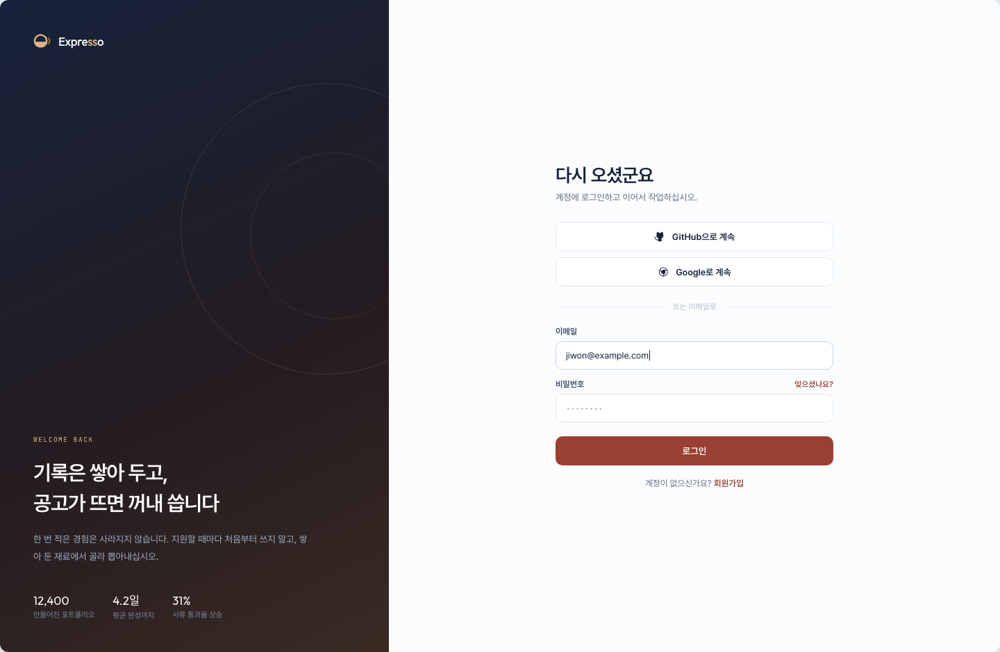
버튼과 입력란의 동작
| 요소 | 동작 | 이동 · 결과 |
|---|---|---|
| 이메일 입력란 | 형식을 검사한다. 형식이 어긋나면 입력란 아래에 사유를 적는다 | — |
| 비밀번호 입력란 | 입력값을 가려서 표시한다 | — |
| [로그인] | POST /v1/auth/login을 호출한다. 두 입력란이 비어 있으면 누를 수 없다 | 성공 시 Home(00) |
| [GitHub으로 계속] | 외부 인증을 시작한다 | 기존 계정은 Home(00) · 처음 쓰는 계정은 온보딩(10c) |
| [Google로 계속] | POST /v1/auth/google로 인증 결과를 넘긴다 | 기존 계정은 Home(00) · 처음 쓰는 계정은 온보딩(10c) |
| [잊으셨나요?] | 등록된 이메일로 재설정 링크를 보낸다 | 발송 안내 표시 |
| [회원가입] | — | 회원가입(10b) |
오류와 예외 처리
- 인증에 실패하면 입력란 아래에 사유를 표시하되, 이메일과 비밀번호 중 무엇이 틀렸는지는 구분하여 알리지 않는다. 사유를 나누어 알리면 계정의 존재 여부가 드러난다.
- 정해진 횟수 이상 연속으로 실패한 접근은 일정 시간 제한한다.
- 외부 인증 제공자가 응답하지 않으면 소셜 버튼을 비활성 상태로 두고 이메일 방식으로 안내한다.
- 이미 로그인한 상태에서 이 주소로 접근하면 Home(00)으로 자동 이동한다.
- 삭제를 요청한 계정으로 로그인하면 유예 기간과 취소 경로를 먼저 안내한다.
5.3 사용자 화면설계(웹)
5.1에서 식별한 모든 사용자 메뉴의 화면을 설계한다. 아래 표는 화면번호와 라우트의 대응이며, 이어서 화면마다 캡처와 함께 그 화면이 하는 일 · 주요 구성 요소 · 사용자에게 하는 역할 · 기능 요구사항 · 제약조건을 적는다.
| 화면번호 | 화면명 | 라우트 | 도메인 |
|---|---|---|---|
| 00 | Home | /(app)/home | D11 |
| 00b | 공고 AI 검색 결과 | /(app)/jobs | D2 |
| 00c | 통합 검색 · 알림 | 전 화면 오버레이 | D11 |
| 01 | 공고 분석 | /(app)/brew/[brewId]/analyze | D3 |
| 01b | 재료 고르기 | /(app)/brew/[brewId]/materials | D4 |
| 02 | Barista's Counter | /(app)/brew/[brewId]/counter | D5 |
| 02b | 레시피 | /(app)/brew/[brewId]/outline | D6 |
| 03 | 디자인 선택 | /(app)/brew/[brewId]/design | D7 |
| 04 | 다듬기 · 문구 고치기 | /(app)/edit/[portfolioId] | D8 |
| 04b | 다듬기 · 값 미세 조정 | /(app)/edit/[portfolioId] | D8 |
| 04c | 다듬기 · 변경 이력 | /(app)/edit/[portfolioId] | D8 |
| 05 | 내 커리어 | /(app)/career/[categorySlug] | D1 |
| 05b | 내 커리어 · 프로젝트 | /(app)/career/[categorySlug] | D1 |
| 05c | 내 커리어 · 학력 · 이력 | /(app)/career/[categorySlug] | D1 |
| 05d | 내 커리어 · 스킬 · 도구 | /(app)/career/[categorySlug] | D1 |
| 05e | 내 커리어 · 학술 · 집필 | /(app)/career/[categorySlug] | D1 |
| 06 | 공고 탐색 | /(app)/jobs | D2 |
| 06b | 공고 상세 | /(app)/jobs/[jobId] | D2 · D3 |
| 07 | 분석 · 내가 만든 대시보드 | /(app)/analytics | D10 |
| 07b | 지표 추가 | /(app)/analytics | D10 |
| 07c | 위젯 설정 | /(app)/analytics | D10 |
| 08 | 공개 사이트 | /site/[slug] | D9 |
| 08b | 배포 · 버전 | /(app)/edit/[portfolioId]/deploy | D9 |
| 09 | 계정 · 요금제 | /(app)/account | D12 |
| 10 | 로그인 | /(auth)/login | D12 |
| 10b | 회원가입 | /(auth)/signup | D12 |
| 10c | 온보딩 · 목표 | /(auth)/onboarding/goal | D12 |
| 10d | 온보딩 · 재료 채우기 | /(auth)/onboarding/materials | D12 |
| 10e | 온보딩 · 첫 포트폴리오 | /(auth)/onboarding/first-portfolio | D12 |
아래 캡처는 화면 정의서(docs/Expresso Screens.dc.html)의
목업을 그대로 찍은 것이다. 수작업으로 다시 그리면 정의서와 불일치가 발생하며, 불일치가 발생하면
어느 쪽이 맞는지 알 수 없게 된다. 캡처에는 양식이 요구하는 대로 브라우저 프레임을
함께 두었다. 설명은 캡처에 실제로 보이는 요소만을 대상으로 적는다.
■ Home — 화면번호 00
/(app)/home · D11
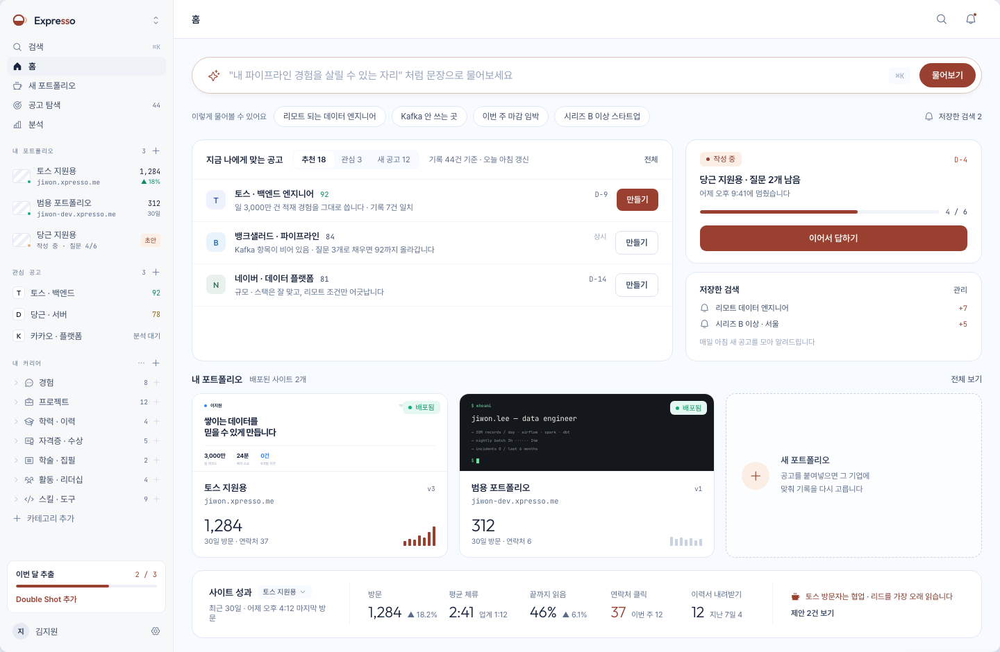
본 화면은 로그인 직후 처음 열리는 화면이며, 사용자가 다음에 할 일을 고르는 출발점이다. 제작 중인 포트폴리오 · 관심 공고 · 추천 공고 · 배포한 사이트의 성과를 한 화면에 모아, 사용자가 메뉴를 뒤지지 않고도 지금 손대야 할 것을 판단하게 한다.
주요 구성 요소
- 검색 입력부 — 조건을 문장으로 적어 공고를 찾는다. 아래에 예시 문장 네 개를 두어, 무엇을 어떻게 적어야 하는지 처음 온 사용자도 알 수 있게 한다.
- 추천 공고 목록 — 추천 · 관심 · 새 공고의 세 묶음으로 나누고, 목록 위에 「기록 44건 기준 · 오늘 아침 갱신」과 같이 산출 근거와 시점을 적는다. 공고마다 회사 · 직무 · 마감 잔여일 · 추천 사유 한 문장 · 일치한 기록 수를 표시하고, 「만들기」로 그 공고를 목표로 제작을 시작한다.
- 제작 중 카드 — 중단된 제작이 있으면 남은 질문 수와 마지막으로 멈춘 시각을 적고 「이어서 답하기」를 둔다.
- 사이트 성과 카드 — 배포한 사이트의 최근 30일 방문 · 평균 체류 시간 · 완독률 · 연락처 클릭 · 이력서 내려받기를 전월 대비 변화와 함께 보이고, 해석 한 문장과 개선 제안으로 잇는다.
- 사이드바 — 홈 · 새 포트폴리오 · 공고 탐색 · 분석 · 내 포트폴리오 · 관심 공고 · 내 커리어 카테고리를 세로로 놓고, 맨 아래에 이번 달 남은 생성 횟수와 계정 진입점을 둔다.
사용자에게 하는 역할
홈이 하는 일은 사용자에게 「무엇을 해야 하는지」를 알려 주는 것이다. 서비스의 기능이 많더라도 사용자가 한 번에 마주하는 선택지는 마감이 가까운 공고, 멈춘 제작, 성과가 움직인 사이트의 셋으로 좁혀진다. 또한 추천의 근거와 갱신 시점을 함께 보여 추천 결과를 신뢰할 수 있는지 사용자가 스스로 판단하게 한다.
기능 요구사항
- 추천 목록은 사용자의 기록 수와 최종 갱신 시각을 함께 제시하며, 추천마다 근거가 된 기록 건수를 표시한다.
- 제작 중 항목은 마지막 진행 지점을 보존하여, 「이어서 답하기」가 중단된 단계로 정확히 복귀하도록 한다.
- 성과 지표는 배포된 사이트가 있을 때만 표시하고, 없으면 해당 영역을 아예 두지 않는다.
- 남은 생성 횟수는 서버의 권한 판정 결과를 그대로 반영하며, 소진 시 제작 진입점 대신 남은 횟수와 초기화 날짜를 표시한다.
- 검색 입력은 자연어 문장을 그대로 받아 공고 AI 검색 결과 화면으로 전달한다.
제약조건
- 추천은 사용자의 기록이 있을 때만 산출한다. 기록이 없는 신규 계정에는 추천 대신 온보딩으로 유도하는 안내를 둔다.
- 지표는 일 단위로 집계한 값을 사용하므로 당일 데이터는 반영되지 않는다. 이 때문에 화면에 마지막 집계 시점을 명시한다.
- 한 화면에 놓는 카드 수는 고정하지 않고 사용자의 상태에 따라 달라진다. 다만 카드가 없어 빈 영역이 생기는 경우 문구로 채우지 않고 영역 자체를 제거한다.
■ 공고 AI 검색 결과 — 화면번호 00b
/(app)/jobs · D2
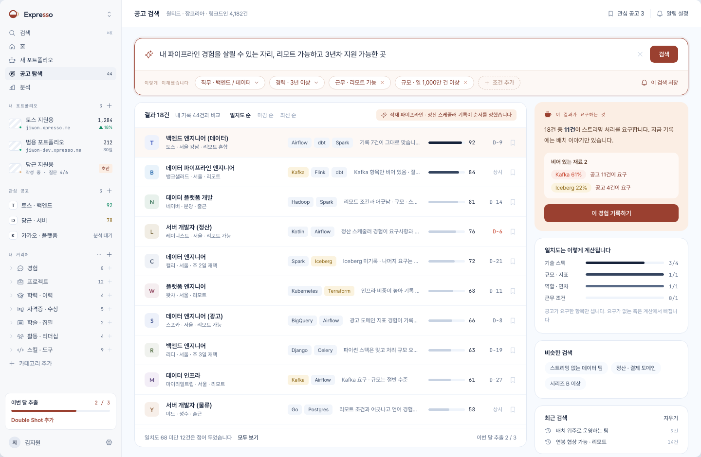
본 화면은 홈이나 공고 탐색에서 문장으로 검색한 결과를 보여준다. 질의를 조건으로 해석한 결과를 먼저 제시하고, 그 조건으로 찾은 공고를 사용자의 기록과 대조하여 정렬한다. 검색 결과 목록과 그 결과가 사용자에게 요구하는 것의 요약을 좌우로 나누어 배치한다.
주요 구성 요소
- 질의 해석부 — 사용자가 적은 문장과 그것을 해석한 조건(직무 · 경력 · 근무 형태 · 규모)을 칩으로 함께 보인다. 잘못 읽은 조건은 칩을 눌러 수정하고, 「조건 추가」로 조건을 더한다. 「이 검색 저장」으로 같은 조건을 저장한 검색으로 등록한다.
- 결과 목록 — 공고마다 회사 · 근무지 · 근무 형태 · 요구 스택 · 마감 잔여일과 함께, 사용자의 기록과 대조한 결과를 한 문장으로 적는다. 정렬은 일치도 순 · 마감 순 · 최신 순의 세 가지이며 기본값은 일치도 순이다.
- 일치도 산출 안내 — 일치도를 구성하는 네 축(기술 스택 · 규모와 지표 · 역할과 연차 · 근무 조건)을 제시하고, 공고가 요구하지 않은 축은 계산에서 제외한다는 규칙을 함께 적는다.
- 비어 있는 재료 — 결과 전체가 공통으로 요구하는데 사용자의 기록에는 없는 항목을 요구 비율과 공고 건수로 제시하고, 「이 경험 기록하기」로 기록 작성으로 연결한다.
- 검색 이력 — 비슷한 검색 제안과 최근 검색을 오른쪽 아래에 두어 조건을 바꾸어 가며 탐색하게 한다.
사용자에게 하는 역할
검색 결과는 지금 지원할 수 있는 공고와 지원하기 위해 채워야 할 것을 동시에 알려 준다. 결과를 순서대로 나열하는 데 그치지 않고 순서를 정한 근거를 함께 제시하므로, 사용자는 결과를 받아들일지 조건을 고칠지 판단할 수 있다. 또한 여러 공고가 공통으로 요구하는 빈 항목을 묶어 보여, 다음에 쌓을 기록의 우선순위를 정하게 한다.
기능 요구사항
- 질의 해석 결과는 반드시 화면에 노출하고 사용자가 수정할 수 있어야 한다. 해석이 틀린 상태로 검색이 반복되는 것을 막기 위함이다.
- 일치도가 임계값에 미달한 결과는 접어 두되 건수를 표시하고, 「모두 보기」로 펼칠 수 있게 한다.
- 저장한 검색은 주기적으로 재실행하여 새로 올라온 공고를 알림으로 전달한다.
- 각 공고 행에는 판정 사유를 한 문장으로 반드시 표시한다. 점수만 제시하는 것을 금지한다.
- 공고를 선택하면 공고 상세 화면으로 이동하고, 검색 조건은 뒤로 이동할 때 유지한다.
제약조건
- 수집 대상은 어댑터가 구현된 채널로 한정한다. 채널마다 제공하는 항목이 달라, 특정 채널에서 근무 형태나 연봉이 비어 있을 수 있다.
- 일치도는 공고가 요구한 축만으로 계산하므로 공고 간 절대 비교에는 사용하지 않는다. 같은 검색 결과 내부의 상대 순서로만 의미를 가진다.
- 자연어 해석은 언어 모델을 호출하므로 응답 지연이 발생할 수 있다. 이 경우 해석 이전에 원문 질의로 수행한 결과를 먼저 표시한다.
- 저장한 검색의 수는 요금제에 따라 제한된다.
■ 통합 검색 · 알림 — 화면번호 00c
전 화면 오버레이 · D11
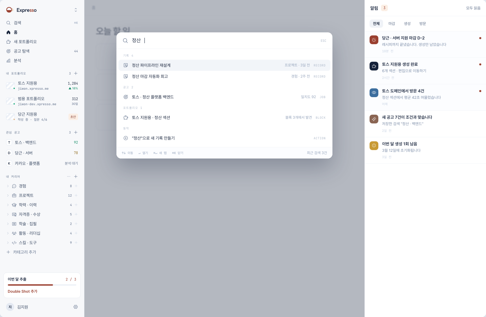
본 화면은 어느 화면에서든 단축키로 열리는 통합 검색과 알림이다. 화면을 이동하지 않고 겹쳐 열리므로 작업 중이던 문맥이 유지된다. 왼쪽은 한 번의 입력으로 여러 종류의 대상을 찾는 검색이고, 오른쪽은 지금 처리할 일을 모은 알림이다.
주요 구성 요소
- 통합 검색 — 입력한 낱말로 기록 · 공고 · 포트폴리오 · 포트폴리오 내부 블록을 함께 찾고, 종류마다 배지를 붙여 구분한다. 결과 그룹마다 건수를 표시한다.
- 동작 결과 — 검색어로 새 기록을 만드는 동작을 결과 목록 안에 함께 둔다. 찾으려던 것이 없을 때 화면을 옮기지 않고 그 자리에서 만들 수 있게 하기 위함이다.
- 키보드 안내 — 이동 · 열기 · 새 탭으로 열기 · 닫기의 단축키를 목록 아래에 상시 표시한다.
- 알림 목록 — 마감 임박 · 생성 완료 · 방문 발생 · 조건에 맞는 새 공고 · 남은 생성 횟수를 시간 역순으로 쌓고, 유형별 필터와 「모두 읽음」을 둔다.
- 알림 본문 — 알림마다 제목과 함께 다음 행동을 지시하는 한 문장을 붙인다. 「생성만 남았습니다」와 같이 무엇이 남았는지 적는다.
사용자에게 하는 역할
통합 검색은 서비스 전체를 관통하는 이동 수단이다. 사용자는 기록이 어느 카테고리에 있는지, 블록이 어느 포트폴리오에 있는지 기억하지 않아도 낱말 하나로 도달할 수 있다. 알림은 사용자가 놓치면 손해가 발생하는 것, 즉 마감과 한도 소진을 우선으로 모아 제시한다.
기능 요구사항
- 검색은 대상 종류를 가로질러 한 번에 수행하고, 결과는 종류별로 묶어 제시한다.
- 검색과 이동은 키보드만으로 완결되어야 한다. 마우스 조작을 필수로 요구하지 않는다.
- 최근 검색을 보관하여 입력 이전에 제시하고, 사용자가 이력 전체를 지울 수 있게 한다.
- 알림은 유형으로 필터링할 수 있어야 하며, 읽음 처리는 개별과 일괄을 모두 지원한다.
- 알림을 선택하면 해당 대상 화면의 정확한 위치로 이동한다.
제약조건
- 검색 대상은 요청한 사용자가 소유한 자료로 한정한다. 다른 사용자의 기록과 포트폴리오는 검색 결과에 포함되지 않는다.
- 블록 검색은 편집 중인 최신 내용을 대상으로 한다. 배포 시점의 스냅샷은 검색 대상에서 제외한다.
- 알림은 서비스 내부 알림과 발송 알림을 같은 원본에서 만들지만, 발송 여부는 알림 설정에 따른다.
- 오버레이 상태에서는 배경 화면의 조작을 차단한다. 편집 중 데이터가 두 경로로 동시에 수정되는 것을 막기 위함이다.
■ 공고 분석 — 화면번호 01
/(app)/brew/[brewId]/analyze · D3
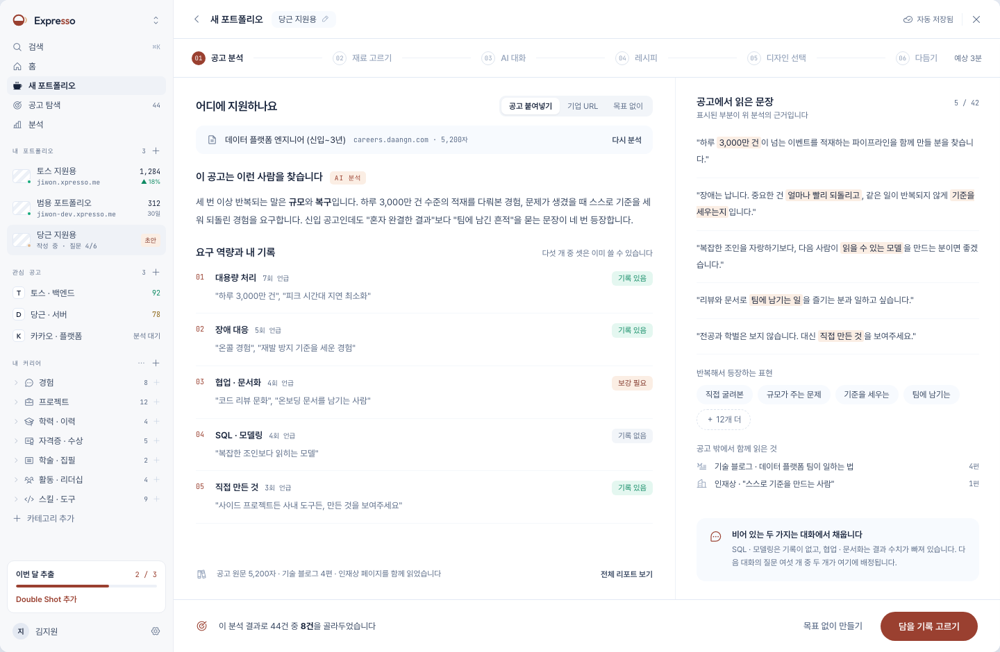
본 화면은 포트폴리오 제작의 첫 단계이며, 지원할 공고를 읽어 요구 사항을 정리한다. 제작 흐름 전체를 여섯 단계로 상단에 고정 표시하고 현재 단계를 강조한다. 왼쪽은 분석 결과, 오른쪽은 그 결과의 근거가 된 공고 원문이다.
주요 구성 요소
- 단계 표시부 — 공고 분석 · 재료 고르기 · AI 대화 · 레시피 · 디자인 선택 · 다듬기의 여섯 단계와 남은 예상 소요 시간, 자동 저장 상태를 함께 표시한다.
- 공고 입력부 — 입력 방법을 세 가지로 제시한다. 공고 전문을 붙여넣는 방법, 기업 채용 페이지 주소를 넣는 방법, 목표 공고 없이 범용으로 만드는 방법이다. 입력이 끝나면 원본의 출처와 분량을 표시한다.
- 요구 역량 분석 — 공고에서 추출한 역량마다 언급 횟수와 사용자 기록의 충족 상태를 「기록 있음 · 보강 필요 · 기록 없음」의 세 값으로 표시하고, 그 판정의 근거가 된 공고 문장을 인용한다.
- 원문 대조부 — 공고 원문을 그대로 두고 분석에 사용된 문장을 강조 표시한다. 반복해서 등장하는 표현과 공고 밖에서 함께 읽은 자료(기술 블로그 · 인재상 페이지)의 목록을 함께 제시한다.
- 다음 단계 진입부 — 분석 결과로 미리 선별한 기록 건수를 알리고 「담을 기록 고르기」로 다음 단계로 이동한다. 「다시 분석」은 같은 공고를 다시 읽는다.
사용자에게 하는 역할
공고 분석은 사용자가 무엇을 써야 하는지를 공고에서 직접 확인하게 한다. 분석 결과를 결론만 제시하면 사용자는 그것이 맞는지 알 수 없으므로, 판정마다 원문 문장을 함께 두어 검증 가능하게 한다. 또한 기록이 없는 역량을 미리 드러내어 이후 대화 단계에서 무엇을 물을지 예고하는 역할도 한다.
기능 요구사항
- 공고 입력은 붙여넣기 · URL · 미지정의 세 경로를 모두 지원하며, 어느 경로로 들어와도 이후 단계는 동일하다.
- 분석 결과의 각 항목은 근거 문장을 반드시 포함한다. 근거를 제시할 수 없는 항목은 결과에 포함하지 않는다.
- 분석에 사용한 자료의 출처와 분량을 화면에 명시한다.
- 분석은 재실행할 수 있어야 하며, 재실행 결과가 이전 결과를 대체하더라도 진행 중인 제작은 중단되지 않는다.
- 분석이 끝나면 사용자 기록 중 해당 공고와 관련된 것을 선별하여 다음 단계의 초기 선택으로 전달한다.
제약조건
- 기업 채용 페이지 주소로 입력하는 경우, 페이지 구조에 따라 본문 추출이 실패할 수 있다. 이때는 붙여넣기로 전환하도록 안내한다.
- 분석은 언어 모델 호출을 포함하므로 즉시 완료되지 않는다. 진행 중에는 단계 표시부에 상태를 표시하고 사용자가 화면을 떠나도 작업은 계속된다.
- 공고 밖 자료 수집은 기업의 공개 페이지로 한정한다. 로그인이 필요한 자료는 수집하지 않는다.
- 분석 결과는 사용자의 기록 상태를 기준으로 산출하므로, 기록이 추가되면 같은 공고의 판정이 달라질 수 있다.
■ 재료 고르기 — 화면번호 01b
/(app)/brew/[brewId]/materials · D4
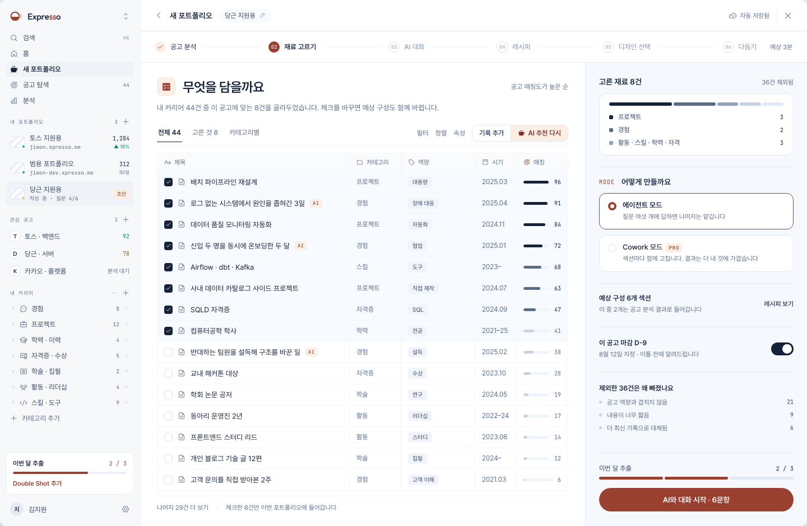
본 화면은 공고 분석 다음 단계이며, 포트폴리오에 담을 기록을 고르고 제작 방식을 정한다. 왼쪽에 사용자의 기록 전체를 표로 놓고, 오른쪽에 선택 결과와 제작 방식 · 마감을 모은다. 공고 분석 결과로 선별된 기록은 미리 선택된 상태로 제시된다.
주요 구성 요소
- 기록 표 — 제목 · 카테고리 · 역량 · 시기 · 공고 일치도를 열로 갖는 표이다. 기본 정렬은 일치도가 높은 순이며, 카테고리별 묶음 보기 · 필터 · 정렬 · 표시 속성 선택을 지원한다.
- 선택 요약 — 고른 기록 수와 제외된 기록 수를 함께 표시하고, 제외된 기록의 사유를 「공고 역량과 겹치지 않음 · 내용이 너무 짧음 · 더 최신 기록으로 대체됨」과 같이 유형으로 제시한다.
- 제작 방식 선택 — 질문에 답하면 나머지를 맡기는 방식과, 섹션마다 함께 고치는 방식의 두 가지를 제시한다. 후자는 상위 요금제에서만 선택할 수 있으며 등급 표시를 함께 붙인다.
- 기록 보강 — 「기록 추가」로 이 화면을 벗어나지 않고 기록을 새로 만들고, 「AI 추천 다시」로 선별을 다시 받는다.
- 마감 안내 — 목표 공고의 마감 일시와 사전 알림 시점을 표시하여, 제작 속도를 사용자가 조절하게 한다.
사용자에게 하는 역할
포트폴리오에 담을 내용을 사용자가 최종 결정하는 자리가 이 단계이다. 추천은 초기값일 뿐이며, 제외 사유를 함께 제시하여 사용자가 그 판단을 뒤집을 수 있게 한다. 또한 예상 섹션 수를 미리 알려 결과물의 규모를 가늠하게 한다.
기능 요구사항
- 선택은 사용자가 언제든 변경할 수 있어야 하며, 추천에 의한 초기 선택과 사용자의 수정을 구분하여 표시한다.
- 제외된 기록은 감추지 않고 사유와 함께 열람할 수 있게 한다.
- 제작 방식 중 상위 요금제 전용 항목은 선택 이전에 필요한 등급을 표시하고, 선택 시 요금제 안내로 연결한다.
- 선택한 기록의 수와 종류로부터 예상 섹션 구성을 산출하여 표시한다.
- 이 화면의 선택 결과는 다음 단계인 대화의 질문 구성에 사용된다.
제약조건
- 선택할 수 있는 기록은 본인이 소유한 기록으로 한정한다.
- 제작 방식은 이 단계에서 확정하며, 대화가 시작된 뒤에는 같은 제작 안에서 변경할 수 없다.
- 포트폴리오 하나에 담을 수 있는 기록 수의 상한은 템플릿의 섹션 구조에 따라 달라진다.
- 기록이 일정 수 미만이면 선별의 의미가 없으므로, 이 경우 온보딩의 기록 채우기 단계로 안내한다.
■ Barista's Counter — 화면번호 02
/(app)/brew/[brewId]/counter · D5
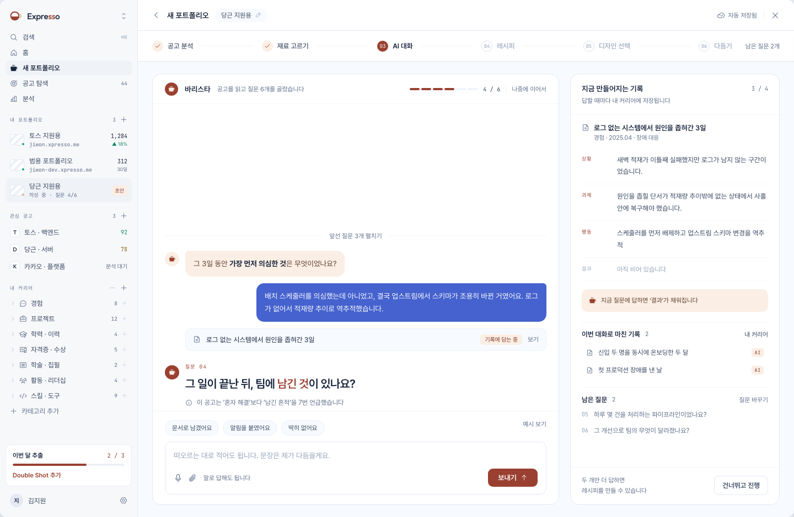
본 화면에서는 AI가 묻고 사용자가 답한다. 공고 분석에서 비어 있던 항목을 질문으로 바꾸어 묻고, 사용자의 답을 그 자리에서 커리어 기록으로 구조화한다. 왼쪽은 대화, 오른쪽은 그 대화로 만들어지는 중인 기록이다.
주요 구성 요소
- 진행 표시 — 준비된 질문 수와 남은 질문 수를 상단에 표시하고, 이미 답한 질문은 접어 둔다. 「나중에 이어서」로 대화를 중단하고 나중에 같은 지점에서 재개한다.
- 질문부 — 질문마다 그 질문을 고른 근거를 함께 적는다. 공고에서 반복된 표현과 그 횟수를 제시하여, 사용자가 질문의 의도를 이해한 상태로 답하게 한다.
- 답변 입력부 — 자유 입력을 기본으로 하고, 짧은 선택지와 예시 보기를 함께 제공한다. 음성으로도 답할 수 있다.
- 기록 미리보기 — 답변이 상황 · 과제 · 행동 · 결과의 네 항목으로 채워지는 과정을 실시간으로 보인다. 아직 비어 있는 항목은 비어 있다고 명시하고, 지금 질문이 그 항목을 채운다는 사실을 함께 적는다.
- 질문 관리 — 남은 질문을 미리 보이고 「질문 바꾸기」로 교체하며, 「건너뛰고 진행」으로 남은 질문 없이 다음 단계로 넘어간다.
사용자에게 하는 역할
대화는 사용자가 글쓰기의 부담 없이 자신의 경험을 정리하게 한다. 사용자는 문장을 완성하지 않아도 되고 떠오르는 대로 답하면 되며, 문장 정리는 서비스가 담당한다. 또한 그 답변이 커리어 기록으로 저장된다는 것을 오른쪽 영역에서 상시 확인하게 한다.
기능 요구사항
- 질문은 공고 분석 결과와 선택된 기록을 근거로 생성하며, 질문마다 선정 근거를 표시한다.
- 답변은 입력하는 즉시 기록으로 저장한다. 대화를 끝까지 진행하지 않아도 답한 부분까지는 남아야 한다.
- 기록 미리보기는 채워진 항목과 비어 있는 항목을 구분하여 표시한다.
- 사용자는 질문을 교체하거나 남은 질문을 건너뛸 수 있으며, 건너뛴 경우에도 다음 단계로 진행할 수 있다.
- 중단 시점을 저장하여 홈의 제작 중 카드와 이 화면의 재개 지점이 일치하게 한다.
제약조건
- 답변으로 만든 기록은 사용자의 확인 없이 확정하지 않는다. 확정 이전 상태를 화면에 명시한다.
- 질문 수는 제작 방식과 선택한 기록 수에 따라 달라지며, 사용자가 임의로 늘릴 수 없다.
- 음성 입력은 브라우저의 음성 인식 기능에 의존하므로 지원하지 않는 환경에서는 노출하지 않는다.
- 대화 응답은 언어 모델 호출을 포함하므로 지연이 발생할 수 있다. 지연 중에도 이미 입력한 답변은 유실되지 않아야 한다.
■ 레시피 — 화면번호 02b
/(app)/brew/[brewId]/outline · D6
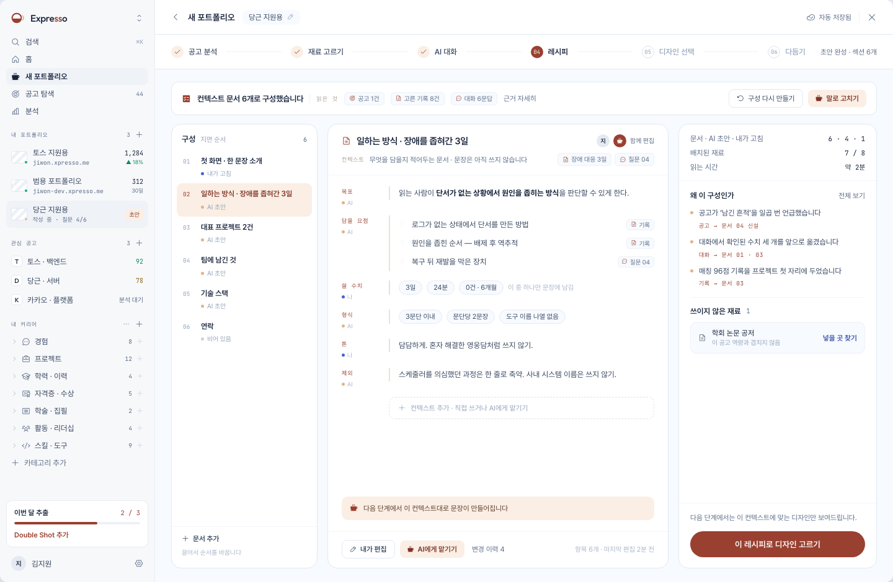
본 화면은 대화 다음 단계이며, 공고와 기록과 대화를 근거로 구성한 포트폴리오의 구조를 확인하고 수정한다. 이 단계에서는 문장을 쓰지 않는다. 어떤 지면을 어떤 순서로 두고 각 지면에 무엇을 담을지만 정한다. 왼쪽은 지면 목록, 가운데는 선택한 지면의 작성 지침, 오른쪽은 이 구성을 만든 근거이다.
주요 구성 요소
- 지면 목록 — 섹션을 순서대로 나열하고 끌어서 순서를 바꾼다. 항목마다 출처를 「AI 초안 · 내가 고침」으로 구분하여 표시하고, 아직 내용이 없는 항목은 「비어 있음」으로 명시한다. 「문서 추가」로 지면을 늘린다.
- 작성 지침 — 선택한 지면에 대하여 목표 · 담을 요점 · 사용할 수치 · 형식(문단 수와 길이) · 어조 · 제외할 내용을 항목으로 적는다. 요점마다 근거가 된 기록을 함께 표시한다.
- 구성 근거 — 각 지면이 왜 그 자리에 있는지를 「공고 → 문서 04 신설」과 같이 원인과 결과의 쌍으로 제시한다.
- 쓰이지 않은 재료 — 선택했으나 배치되지 않은 기록을 사유와 함께 두고, 「넣을 곳 찾기」로 배치를 다시 시도한다.
- 요약 지표 — 배치된 기록 수, 예상 읽는 시간, 마지막 편집 시각, 변경 건수를 함께 표시한다.
사용자에게 하는 역할
레시피 단계는 문장을 생성하기 전에 작성 방향을 확정하는 단계이다. 완성된 글을 놓고 고치면 사용자가 무엇을 바꾸어야 할지 판단하기 어렵고 수정 범위도 커진다. 지침 단계에서 미리 고치게 하여, 이후 생성된 문장이 사용자의 의도와 크게 어긋나지 않게 한다.
기능 요구사항
- 레시피는 지면 단위로 구성하며, 각 지면은 목표 · 요점 · 수치 · 형식 · 어조 · 제외 사항을 갖는다.
- 각 지면의 출처를 초안과 사용자 수정으로 구분하여 표시한다.
- 지면 순서는 끌어서 변경할 수 있고, 변경 결과는 즉시 저장한다.
- 구성의 근거를 사용자가 열람할 수 있어야 한다. 근거를 제시하지 못하는 구성 변경은 수행하지 않는다.
- 레시피는 버전과 완성도를 함께 관리하여, 다시 생성하여도 이전 버전을 잃지 않는다.
제약조건
- 이 단계에서는 본문 문장을 생성하지 않는다. 문장 생성은 다음 단계 이후에 수행한다.
- 지면 수를 늘리면 다음 단계의 생성 시간이 늘어난다. 이 때문에 예상 읽는 시간을 화면에 함께 표시한다.
- 레시피를 다시 만들면 사용자가 직접 고친 지침도 초기화된다. 이 때문에 재생성 이전에 확인을 받는다.
- 함께 편집 기능은 상위 요금제에서만 사용할 수 있다.
■ 디자인 선택 — 화면번호 03
/(app)/brew/[brewId]/design · D7
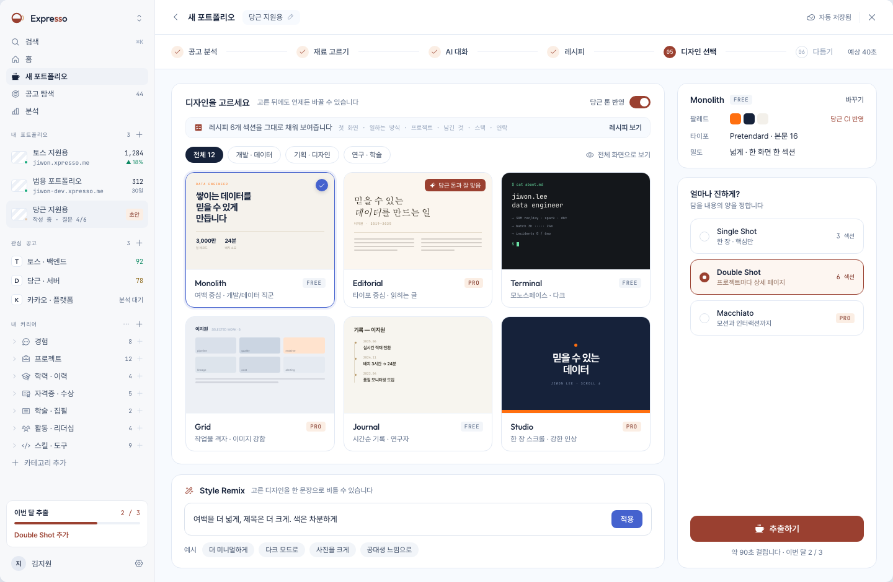
본 화면은 레시피에 맞는 디자인을 고르는 단계이다. 레시피의 섹션을 실제 내용으로 채운 견본을 제시하여, 사용자가 자신의 포트폴리오가 어떻게 보일지 확인한 뒤에 고르게 한다.
주요 구성 요소
- 견본 목록 — 템플릿마다 사용자의 내용이 채워진 축소 견본을 놓고, 이름 · 성격 요약 · 필요 요금제를 함께 표시한다. 직군별 묶음으로 나누어 볼 수 있고, 「전체 화면으로 보기」로 실제 크기로 확인한다.
- 추천 표시 — 목표 공고의 인상과 잘 맞는 템플릿에 사유를 붙여 표시한다.
- 문장으로 변형 — 고른 템플릿을 문장 하나로 비트는 입력부이다. 예시 문장을 함께 제시하고, 적용 결과를 팔레트 · 타이포그래피 · 밀도의 세 항목으로 요약하여 보인다.
- 분량 선택 — 담을 내용의 양을 세 등급으로 제시한다. 핵심만 담는 한 장 구성, 프로젝트마다 상세 지면을 두는 구성, 모션까지 포함하는 구성이다. 등급마다 예상 섹션 수를 표시한다.
- 생성 진입부 — 예상 소요 시간과 이번 달 남은 생성 횟수를 함께 표시하고 생성을 시작한다.
사용자에게 하는 역할
디자인 선택은 결정의 부담을 낮추는 데 목적이 있다. 사용자는 색과 글꼴을 직접 정하지 않고, 완성된 견본에서 고른 뒤 문장으로 조정한다. 또한 고른 뒤에도 언제든 바꿀 수 있음을 화면에 명시하여, 이 선택이 되돌릴 수 없는 결정이 아님을 알린다.
기능 요구사항
- 견본은 사용자의 실제 내용으로 채워 제시하며, 빈 서식은 사용하지 않는다.
- 상위 요금제 전용 템플릿은 목록에서 감추지 않고 필요 등급을 표시한다.
- 문장으로 지시한 변형은 적용 결과를 항목별 요약으로 확인할 수 있어야 한다.
- 생성을 시작하기 전에 예상 소요 시간과 남은 생성 횟수를 표시한다.
- 생성은 사용자가 화면을 떠나도 계속 진행되며, 완료 시 알림으로 통지한다.
제약조건
- 템플릿은 레시피의 섹션 구조를 수용할 수 있는 것만 제시한다. 섹션 수가 맞지 않는 템플릿은 목록에서 제외한다.
- 생성은 이번 달 생성 한도를 소비한다. 한도가 남지 않으면 생성 진입점 대신 남은 횟수와 초기화 날짜를 표시한다.
- 문장 변형은 템플릿이 노출한 조정 범위 안에서만 반영된다. 구조 자체를 바꾸는 지시는 반영하지 않고 그 사실을 알린다.
- 생성 도중에는 같은 제작에 대한 중복 생성을 허용하지 않는다.
■ 다듬기 · 문구 고치기 — 화면번호 04
/(app)/edit/[portfolioId] · D8
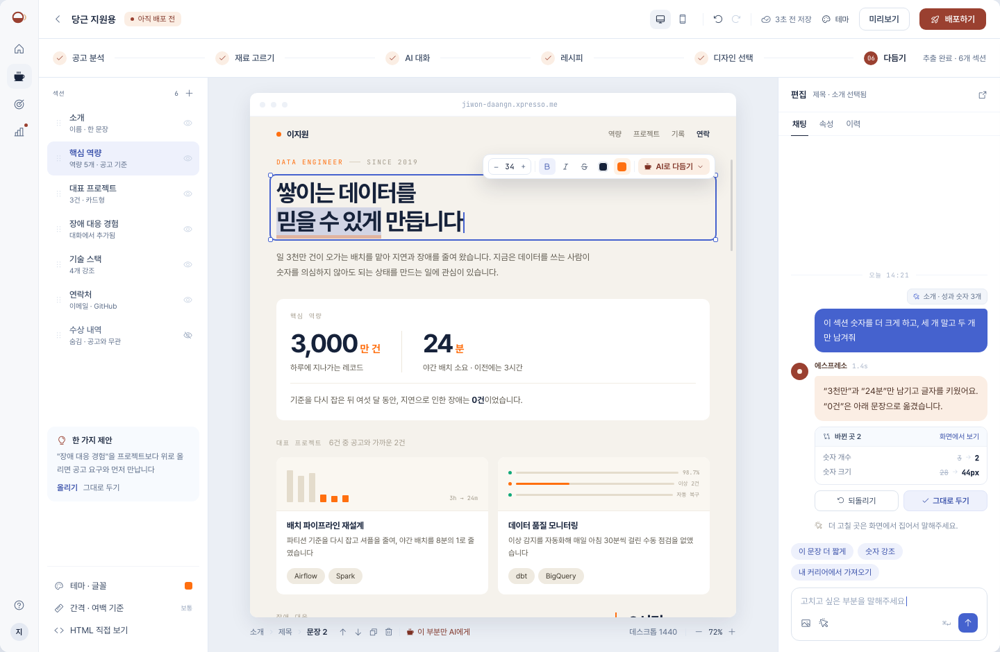
본 화면은 생성이 끝난 포트폴리오를 고치는 단계이며, 제작 흐름의 마지막이다. 왼쪽은 섹션 목록, 가운데는 실제 결과물, 오른쪽은 편집 수단이다. 고치는 방법은 두 가지이며, 화면에서 부분을 집어 말로 지시하는 것을 기본으로 하고 글자를 직접 고치는 것을 함께 지원한다.
주요 구성 요소
- 섹션 목록 — 섹션마다 구성 요약을 붙여 나열하고, 감춘 섹션은 감춘 사유와 함께 표시한다. 순서를 바꾸거나 표시 여부를 전환한다.
- 구성 제안 — 공고 요구와 대조하여 순서를 바꾸는 제안을 한 번에 하나만 제시하고, 「올리기」와 「그대로 두기」로 즉시 처리한다.
- 결과물 미리보기 — 배포될 화면을 그대로 보이며, 요소를 선택하면 선택 상태를 표시한다. 미리보기 폭을 전환하여 다른 화면 크기에서의 모습을 확인한다.
- 대화 편집부 — 선택한 요소를 대상으로 고칠 내용을 문장으로 지시한다. 처리 결과는 바뀐 항목 수와 항목별 변경 내용으로 요약되고, 「화면에서 보기」로 해당 위치로 이동하며 「되돌리기」로 그 지시만 취소한다.
- 상단 상태부 — 배포 여부와 마지막 저장 시각을 표시하고, 테마 · 미리보기 · 배포하기로 이동한다.
사용자에게 하는 역할
다듬기는 사용자가 생성 결과를 자신의 의도에 맞게 수정하는 단계이다. 생성된 문장이 어색한 부분을 사용자가 직접 다시 쓰지 않아도 되도록, 고칠 곳을 집어 말로 지시하는 방식을 기본으로 둔다. 또한 지시의 결과를 항목 단위로 되돌릴 수 있게 하여, 수정 결과가 이전보다 나빠지더라도 복구할 수 있게 한다.
기능 요구사항
- 편집은 요소를 선택한 상태에서 수행하며, 지시의 적용 범위를 선택한 요소로 한정한다.
- 모든 편집은 자동 저장하고 마지막 저장 시각을 표시한다.
- 대화 지시의 결과는 변경 항목과 변경 전후를 함께 제시하고, 지시 단위로 되돌릴 수 있어야 한다.
- 섹션의 표시 여부와 순서는 사용자가 직접 변경할 수 있다.
- 편집 중 다른 경로에서 같은 포트폴리오가 수정된 경우, 나중의 저장을 거부하고 사용자에게 알린다.
제약조건
- 편집은 배포된 문서를 즉시 바꾸지 않는다. 공개된 내용은 새로 배포할 때에만 갱신된다.
- 대화 편집은 언어 모델 호출을 포함하므로 지시마다 지연이 발생한다. 처리 중에는 같은 요소에 대한 중복 지시를 받지 않는다.
- 구조를 바꾸는 지시는 템플릿이 허용하는 범위로 제한한다.
- 제안은 한 번에 하나만 제시한다. 여러 제안을 동시에 띄우면 사용자가 무엇을 먼저 처리해야 하는지 알 수 없기 때문이다.
■ 다듬기 · 값 미세 조정 — 화면번호 04b
/(app)/edit/[portfolioId] · D8
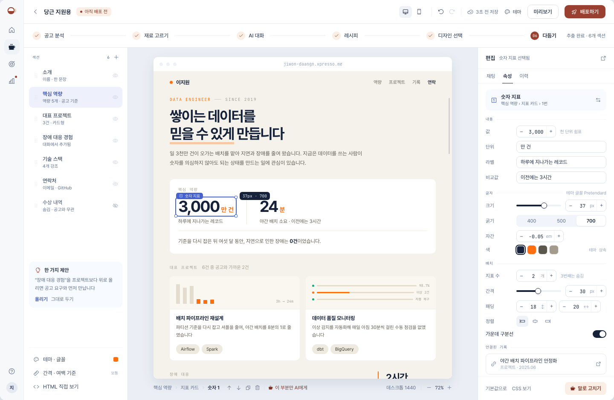
본 화면은 다듬기 화면의 속성 편집 상태이다. 말로 지시하는 방식으로는 원하는 값에 정확히 도달하지 못하는 경우가 있으므로, 선택한 요소의 내용과 글자와 배치를 값으로 직접 조정하는 수단을 함께 둔다.
주요 구성 요소
- 선택 경로 표시 — 지금 편집하는 요소의 위치를 상위 섹션부터 순서대로 표시하여, 어느 요소를 고치는 중인지 분명히 한다.
- 내용 항목 — 값 · 단위 · 라벨 · 비교값과 천 단위 구분 표시 여부를 조정한다.
- 글자 항목 — 글꼴 · 크기 · 굵기 · 자간 · 색을 조정한다. 값을 지정하지 않은 항목은 테마에서 상속받는다는 것을 명시한다.
- 배치 항목 — 표시 개수 · 간격 · 여백 · 정렬을 조정한다. 개수를 줄이면 감춰지는 항목을 함께 알린다.
- 기록 동기화 표시 — 이 값과 연결된 커리어 기록을 표시하고, 기록이 바뀌면 값도 바뀐다는 규칙을 적는다. 직접 고친 값은 기록과 달라질 수 있음을 알리고 「기본값으로」로 되돌린다.
사용자에게 하는 역할
속성 편집은 결과물의 세부까지 사용자가 통제할 수 있게 한다. 다만 조정 항목을 무제한으로 열지 않고 테마가 정한 범위 안에서만 노출하여, 사용자가 값을 만지다가 디자인이 무너지는 일을 방지한다.
기능 요구사항
- 속성 편집은 선택한 요소에만 적용하고, 편집 대상의 경로를 화면에 표시한다.
- 지정하지 않은 속성은 테마 값을 상속하고, 상속 중임을 사용자가 구분할 수 있어야 한다.
- 직접 고친 값과 기록에서 온 값을 구분하여 표시하고, 기본값으로 되돌리는 수단을 제공한다.
- 값 변경은 미리보기에 즉시 반영한다.
- 속성으로 고친 결과도 대화 편집과 동일하게 변경 이력에 기록한다.
제약조건
- 조정 가능한 속성의 범위는 템플릿이 정의한 것으로 한정한다. 임의의 스타일 규칙을 사용자가 추가하지는 못한다.
- 직접 수정한 값은 기록과의 동기화가 해제된다. 이후 기록이 바뀌어도 자동으로 갱신되지 않으며, 이 상태를 화면에 명시한다.
- 값 조정은 화면 크기에 따라 결과가 달라질 수 있으므로, 미리보기 폭을 바꾸어 확인하도록 안내한다.
- 속성 편집은 데스크톱 환경을 기준으로 설계한다. 좁은 화면에서는 대화 편집을 기본으로 제시한다.
■ 다듬기 · 변경 이력 — 화면번호 04c
/(app)/edit/[portfolioId] · D8
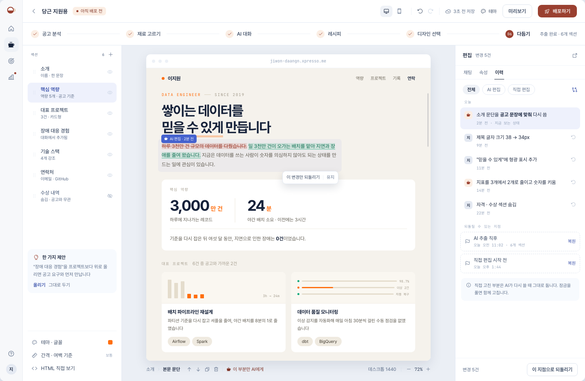
본 화면은 다듬기 화면의 변경 이력 상태이다. AI가 고친 것과 사용자가 직접 고친 것을 구분하여 시간 순으로 쌓고, 변경 하나만 되돌리는 것과 특정 시점 전체로 되돌리는 것을 모두 지원한다.
주요 구성 요소
- 이력 목록 — 변경마다 무엇이 어떻게 바뀌었는지와 경과 시간을 적고, 현재 보고 있는 상태에 표시를 둔다. 전체 · AI 편집 · 직접 편집으로 필터링한다.
- 변경 대조 — 문장이 바뀐 경우 이전 문장과 이후 문장을 나란히 놓고, 「이 변경만 되돌리기」와 「유지」로 처리한다.
- 복원 지점 — 생성 직후, 직접 편집 시작 전과 같이 의미 있는 시점을 따로 표시하여 그 지점으로 되돌린다.
- 보호 규칙 안내 — 사용자가 직접 고친 부분은 이후 AI가 다시 쓸 때 그대로 둔다는 규칙과, 잠금을 풀면 함께 고쳐진다는 사실을 함께 적는다.
사용자에게 하는 역할
변경 이력은 사용자가 마음 놓고 고치게 하는 장치이다. 무엇이 바뀌었는지 되짚을 수 있고 언제든 되돌릴 수 있어야, 사용자는 AI에게 편집을 맡기는 위험을 감수할 수 있다. 또한 직접 고친 부분을 보호하여 사용자의 수정이 다음 AI 편집에 지워지지 않게 한다.
기능 요구사항
- 모든 편집은 주체(AI · 사용자)와 시각과 변경 내용을 함께 기록한다.
- 되돌리기는 변경 단위와 시점 단위를 모두 지원한다.
- 사용자가 직접 고친 요소는 잠긴 상태로 표시하고, AI 편집에서 제외한다. 잠금은 사용자가 해제할 수 있다.
- 현재 보고 있는 상태가 이력의 어느 지점인지 표시한다.
- 복원 지점은 생성 직후와 직접 편집 시작 시점을 자동으로 남긴다.
제약조건
- 이력은 편집 중인 포트폴리오를 대상으로 하며, 이미 배포된 버전은 배포 화면의 버전 관리로 되돌린다.
- 되돌리기 이후의 변경은 새 이력으로 쌓이고, 되돌리기 자체도 이력에 남는다.
- 이력의 보관 기간과 건수에는 상한을 둔다. 상한을 넘은 이력은 복원 지점만 남기고 정리한다.
- 여러 사람이 함께 편집하는 경우 주체는 사용자 단위로 구분하여 기록한다.
■ 내 커리어 — 화면번호 05
/(app)/career/[categorySlug] · D1
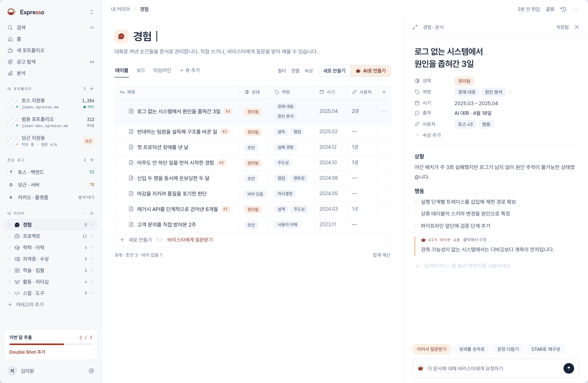
본 화면은 사용자의 커리어 기록을 관리하며, 경험 카테고리를 예로 든 상태이다. 기록은 표 · 보드 · 타임라인의 여러 뷰로 볼 수 있고, 항목을 선택하면 오른쪽에 문서로 열린다. 기록은 직접 쓰거나 대화로 채우며, 두 방법의 결과가 같은 형식으로 저장된다.
주요 구성 요소
- 뷰 전환부 — 같은 기록을 표 · 보드 · 타임라인으로 바꾸어 본다. 뷰마다 필터 · 정렬 · 표시 속성을 따로 저장하고 「뷰 추가」로 뷰를 늘린다.
- 기록 목록 — 제목 · 상태 · 역량 · 시기 · 사용처를 열로 갖는다. 대화로 만든 기록에는 표시를 붙이고, 내용이 없는 기록은 「비어 있음」으로, 정리가 끝난 기록은 「정리됨」으로 상태를 구분한다. 사용처 열은 그 기록이 어느 포트폴리오에 쓰였는지 건수로 알린다.
- 기록 문서 — 선택한 기록을 문서로 열어 제목 · 기간 · 출처 · 사용처와 속성을 보이고, 본문은 상황 · 행동과 같은 구조로 나누어 적는다. 대화로 만든 기록에는 출처와 그 대화의 날짜를 남긴다.
- AI 정리 결과 — 본문에서 뽑은 교훈이나 요점을 별도로 두고, 눌러서 수정할 수 있게 한다.
- 요청 도구 — 「성과를 숫자로」 · 「문장 다듬기」 · 「STAR로 재구성」과 같이 이 문서에 대하여 자주 하는 요청을 버튼으로 제시하고, 「이어서 질문받기」로 대화로 되돌아간다.
사용자에게 하는 역할
커리어 기록은 포트폴리오에 사용할 재료를 축적하는 영역이다. 포트폴리오는 지원할 때마다 새로 생성하지만 기록은 한 번 축적하면 계속 사용하므로, 사용자가 기록을 지속적으로 관리하게 하는 것이 이 화면의 목적이다. 또한 어느 기록이 실제로 포트폴리오에 쓰였는지 표시하여, 다음에 무엇을 보강할지 판단하게 한다.
기능 요구사항
- 기록은 카테고리에 속하고, 카테고리마다 속성 구성과 기본 뷰가 다르다.
- 뷰의 필터 · 정렬 · 표시 속성은 사용자별로 저장하여 다시 방문할 때 유지한다.
- 기록의 출처(직접 작성 · 대화 · 문서 추출)를 구분하여 표시한다.
- 기록마다 어느 포트폴리오에 사용되었는지 건수와 대상을 표시한다.
- 기록은 삭제하여도 즉시 지우지 않고 삭제 표시로 남겨, 사용 중인 포트폴리오가 깨지지 않게 한다.
제약조건
- 기록의 속성 구성은 카테고리의 속성 정의를 따른다. 특정 기록에만 임의의 속성을 추가하지는 못한다.
- 이미 배포된 포트폴리오는 배포 시점의 스냅샷을 사용하므로, 기록을 고쳐도 공개된 내용은 바뀌지 않는다.
- 대화로 만든 기록도 사용자가 수정할 수 있으나, 수정 이후에는 대화의 원문과 달라질 수 있다.
- 기록의 열람과 편집은 소유자로 한정한다. 공유는 읽기 전용 링크로만 제공한다.
■ 내 커리어 · 프로젝트 — 화면번호 05b
/(app)/career/[categorySlug] · D1
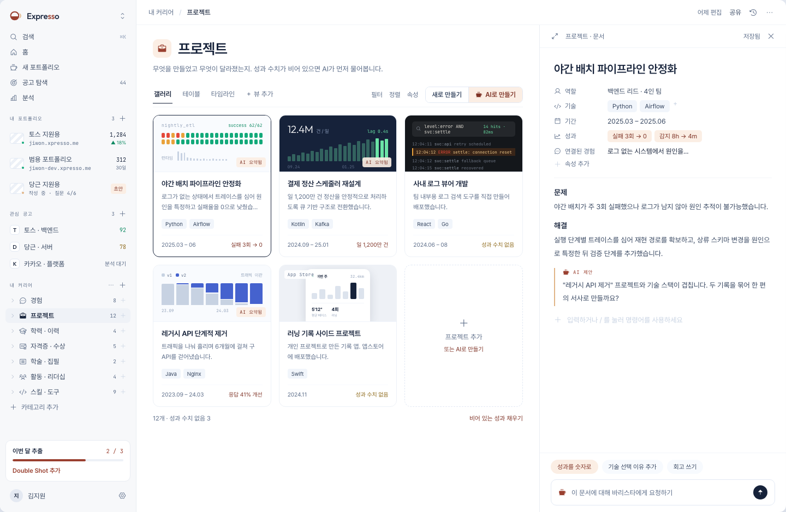
본 화면은 커리어 기록 중 프로젝트 카테고리이다. 카테고리마다 속성과 뷰가 다르다는 원칙을 보이는 예로, 프로젝트는 갤러리 뷰를 기본으로 하고 결과물의 화면이나 지표를 카드의 앞면에 둔다.
주요 구성 요소
- 갤러리 뷰 — 프로젝트마다 대표 화면과 한 문장 요약 · 사용 기술 · 기간 · 핵심 성과를 카드로 보인다. 성과 수치가 없는 프로젝트에는 「성과 수치 없음」을 표시한다.
- 보강 안내 — 목록 아래에 전체 건수와 성과 수치가 없는 건수를 함께 적고, 「비어 있는 성과 채우기」로 해당 항목만 모아 처리한다.
- 프로젝트 문서 — 역할 · 사용 기술 · 기간 · 성과 · 연결된 경험을 속성으로 갖고, 본문은 문제와 해결로 나누어 적는다.
- 기록 간 연결 — 프로젝트에서 파생된 경험 기록을 연결로 표시하여, 같은 사건을 두 카테고리에 중복 입력하지 않게 한다.
- 요청 도구 — 「성과를 숫자로」 · 「기술 선택 이유 추가」 · 「회고 쓰기」와 같이 프로젝트에 특화된 요청을 제시한다.
사용자에게 하는 역할
프로젝트 카테고리는 결과물을 보여줄 수 있는 형태로 정리하게 한다. 프로젝트는 결과물이 있으므로 글보다 화면과 수치가 먼저 읽히며, 이 화면은 그 순서대로 정보를 배치한다. 또한 성과 수치가 빠진 프로젝트를 목록에서 식별하게 하여, 포트폴리오에 쓰기 전에 채우도록 유도한다.
기능 요구사항
- 카테고리마다 기본 뷰와 속성 구성을 다르게 정의할 수 있어야 한다.
- 프로젝트는 대표 이미지를 가질 수 있고, 이미지가 없으면 지표나 텍스트로 대체 표시한다.
- 성과 수치의 유무를 목록에서 식별할 수 있게 표시하고, 없는 항목만 모아 보강할 수 있게 한다.
- 프로젝트와 경험 기록을 서로 연결할 수 있어야 하며, 연결된 기록은 양쪽에서 함께 보인다.
- 업로드한 이미지는 원본과 표시용 크기를 함께 보관한다.
제약조건
- 업로드 파일의 형식과 용량에는 상한을 둔다. 상한을 넘는 파일은 업로드 단계에서 거부한다.
- 대표 이미지는 포트폴리오 템플릿에 따라 잘리는 비율이 달라지므로, 목록에서는 동일 비율로 맞추어 표시한다.
- 기록 간 연결은 같은 사용자의 기록 사이에서만 만든다.
- 성과 수치는 사용자가 입력한 값이며 서비스가 검증하지 않는다. 이 때문에 출처가 된 기록을 함께 연결하도록 유도한다.
■ 내 커리어 · 학력 · 이력 — 화면번호 05c
/(app)/career/[categorySlug] · D1
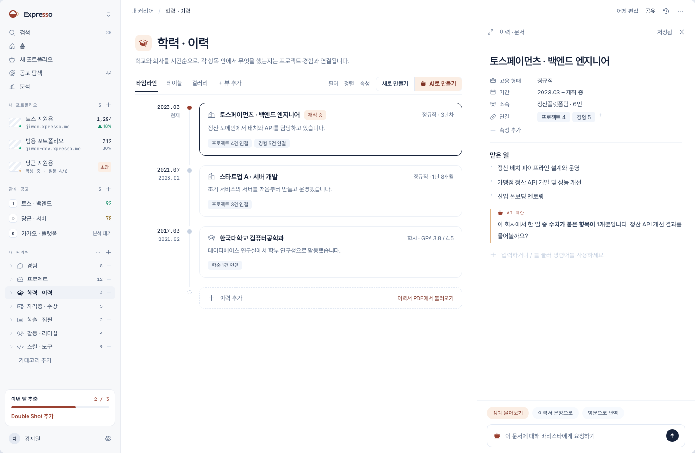
본 화면은 커리어 기록 중 학력과 이력 카테고리이다. 시간 순서가 중요한 카테고리이므로 타임라인 뷰를 기본으로 하고, 현재 재직 중인 항목을 맨 위에 둔다. 각 이력은 그 기간에 수행한 프로젝트와 경험 기록을 연결로 거느린다.
주요 구성 요소
- 타임라인 뷰 — 재직과 재학 이력을 최근 순으로 세로로 놓고, 진행 중인 항목에 상태 표시를 붙인다. 항목마다 고용 형태 · 기간 · 한 문장 요약과 연결된 기록 건수를 적는다.
- 이력 문서 — 고용 형태 · 기간 · 소속 조직과 규모를 속성으로 갖고, 본문에 담당한 일을 목록으로 적는다.
- 연결 표시 — 이 이력에 연결된 프로젝트와 경험의 건수를 표시하고, 눌러서 해당 기록으로 이동한다.
- 이력서 불러오기 — 이력서 파일에서 이력 항목을 추출하여 목록으로 만든다.
- AI 제안 — 수치가 붙은 항목이 부족한 이력을 지적하고, 그 항목을 채우는 질문을 제안한다.
사용자에게 하는 역할
학력과 이력은 사용자의 경력을 시간 축으로 정리하여, 포트폴리오와 이력서가 공통으로 사용하는 기본 구조를 구성한다. 개별 기록은 사건 단위이지만 채용 담당자는 시간 순의 경력을 먼저 확인하므로, 두 표현을 모두 갖추게 한다. 또한 이력마다 연결된 기록 수를 보여, 근거가 비어 있는 기간을 사용자가 발견하게 한다.
기능 요구사항
- 이력은 시작과 종료 시점을 갖고, 종료가 없는 항목은 진행 중으로 표시한다.
- 타임라인은 기간이 겹치는 이력을 함께 표시할 수 있어야 한다.
- 이력과 프로젝트 · 경험 기록을 연결하고, 연결 건수를 이력 항목에 표시한다.
- 이력서 파일에서 추출한 항목은 저장 전에 사용자가 확인하고 수정할 수 있어야 한다.
- 이력의 순서는 시간을 기준으로 자동 정렬하며 사용자가 임의로 바꾸지 않는다.
제약조건
- 이력서 추출은 파일의 구조에 따라 정확도가 달라진다. 이 때문에 추출 결과를 그대로 저장하지 않고 확인 단계를 반드시 둔다.
- 기간이 겹치거나 순서가 맞지 않는 입력은 저장은 허용하되 화면에서 표시하여 사용자가 확인하게 한다.
- 학력과 재직 이력은 사용자가 입력한 내용이며 서비스가 사실 여부를 검증하지 않는다.
- 타임라인 뷰는 항목 수가 많아지면 가독성이 떨어지므로, 일정 수를 넘으면 표 뷰를 함께 권한다.
■ 내 커리어 · 스킬 · 도구 — 화면번호 05d
/(app)/career/[categorySlug] · D1
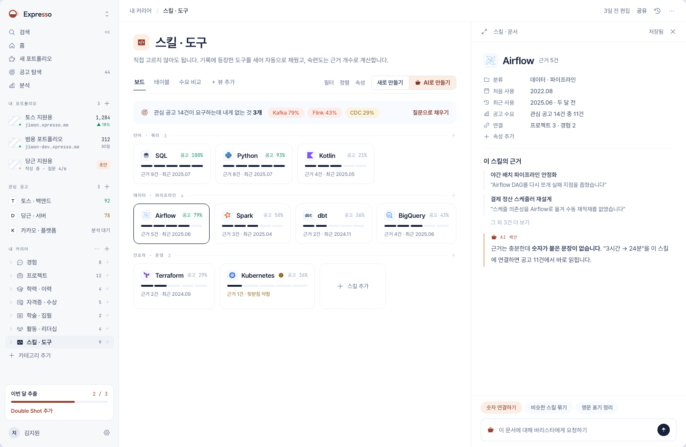
본 화면은 커리어 기록 중 스킬과 도구 카테고리이다. 스킬은 기록에서 추출하며 사용자가 직접 나열하지 않는다. 근거가 있는 스킬만 포트폴리오에 사용한다. 화면은 스킬을 분류별로 묶고, 각 스킬의 공고 수요와 근거 건수를 함께 제시한다.
주요 구성 요소
- 수요 대비 표시 — 관심 공고가 요구하는데 사용자에게 없는 스킬을 상단에 모아 요구 비율과 함께 제시하고, 「질문으로 채우기」로 대화로 연결한다.
- 스킬 목록 — 언어 · 데이터 · 인프라와 같은 분류별로 묶고, 스킬마다 공고 수요 비율 · 근거 건수 · 최근 사용 시점을 적는다. 근거가 부족한 스킬은 「뒷받침 약함」으로 표시한다.
- 스킬 문서 — 분류 · 처음 사용 시점 · 최근 사용 시점 · 공고 수요 · 연결된 기록을 속성으로 갖는다.
- 근거 목록 — 이 스킬을 뒷받침하는 기록과 그 기록에서 해당 스킬이 언급된 문장을 인용으로 함께 보인다.
- AI 제안 — 근거는 있으나 수치가 없는 스킬을 지적하고, 연결할 수치를 제안한다.
사용자에게 하는 역할
스킬 카테고리가 관리하는 것은 목록의 신뢰도이다. 스킬을 자유롭게 적을 수 있게 하면 근거 없는 나열이 되므로, 기록에서 추출하고 근거를 함께 보관한다. 또한 공고 수요와 대조하여, 사용자가 다음에 쌓거나 문서화할 스킬의 우선순위를 정하게 한다.
기능 요구사항
- 스킬은 기록에서 추출하며, 추출한 근거의 건수와 원문 인용을 함께 보관한다.
- 근거가 없는 스킬은 포트폴리오 생성에 사용하지 않는다.
- 각 스킬의 공고 수요는 사용자의 관심 공고를 대상으로 산출하고, 산출 대상 건수를 함께 표시한다.
- 최근 사용 시점을 관리하여 오래 쓰지 않은 스킬을 구분할 수 있게 한다.
- 사용자가 스킬을 직접 추가할 수 있으나, 근거가 없는 상태임을 표시한다.
제약조건
- 공고 수요는 사용자가 관심으로 등록한 공고에 한정하여 계산한다. 전체 채용 시장의 통계가 아니다.
- 스킬 추출은 기록의 문장을 근거로 하므로, 기록에 적히지 않은 역량은 목록에 나타나지 않는다.
- 표기가 다른 같은 스킬이 별개로 잡힐 수 있다. 이 경우 사용자가 병합하도록 수단을 제공한다.
- 숙련도는 서비스가 임의로 등급을 매기지 않는다. 근거 건수와 최근 사용 시점으로만 표현한다.
■ 내 커리어 · 학술 · 집필 — 화면번호 05e
/(app)/career/[categorySlug] · D1
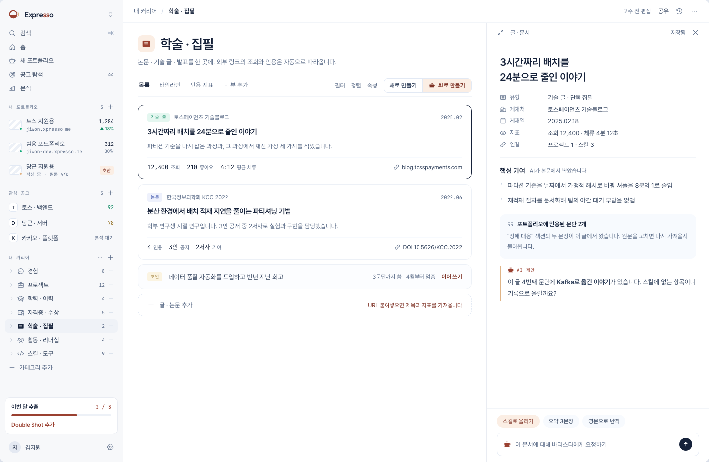
본 화면은 커리어 기록 중 학술과 집필 카테고리이다. 글과 논문은 외부에 공개된 결과물이므로 조회 수 · 인용 수와 같은 외부 지표를 함께 관리하고, 그 내용이 포트폴리오의 어느 문단으로 인용되었는지도 함께 표시한다.
주요 구성 요소
- 목록 뷰 — 기술 글과 논문을 유형 배지와 함께 나열하고, 항목마다 게재처 · 제목 · 요약과 외부 지표를 적는다. 작성이 중단된 글은 진행 상태와 함께 「이어 쓰기」를 둔다.
- 지표 표시 — 글은 조회 · 좋아요 · 평균 체류 시간을, 논문은 인용 수와 공저 정보와 기여 역할을 제시한다.
- 주소로 등록 — 글의 주소를 붙여넣으면 제목과 지표를 가져와 항목을 만든다.
- 기록 문서 — 유형 · 게재처 · 게재일 · 지표 · 연결된 기록을 속성으로 갖고, 본문에서 뽑은 핵심 기여를 목록으로 둔다.
- 인용 표시 — 이 글의 어느 문단이 포트폴리오에 인용되었는지 건수로 표시한다.
- AI 제안 — 본문에 있으나 스킬로 등록되지 않은 항목을 찾아 기록으로 올리도록 제안한다.
사용자에게 하는 역할
학술과 집필 카테고리는 사용자가 이미 외부에 써 놓은 글을 커리어 자산으로 회수하게 한다. 글과 논문은 그 자체로 근거가 되므로, 본문에서 핵심 기여를 뽑아 두면 포트폴리오 작성에 바로 쓸 수 있다. 또한 인용된 문단을 표시하여, 어떤 글이 실제로 성과에 기여했는지 확인하게 한다.
기능 요구사항
- 글과 논문은 유형을 구분하여 저장하고, 유형에 따라 표시하는 지표 항목을 달리한다.
- 외부 주소로 등록한 항목은 제목과 지표를 자동으로 수집하되, 사용자가 수정할 수 있어야 한다.
- 본문에서 추출한 핵심 기여는 사용자가 수정 및 삭제할 수 있다.
- 포트폴리오에 인용된 문단의 건수를 항목에 표시한다.
- 작성 중인 글은 진행 상태를 보관하여 같은 지점에서 이어 쓸 수 있게 한다.
제약조건
- 외부 지표는 수집 시점의 값이므로 실시간 값과 다를 수 있다. 이 때문에 수집 시점을 함께 보관한다.
- 지표 수집은 공개된 페이지에 한정한다. 로그인이 필요한 매체의 지표는 사용자가 직접 입력한다.
- 논문의 인용 수는 외부 색인 서비스의 값에 의존하므로 매체에 따라 제공되지 않을 수 있다.
- 본문 전체를 서비스에 저장하지 않고 요약과 인용 문단만 보관한다. 저작권이 매체에 있는 경우가 있기 때문이다.
■ 공고 탐색 — 화면번호 06
/(app)/jobs · D2
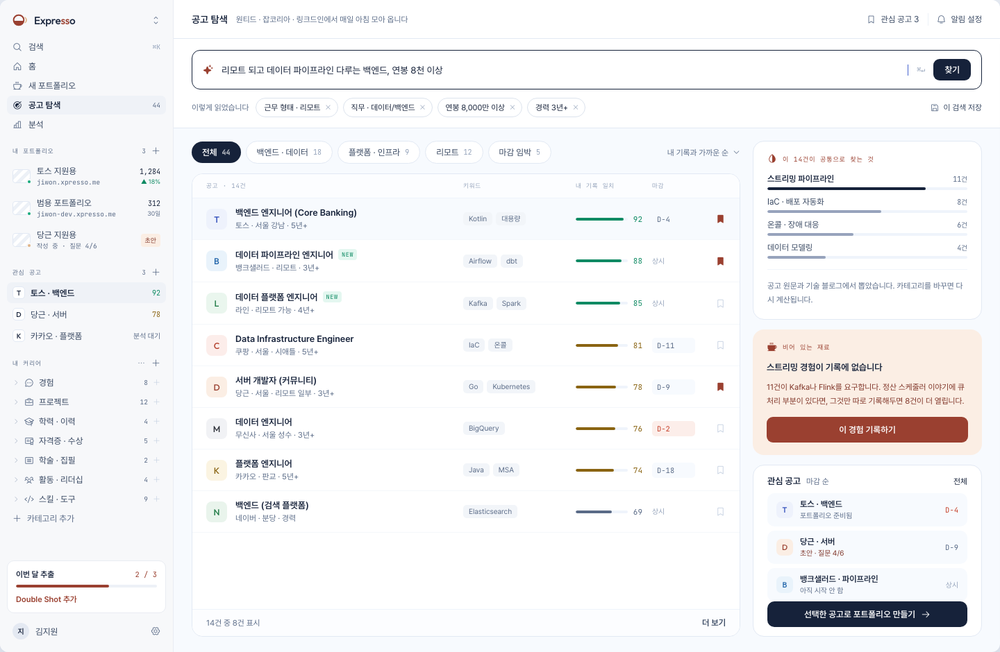
본 화면은 수집한 공고를 탐색한다. 카테고리로 묶어 보는 방식과 조건을 문장으로 적어 찾는 방식을 함께 제공하고, 목록 오른쪽에 그 결과 전체가 공통으로 요구하는 것을 요약하여 개별 공고와 시장 경향을 함께 읽게 한다.
주요 구성 요소
- 검색 입력부 — 조건을 문장으로 받아 해석 결과를 칩으로 제시한다. 「이 검색 저장」으로 조건을 등록하면 새 공고가 올라올 때 알린다.
- 카테고리 탭 — 전체 · 직무별 · 근무 형태별 · 마감 임박 · 기록과 가까운 순의 묶음으로 목록을 바꾼다.
- 공고 목록 — 회사 · 근무지 · 요구 경력 · 주요 키워드 · 기록 일치 여부 · 마감 잔여일을 열로 갖는다. 최근 등록된 공고에는 표시를 붙이고, 표시 건수와 전체 건수를 함께 적는다.
- 공통 요구 요약 — 현재 목록의 공고들이 공통으로 요구하는 항목을 건수와 함께 나열하고, 산출에 사용한 자료와 카테고리를 바꾸면 다시 계산된다는 사실을 명시한다.
- 제작 진행 표시 — 관심 공고마다 포트폴리오 준비 상태를 「준비됨 · 초안 · 아직 시작 안 함」으로 표시하고, 「선택한 공고로 포트폴리오 만들기」로 제작을 시작한다.
사용자에게 하는 역할
공고 탐색은 지원할 곳을 고르는 자리이면서, 시장이 요구하는 것을 파악하는 자리이기도 하다. 공고를 한 건씩 읽는 것만으로는 무엇을 준비해야 하는지 알기 어려우므로, 목록 전체의 공통 요구를 함께 제시하여 준비의 방향을 잡게 한다.
기능 요구사항
- 공고는 정기적으로 수집하고, 마지막 수집 시점을 화면에 표시한다.
- 카테고리를 바꾸면 공통 요구 요약을 다시 산출한다.
- 각 공고에 사용자의 기록 일치 여부를 표시하고, 마감이 임박한 공고를 구분한다.
- 관심 공고로 등록한 공고는 제작 진행 상태를 함께 표시한다.
- 저장한 검색은 조건과 알림 여부를 함께 보관한다.
제약조건
- 수집 대상은 어댑터가 구현된 채널로 한정한다. 채널이 제공하지 않는 항목은 목록에서 비어 있는 상태로 표시한다.
- 공고의 원문 권리는 게시처에 있으므로 원문 전체를 재배포하지 않고, 열람과 지원은 원 게시처로 연결한다.
- 마감이 지난 공고는 목록에서 제외하되 관심으로 등록한 공고는 지난 사실을 표시하여 남긴다.
- 공통 요구 요약은 현재 목록을 대상으로 하므로, 필터를 바꾸면 값이 달라진다.
■ 공고 상세 — 화면번호 06b
/(app)/jobs/[jobId] · D2 · D3
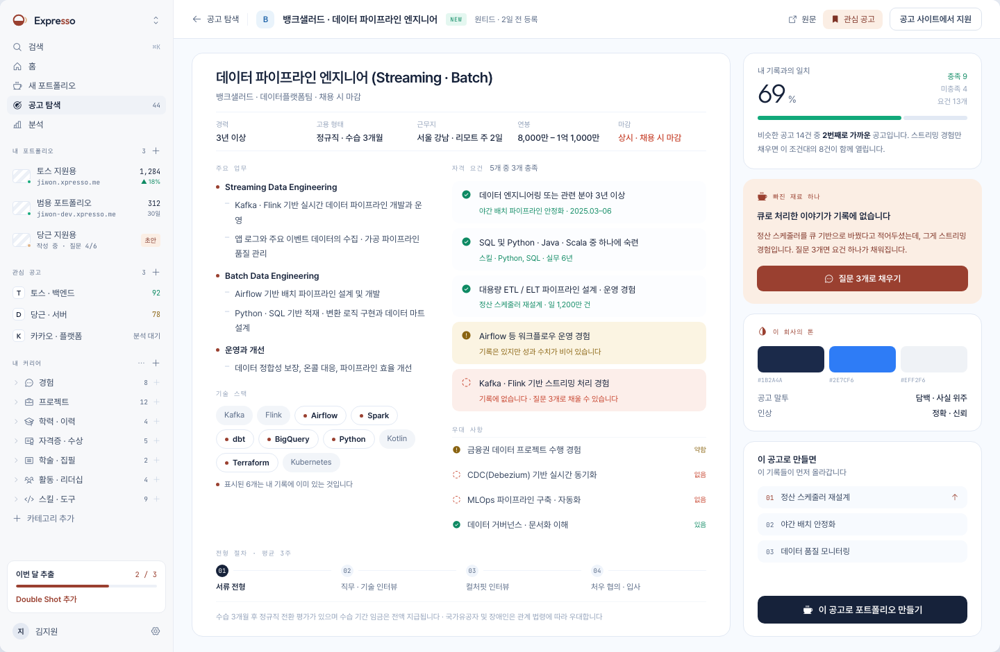
본 화면은 공고 한 건의 상세 화면이다. 왼쪽에 공고 원문을 구조대로 두고, 오른쪽에 사용자의 기록과 대조한 결과를 둔다. 원문을 읽는 동시에 자신의 기록이 어느 요건에 닿는지 확인하게 하는 것이 이 화면의 구성 원리이다.
주요 구성 요소
- 공고 요약부 — 회사 · 팀 · 경력 · 고용 형태 · 근무지 · 연봉 · 마감을 표로 정리하고, 원문 보기와 지원 페이지로 이동하는 경로를 함께 둔다.
- 원문 본문 — 주요 업무 · 기술 스택 · 자격 요건 · 우대 사항 · 전형 절차를 게시된 구조 그대로 표시한다. 사용자의 기록에 이미 있는 기술에는 표시를 붙인다.
- 요건 대조 — 자격 요건과 우대 사항의 항목마다 충족 여부를 판정하고, 충족한 항목에는 근거가 된 기록을, 부족한 항목에는 보강 방법을 함께 적는다.
- 일치 요약 — 전체 요건 수와 충족 · 미충족 건수를 제시하고, 비슷한 공고 가운데 이 공고의 상대 위치를 알린다.
- 회사 톤 분석 — 공고의 색과 말투에서 읽은 인상을 제시한다. 이후 디자인 선택 단계의 추천 근거로 사용된다.
- 제작 진입부 — 이 공고로 만들면 먼저 배치될 기록을 미리 보이고 제작을 시작한다.
사용자에게 하는 역할
공고 상세가 하는 일은 사용자가 지원 여부를 판단하게 하는 것이다. 요건 충족 여부를 근거와 함께 제시하므로, 사용자는 지금 지원할지 기록을 먼저 채울지 결정할 수 있다. 또한 부족한 요건을 채우는 경로를 화면 안에 두어, 판단이 곧 다음 행동으로 이어지게 한다.
기능 요구사항
- 공고 원문의 구조를 보존하여 표시하고, 원 게시처로 이동하는 경로를 제공한다.
- 요건별 판정에는 근거가 된 기록 또는 부족한 이유를 반드시 함께 표시한다.
- 충족 · 미충족 건수를 요약하여 제시한다.
- 부족한 요건은 이를 채우는 대화로 연결한다.
- 이 공고로 제작을 시작하면 분석 결과를 다음 단계로 전달한다.
제약조건
- 요건 판정은 사용자의 기록에 적힌 내용만을 근거로 한다. 기록하지 않은 경험은 미충족으로 판정된다.
- 연봉과 마감 등의 항목은 게시처가 제공하지 않으면 표시하지 않는다. 추정값을 만들지 않는다.
- 판정 결과는 서비스의 해석이며 채용 결과를 보장하지 않는다. 이 사실을 화면에 명시한다.
- 회사 톤 분석은 공개된 공고와 채용 페이지에 한정하여 수행한다.
■ 분석 · 내가 만든 대시보드 — 화면번호 07
/(app)/analytics · D10
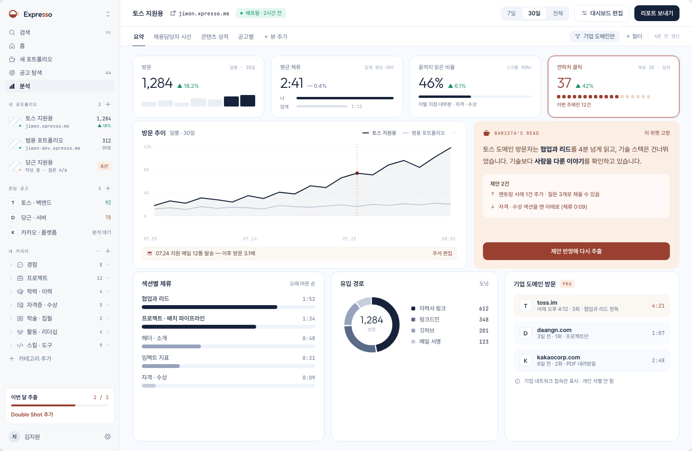
본 화면은 배포한 포트폴리오의 방문 데이터를 보여준다. 고정된 보고서를 제시하지 않고 사용자가 지표를 골라 구성한 대시보드를 보여준다. 위쪽에 요약 지표를, 아래에 추이와 구성 지표를 두며, 해석은 별도의 위젯으로 분리한다.
주요 구성 요소
- 뷰 탭 — 요약 · 채용담당자 시선 · 콘텐츠 성적 · 공고별과 같이 목적이 다른 대시보드를 탭으로 나누고, 「뷰 추가」로 새 대시보드를 만든다. 뷰마다 기간과 필터를 따로 둔다.
- 요약 지표 — 방문 · 평균 체류 · 완독률 · 연락처 클릭을 전 기간 대비 변화와 함께 제시한다. 비교 대상이 있는 지표는 업계 평균을 함께 표시한다.
- 추이 그래프 — 일별 방문 추이를 그리고, 지원 메일 발송과 같은 사건을 주석으로 표시하여 변화의 원인을 함께 읽게 한다.
- 해석 위젯 — 데이터에서 읽은 내용을 문장으로 제시하고, 그에 따른 개선 제안을 근거와 함께 둔다. 제안을 받아들이면 포트폴리오 재생성으로 연결한다.
- 구성 지표 — 섹션별 체류 시간, 유입 경로, 기업 도메인 방문 목록을 제시한다. 기업 도메인 항목은 상위 요금제에서만 열린다.
사용자에게 하는 역할
분석 화면은 사용자가 포트폴리오를 수정할 근거를 확인하는 화면이다. 방문 수만 제시하면 수정 대상을 판단할 수 없으므로, 섹션별 열람 정도와 이탈 지점을 함께 제시한다. 해석과 제안을 데이터 옆에 두어, 분석이 다시 제작으로 이어지게 한다.
기능 요구사항
- 대시보드는 사용자가 구성하며, 뷰 단위로 지표 구성과 기간과 필터를 저장한다.
- 모든 지표는 비교 기준(전 기간 · 업계 평균 등)을 함께 제시한다.
- 추이 그래프에는 사용자가 주석을 추가할 수 있어야 한다.
- 해석 위젯의 제안은 근거가 된 지표를 함께 표시하고, 반영 경로를 제공한다.
- 상위 요금제 전용 지표는 목록에서 감추지 않고 필요 등급을 표시한다.
제약조건
- 방문 데이터는 일 단위로 집계하므로 당일 값은 확정되지 않는다. 마지막 집계 시각을 화면에 표시한다.
- 기업 도메인 방문은 접속한 네트워크의 조직 정보만 표시하고 개인은 식별하지 않는다. 이 원칙을 화면에 명시한다.
- 업계 평균은 직군 단위의 익명 집계값이며, 표본이 부족한 직군에는 제시하지 않는다.
- 배포되지 않은 포트폴리오에는 지표가 없으므로 이 화면을 제공하지 않는다.
■ 지표 추가 — 화면번호 07b
/(app)/analytics · D10
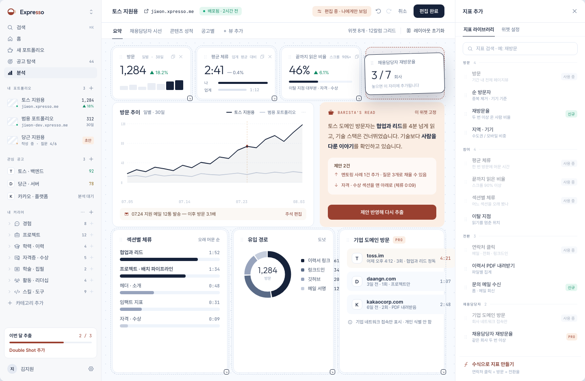
본 화면은 분석 대시보드의 편집 상태이며, 지표를 추가할 때 나타난다. 오른쪽 지표 라이브러리에서 원하는 지표를 끌어 격자 위에 놓는 방식으로 구성하고, 편집 중임을 상단에 표시하여 지금 보이는 화면이 다른 사람에게는 보이지 않음을 알린다.
주요 구성 요소
- 편집 상태 표시 — 편집 중이며 본인에게만 보인다는 사실과 함께 취소 · 완료를 둔다. 위젯 수와 격자 규격, 「레이아웃 초기화」를 함께 표시한다.
- 격자 배치 — 대시보드를 열 단위의 격자로 다루고, 끌어 놓을 위치를 미리 표시하며 놓을 자리의 크기를 함께 알린다.
- 지표 라이브러리 — 지표를 목적별로 묶어 제시한다. 방문 규모 · 참여 · 전환 · 채용담당자로 나누고, 지표마다 정의를 한 줄로 적으며 이미 사용 중인 지표에는 표시를 붙인다.
- 지표 검색 — 이름으로 지표를 찾는다.
- 수식 지표 — 기존 지표를 나누거나 더하여 새 지표를 만든다. 정의한 수식을 함께 표시한다.
사용자에게 하는 역할
지표 추가는 사용자가 자신의 관심에 맞는 지표만 남기게 한다. 제공하는 지표를 모두 나열하면 화면의 가독성이 떨어지므로, 라이브러리에 두고 필요한 것만 꺼내 쓰게 한다. 지표마다 정의를 함께 적어, 이름만으로 오해하고 고르는 일을 막는다.
기능 요구사항
- 편집 중인 변경은 완료를 누를 때까지 적용하지 않으며, 취소하면 이전 구성으로 되돌린다.
- 위젯은 격자 단위로 배치하고 크기를 조절할 수 있어야 한다.
- 지표 라이브러리의 각 지표는 정의를 함께 제시한다.
- 이미 사용 중인 지표는 라이브러리에서 구분하여 표시한다.
- 사용자가 기존 지표를 조합하여 새 지표를 정의할 수 있어야 한다.
제약조건
- 지표는 수집하고 있는 원본 데이터로 산출할 수 있는 것만 제공한다. 정의만 만들 수는 없다.
- 대시보드 하나에 놓을 수 있는 위젯 수에는 상한을 둔다. 상한을 넘으면 새 뷰로 나누도록 안내한다.
- 수식 지표는 분모가 0이 되는 기간을 표시할 수 없으므로, 해당 기간은 값 없음으로 처리한다.
- 편집은 데스크톱 환경을 기준으로 설계한다. 좁은 화면에서는 열람만 제공한다.
■ 위젯 설정 — 화면번호 07c
/(app)/analytics · D10
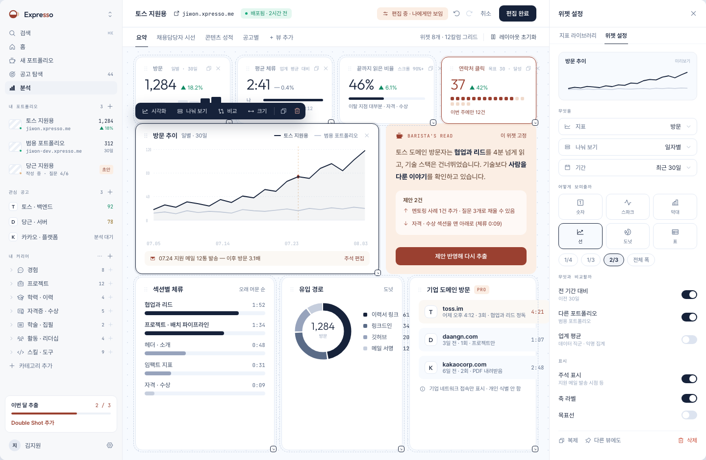
본 화면은 대시보드 위젯 하나의 설정 화면이다. 설정은 무엇을 보일지, 어떻게 보일지, 무엇과 비교할지의 세 질문으로 구성하고, 설정을 바꿀 때마다 결과를 미리보기로 확인하게 한다.
주요 구성 요소
- 설정 탭 — 시각화 · 나눠 보기 · 비교 · 크기의 네 묶음으로 항목을 나눈다.
- 대상 지정 — 표시할 지표와 집계 단위와 기간을 정한다.
- 표현 방식 — 숫자 · 스파크라인 · 막대 · 선 · 표 가운데 하나를 고르고, 위젯의 폭을 정한다.
- 비교 대상 — 전 기간 · 이전 동일 기간 · 다른 포트폴리오 · 업계 평균 가운데 선택한다. 업계 평균은 집계 범위를 함께 적는다.
- 표시 항목 — 주석 · 축 라벨 · 목표선의 표시 여부를 전환한다.
- 위젯 관리 — 위젯을 다른 뷰로 복제하거나 삭제한다.
사용자에게 하는 역할
위젯 설정은 같은 데이터를 사용자의 목적에 맞는 형태로 바꾸게 한다. 숫자 하나로 보고 싶은 지표와 추이로 보아야 하는 지표가 다르므로, 표현 방식을 지표와 분리하여 고르게 한다. 비교 대상을 명시적으로 고르게 하여, 변화의 크기를 해석할 기준을 사용자가 정하게 한다.
기능 요구사항
- 지표와 표현 방식과 비교 대상을 각각 독립적으로 선택할 수 있어야 한다.
- 설정 변경은 미리보기에 즉시 반영한다.
- 비교 대상을 선택한 경우 위젯에 그 기준을 함께 표시한다.
- 위젯은 다른 뷰로 복제할 수 있어야 한다.
- 표현 방식은 선택한 지표가 지원하는 것만 활성화한다.
제약조건
- 지표의 성질에 맞지 않는 표현 방식은 선택할 수 없다. 비율 지표를 누적 막대로 표시하는 것과 같은 경우이다.
- 다른 포트폴리오와의 비교는 본인이 소유한 포트폴리오 사이에서만 가능하다.
- 업계 평균은 표본이 확보된 직군에만 제공하며, 표본 수를 함께 표시한다.
- 목표선은 사용자가 지정한 값이며 서비스가 권장값을 제시하지는 않는다.
■ 공개 사이트 — 화면번호 08
/site/[slug] · D9
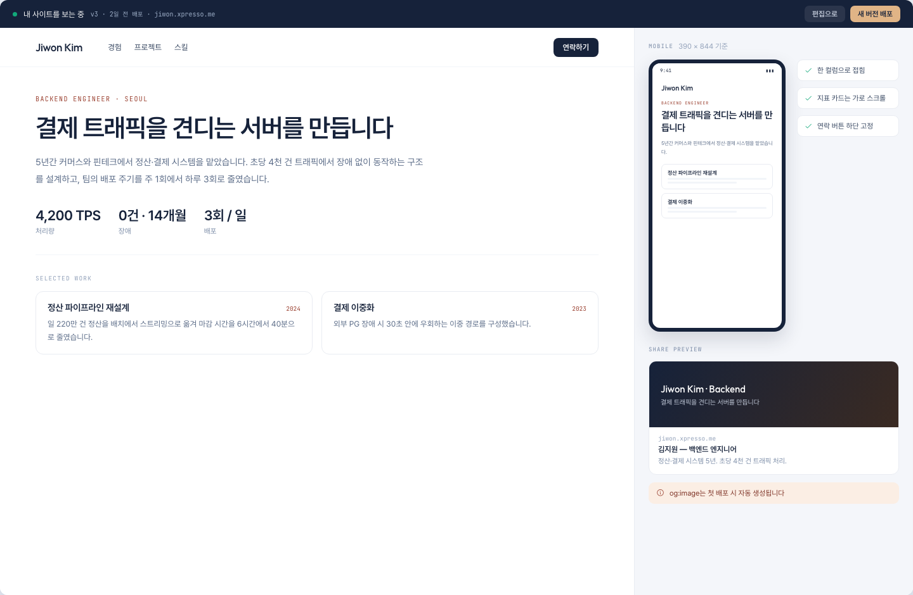
본 화면은 배포된 포트폴리오를 방문자가 열었을 때의 지면이다. 로그인 없이 주소만으로 열리며, 배포 시점의 스냅샷을 보여주므로 이후의 편집이 공개된 내용을 바꾸지 않는다. 같은 배포에 데스크톱 지면 · 모바일 지면 · 공유 카드가 함께 묶인다.
주요 구성 요소
- 머리부 — 이름 · 직무 · 근무지와 한 문장 소개를 두고, 핵심 지표를 숫자로 함께 제시한다. 섹션 이동을 위한 내부 링크를 상단에 고정한다.
- 본문 섹션 — 레시피에서 정한 순서대로 경험 · 프로젝트 · 스킬 · 연락처를 배치한다. 프로젝트는 연도와 성과 문장을 함께 적는다.
- 모바일 지면 — 좁은 화면에서는 한 열로 접히고, 지표 카드는 가로로 넘기며, 연락 버튼은 화면 아래에 고정한다.
- 공유 카드 — 다른 서비스에 주소를 붙였을 때 표시되는 제목 · 요약 · 이미지이다. 첫 배포 시 자동으로 생성한다.
- 소유자 표시줄 — 소유자가 자신의 사이트를 열면 배포 버전과 배포 시점을 알리고, 편집 화면과 새 버전 배포로 이동하는 경로를 함께 표시한다. 방문자에게는 표시하지 않는다.
사용자에게 하는 역할
공개 사이트는 사용자가 생성한 결과물을 방문자가 열람하는 화면이다. 채용 담당자는 짧은 시간 안에 판단하므로, 이름과 직무와 핵심 지표를 첫 화면에서 모두 확인할 수 있게 배치한다. 또한 이 화면에서 발생한 방문과 체류가 분석 화면의 자료가 되어, 결과물을 다시 고치는 근거가 된다.
기능 요구사항
- 공개 사이트는 인증 없이 접근할 수 있어야 한다.
- 표시하는 내용은 배포 시점의 스냅샷으로 고정하고, 편집 중인 내용을 노출하지 않는다.
- 좁은 화면에서도 모든 내용에 접근할 수 있어야 하며, 연락 수단은 화면 어디에서나 도달 가능해야 한다.
- 공유 카드는 첫 배포 시 자동 생성하고, 이후 배포에서 제목과 요약을 갱신한다.
- 방문과 체류와 연락처 클릭을 집계하여 분석 화면에 제공한다.
- 소유자로 인증된 접근에는 배포 버전과 편집 경로를 함께 표시한다.
제약조건
- 연락처의 공개 범위는 소유자가 배포 설정에서 정한 값을 따른다. 전체 공개가 기본값이 아니다.
- 검색 엔진 노출 여부도 배포 설정을 따르며, 노출을 끈 경우 색인을 거부하는 표시를 함께 내려보낸다.
- 방문 집계는 개인을 식별하지 않는다. 접속한 조직의 도메인 수준까지만 기록한다.
- 공개를 중단하면 주소로 접근할 수 없게 되지만 문서와 기록은 삭제되지 않는다.
■ 배포 · 버전 — 화면번호 08b
/(app)/edit/[portfolioId]/deploy · D9
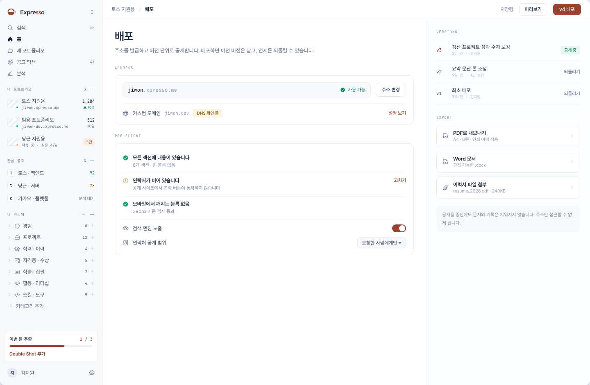
본 화면은 포트폴리오를 공개하고 관리한다. 주소 발급 · 배포 전 점검 · 공개 범위 설정 · 버전 관리 · 파일 내보내기를 한 화면에 모았다. 공개와 관련된 결정을 여러 화면에 흩어 놓지 않기 위한 구성이다.
주요 구성 요소
- 주소 설정 — 하위 도메인을 입력하면 사용 가능 여부를 즉시 확인한다. 사용자 도메인을 연결하는 경우 이름 서버 확인 상태를 함께 표시한다.
- 배포 전 점검 — 빈 섹션 · 비어 있는 연락처 · 좁은 화면에서 깨지는 블록을 검사하여 통과와 경고를 항목별로 제시하고, 「고치기」로 해당 위치로 이동한다.
- 공개 범위 설정 — 검색 엔진 노출 여부와 연락처 공개 범위를 정한다.
- 버전 목록 — 배포마다 버전 번호 · 변경 요약 · 배포 시각 · 주체를 기록하고, 현재 공개 중인 버전을 표시한다. 「되돌리기」로 이전 버전을 다시 공개한다.
- 내보내기 — 인쇄 여백을 적용한 문서 파일과 편집 가능한 문서 파일로 내보내고, 이력서 파일을 함께 첨부한다.
사용자에게 하는 역할
배포 화면은 사용자가 공개의 결과를 예측한 상태로 배포하게 한다. 점검 결과를 배포 이전에 제시하므로, 연락처가 비어 있거나 좁은 화면에서 깨진 상태로 공개되는 일을 줄인다. 또한 버전을 남겨 두어 배포 이후에 문제를 발견하여도 즉시 이전 상태로 되돌릴 수 있게 한다.
기능 요구사항
- 주소의 사용 가능 여부는 입력 중에 확인하여 표시한다.
- 배포 전 점검은 항목별 결과를 제시하고, 문제 항목마다 수정 위치로 이동하는 경로를 제공한다.
- 배포는 버전으로 관리하며, 버전마다 변경 요약과 주체와 시각을 기록한다.
- 이전 버전으로 되돌릴 수 있어야 하고, 되돌린 결과도 새 배포로 기록한다.
- 공개 중단은 주소 접근만 차단하고 문서와 기록은 보존한다.
- 내보낸 파일은 발급 이력을 남기고, 필요 시 접근을 무효화할 수 있어야 한다.
제약조건
- 사용자 도메인 연결은 이름 서버 설정이 완료될 때까지 적용되지 않는다. 확인 중 상태를 화면에 표시한다.
- 배포 전 점검의 경고는 배포를 차단하지 않는다. 사용자가 확인한 뒤 진행할 수 있게 한다.
- 사용자 도메인 연결과 게시자 표시 제거는 상위 요금제에서만 사용할 수 있다.
- 배포는 스냅샷을 생성하므로 즉시 완료되지 않을 수 있다. 진행 상태를 표시하고 완료 시 알린다.
- 삭제 요청 중인 계정의 포트폴리오는 새로 배포할 수 없다.
■ 계정 · 요금제 — 화면번호 09
/(app)/account · D12
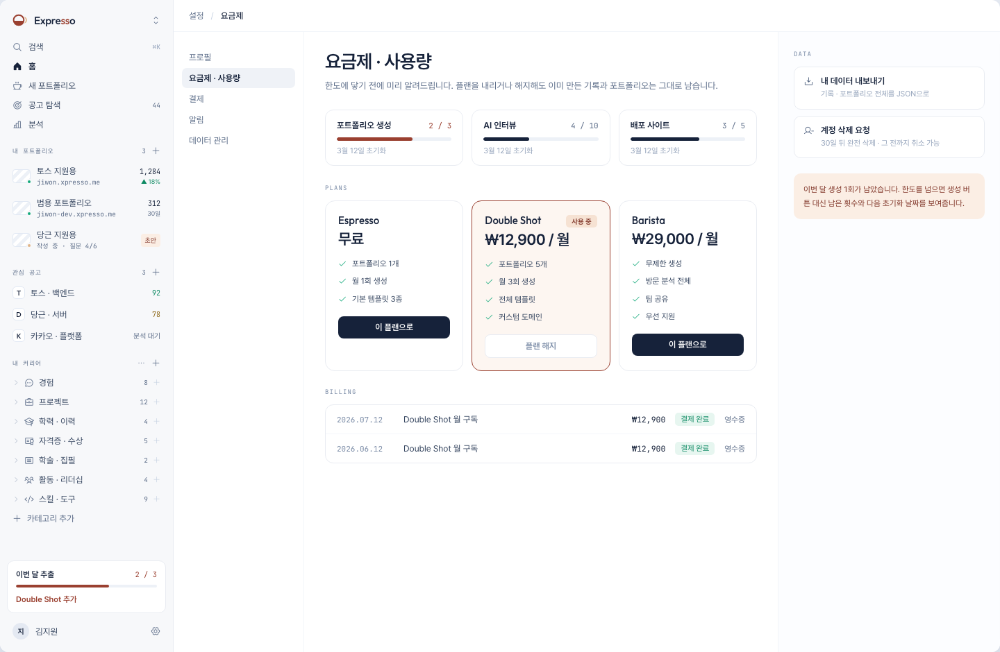
본 화면은 계정 정보와 구독 상태를 한자리에서 확인하고 변경한다. 사이드바 아래의 계정 항목에서 진입하며, 왼쪽 탭으로 프로필 · 요금제 · 사용량 · 결제 · 알림 · 데이터 관리의 영역을 이동한다. 서비스의 기능 대부분이 요금제에 따라 열리고 닫히므로, 사용자가 지금 무엇을 얼마나 더 쓸 수 있는지 확인하는 지점이 이 화면이다.
주요 구성 요소
- 사용량 카드 — 포트폴리오 생성 · AI 인터뷰 · 배포 사이트의 세 지표를 사용량과 한도의 쌍으로 제시하고, 그 아래 다음 초기화 날짜를 함께 적는다.
- 요금제 비교 — 세 등급을 나란히 놓고 등급별로 포트폴리오 보유 수 · 월 생성 횟수 · 템플릿 범위 · 사용자 도메인 · 방문 분석 범위를 대조한다. 현재 등급에는 사용 중 표시가 붙고 나머지 등급에는 전환 경로가 놓인다.
- 결제 내역 — 결제일 · 상품명 · 금액 · 상태를 시간 역순으로 나열하고 건마다 영수증을 내려받는다.
- 데이터 관리 — 계정의 기록과 포트폴리오 전체를 문서 파일 하나로 내보내는 기능과 계정 삭제를 요청하는 기능을 둔다.
사용자에게 하는 역할
계정 화면은 사용자가 자신의 이용 한계를 미리 파악하도록 돕는다. 생성이 막힌 뒤에 이유를 찾게 하지 않고 남은 횟수와 초기화 시점을 상시 노출하여, 사용자가 언제 등급을 올릴지 스스로 판단하게 한다. 또한 데이터 내보내기와 삭제 요청을 같은 화면에 두어, 서비스를 떠나는 결정 역시 사용자의 통제 아래 있음을 보인다.
기능 요구사항
- 사용량은 요청 시점의 집계 값을 조회하여 표시하며, 무제한 등급은 숫자 대신 무제한으로 표기한다.
- 등급 변경은 다음 결제일부터 적용하고, 변경 예정 상태를 요금제 영역에 명시한다.
- 한도를 소진한 경우 생성 진입점을 비활성화하는 대신 남은 횟수와 초기화 날짜를 그 자리에 표시한다.
- 데이터 내보내기는 커리어 기록 · 공고 분석 · 레시피 · 포트폴리오 · 배포 · 방문 지표를 스키마 버전이 붙은 하나의 파일로 생성한다.
- 계정 삭제는 즉시 삭제가 아닌 요청으로 처리하며, 요청 시점과 완전 삭제 예정 시점을 함께 제시한다.
제약조건
- 요금제별 기능 개방 여부는 화면이 판단하지 않는다. 서버가 내려준 권한 판정 결과를 그대로 반영하며, 권한 미달과 한도 소진을 서로 다른 문구로 구분하여 안내한다.
- 생성 한도의 집계 주기는 한국 표준시 월 단위로 고정한다. 사용자의 지역 설정이 달라도 초기화 시점은 동일하다.
- 계정 삭제 요청 후 30일 동안은 유예 기간이며 요청을 취소하여 계정을 복구할 수 있다. 다만 유예 기간에도 공개 중이던 포트폴리오는 비공개로 전환되고 내려받기 링크는 즉시 무효화된다.
- 삭제 요청이 진행 중인 계정은 신규 생성 권한을 받지 못한다.
- 결제 수단 정보는 이 화면에서 다루지 않으며 결제 대행사의 결제창으로 위임한다.
■ 로그인 — 화면번호 10
/(auth)/login · D12
본 화면은 서비스에 접속하였을 때 최초로 나타나는 로그인 화면이다. 왼쪽에 서비스의 성과 지표를 두고 오른쪽에 로그인 수단을 두어, 처음 온 사용자에게 서비스의 성격을 알리면서 기존 사용자의 진입을 방해하지 않게 한다.
주요 구성 요소
- 소개 영역 — 서비스의 한 문장 설명과 함께 누적 생성 수 · 평균 완성 소요 · 서류 통과율 변화의 세 지표를 제시한다.
- 소셜 로그인 — 개발자 사용자가 이미 보유한 계정을 우선으로 배치한다.
- 이메일 로그인 — 소셜 수단을 쓸 수 없는 사용자를 위한 대안으로 아래에 둔다. 비밀번호 재설정 경로를 함께 제공한다.
- 회원가입 연결 — 계정이 없는 사용자를 회원가입 화면으로 보낸다.
사용자에게 하는 역할
로그인 화면이 하는 일은 진입 장벽을 낮추는 것이다. 이메일과 비밀번호를 새로 만들지 않고도 시작할 수 있게 소셜 수단을 위에 두고, 그 수단을 쓰지 않는 사용자를 위해 이메일 방식을 함께 남긴다.
기능 요구사항
- 소셜 로그인과 이메일 로그인을 모두 제공하고, 같은 사용자가 두 수단을 함께 쓸 수 있게 계정을 연결한다.
- 인증 실패 사유는 계정 존재 여부를 노출하지 않는 범위에서 안내한다.
- 비밀번호 재설정은 등록된 이메일로만 진행한다.
- 인증 성공 후에는 온보딩 완료 여부에 따라 홈 또는 온보딩으로 분기한다.
- 일정 횟수 이상 실패한 접근은 제한한다.
제약조건
- 소셜 로그인은 외부 인증 제공자에 의존하므로, 제공자의 장애 시 이메일 방식으로 안내한다.
- 삭제 요청 중인 계정으로 로그인하면 유예 기간과 취소 경로를 먼저 안내한다.
- 화면에 제시하는 지표는 서비스 전체의 집계값이며 개별 사용자의 결과를 보장하지 않는다.
- 버튼별 동작과 유효성 검사 규칙은 5.2에 별도로 정의한다.
■ 회원가입 — 화면번호 10b
/(auth)/signup · D12
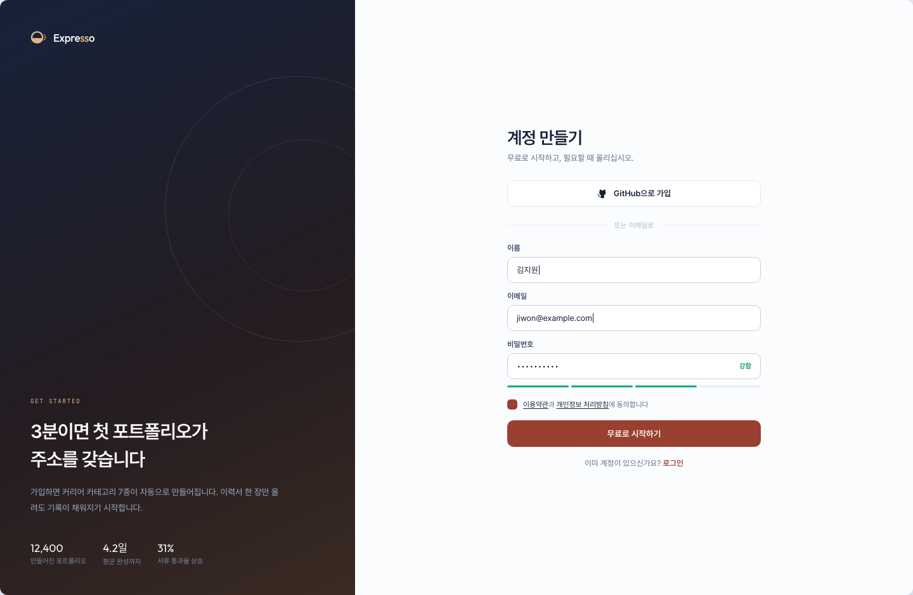
본 화면은 이메일로 계정을 만드는 회원가입 화면이다. 입력 항목을 이메일과 비밀번호로 최소화하고, 약관 동의를 같은 화면에서 받는다. 가입이 완료되면 커리어 기록의 기본 카테고리가 함께 만들어진다.
주요 구성 요소
- 입력부 — 이메일과 비밀번호를 받는다. 비밀번호는 입력 중에 강도를 표시한다.
- 약관 동의 — 이용약관과 개인정보 처리방침에 대한 동의를 받고, 각 문서로 이동하는 경로를 함께 둔다.
- 가입 실행 — 요금제를 고르는 단계 없이 무료로 시작한다.
- 로그인 연결 — 이미 계정이 있는 사용자를 로그인 화면으로 보낸다.
사용자에게 하는 역할
회원가입은 가입 단계에서 사용자가 이탈하지 않게 하는 데 목적이 있다. 직무나 경력 같은 정보는 이 화면에서 묻지 않고 온보딩으로 넘기며, 계정을 만드는 데 필요한 것만 받는다. 또한 가입과 동시에 기록을 담을 카테고리를 만들어, 사용자가 빈 화면을 마주하지 않게 한다.
기능 요구사항
- 이메일의 중복 여부와 형식을 입력 중에 검사한다.
- 비밀번호는 정해진 규칙을 만족해야 하며, 충족 여부를 입력 중에 표시한다.
- 약관 동의는 필수이며, 동의 시점과 동의한 문서의 버전을 기록한다.
- 가입이 완료되면 기본 카테고리를 함께 생성한다.
- 가입 직후에는 온보딩 화면으로 이동한다.
제약조건
- 가입 시 요금제를 선택하지 않는다. 모든 계정은 무료 등급으로 시작한다.
- 동의 기록은 법적 요구에 따라 보관하며, 계정 삭제 시에도 보관 의무가 있는 항목은 남긴다.
- 같은 이메일로 소셜 계정이 이미 있는 경우 새 계정을 만들지 않고 기존 계정에 연결하도록 안내한다.
- 비밀번호는 복원 불가능한 형태로만 저장하며, 서비스가 원문을 보관하지 않는다.
■ 온보딩 · 목표 — 화면번호 10c
/(auth)/onboarding/goal · D12
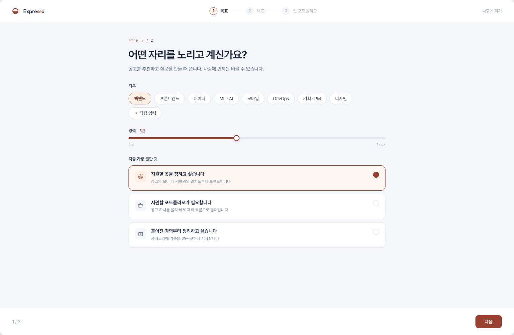
본 화면은 온보딩의 첫 단계이며, 추천과 질문의 기준이 되는 최소 정보를 받는다. 직무와 경력, 그리고 지금 가장 급한 일을 묻는다. 세 단계 중 첫 단계임을 상단에 표시하고, 건너뛰는 경로를 함께 둔다.
주요 구성 요소
- 단계 표시 — 목표 · 재료 · 첫 포트폴리오의 세 단계와 현재 위치를 표시하고, 「나중에 하기」로 온보딩을 미룬다.
- 직무 선택 — 대표 직무를 선택지로 제시하고, 목록에 없으면 직접 입력한다.
- 경력 입력 — 신입부터 상한까지의 범위에서 값을 지정한다.
- 목적 선택 — 지원할 곳을 정하는 것, 지원용 포트폴리오를 만드는 것, 흩어진 경험을 정리하는 것의 세 목적을 제시하고, 각 선택이 어떤 화면으로 이어지는지 함께 적는다.
사용자에게 하는 역할
온보딩의 첫 단계는 이후 모든 추천의 기준을 만든다. 직무와 경력이 없으면 공고 추천과 대화 질문을 만들 수 없으므로, 최소한의 정보만 이 단계에서 받는다. 또한 사용자가 지금 무엇을 급하게 여기는지 물어, 온보딩 이후의 첫 화면을 그 목적에 맞추어 정한다.
기능 요구사항
- 묻는 항목은 추천과 질문 생성에 실제로 사용되는 것으로 한정한다.
- 선택한 값은 이후 설정 화면에서 변경할 수 있으며, 이 사실을 화면에 명시한다.
- 목적 선택마다 이어지는 화면을 미리 설명한다.
- 온보딩은 건너뛸 수 있어야 하고, 건너뛴 경우에도 서비스를 사용할 수 있어야 한다.
- 입력 값은 단계를 이동할 때마다 저장하여 중단 후 재개할 수 있게 한다.
제약조건
- 직무 선택지는 목록으로 제한하지 않고 직접 입력을 허용한다. 다만 목록에 없는 직무는 추천 품질이 낮아질 수 있다.
- 온보딩을 건너뛰면 추천 기능은 기록이 쌓인 뒤에야 동작한다.
- 경력 값은 사용자가 신고한 값이며 서비스가 검증하지 않는다.
- 이 단계에서 개인 식별 정보를 추가로 수집하지 않는다.
■ 온보딩 · 재료 채우기 — 화면번호 10d
/(auth)/onboarding/materials · D12
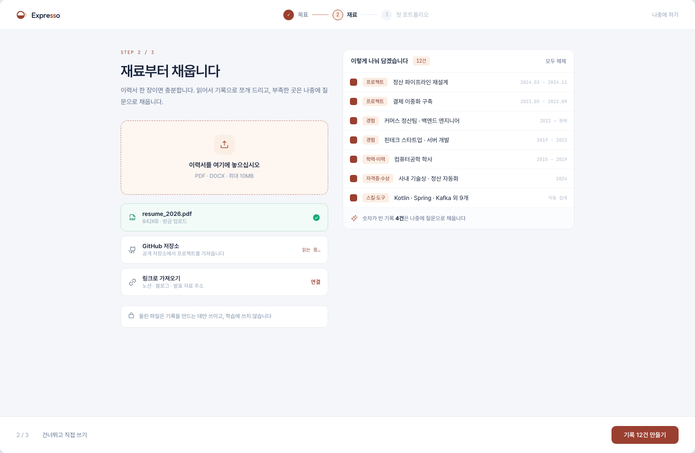
본 화면은 온보딩의 두 번째 단계이며, 기존 자료에서 커리어 기록을 만든다. 이력서 파일과 공개 저장소와 외부 문서 주소를 입력으로 받아 기록의 초안을 만들고, 사용자가 확인한 뒤에 저장한다.
주요 구성 요소
- 파일 업로드 — 이력서 파일을 놓아 올린다. 허용 형식과 용량 상한을 함께 표시하고, 업로드된 파일의 크기와 시각을 알린다.
- 외부 연결 — 공개 저장소에서 프로젝트를 가져오고, 외부 문서의 주소로 자료를 연결한다. 진행 상태를 항목마다 표시한다.
- 사용 범위 안내 — 올린 파일은 기록을 만드는 데만 쓰이고 학습에 사용하지 않는다는 사실을 업로드 영역 아래에 명시한다.
- 추출 결과 확인 — 추출한 항목을 카테고리별로 묶어 제목과 기간과 함께 나열하고, 항목마다 저장 여부를 선택한다. 전체 해제와 전체 선택을 함께 둔다.
- 보강 예고 — 수치가 비어 있는 기록의 건수를 알리고, 이후 질문으로 채운다는 사실을 적는다.
- 대안 경로 — 자료가 없는 사용자를 위해 직접 작성으로 넘어가는 경로를 둔다.
사용자에게 하는 역할
재료 채우기는 사용자가 빈 화면에서 시작하지 않게 한다. 커리어 기록을 처음부터 입력하는 것은 부담이 크므로, 이미 가지고 있는 이력서를 재료로 삼아 초안을 만든다. 동시에 저장 이전에 확인 단계를 두어, 잘못 추출된 항목이 그대로 기록이 되는 것을 막는다.
기능 요구사항
- 추출 결과는 저장 이전에 사용자가 확인하고 선택할 수 있어야 한다.
- 허용하는 파일 형식과 용량 상한을 업로드 이전에 표시한다.
- 업로드한 파일의 사용 범위를 화면에 명시한다.
- 외부 자료 수집은 진행 상태를 항목별로 표시한다.
- 자료가 없는 사용자를 위해 직접 작성으로 넘어가는 경로를 제공한다.
- 추출된 기록에는 출처를 기록하여, 이후 어디에서 온 기록인지 확인할 수 있게 한다.
제약조건
- 추출 정확도는 원본 문서의 구조에 따라 달라진다. 이 때문에 결과를 그대로 저장하지 않고 확인 단계를 반드시 둔다.
- 가져오는 저장소는 공개 저장소로 한정한다. 비공개 저장소의 접근 권한은 요구하지 않는다.
- 업로드한 원본 파일은 기록 생성 목적으로만 사용하고 모델 학습에 사용하지 않는다.
- 파일 형식과 용량 상한을 넘는 자료는 업로드 단계에서 거부한다.
■ 온보딩 · 첫 포트폴리오 — 화면번호 10e
/(auth)/onboarding/first-portfolio · D12
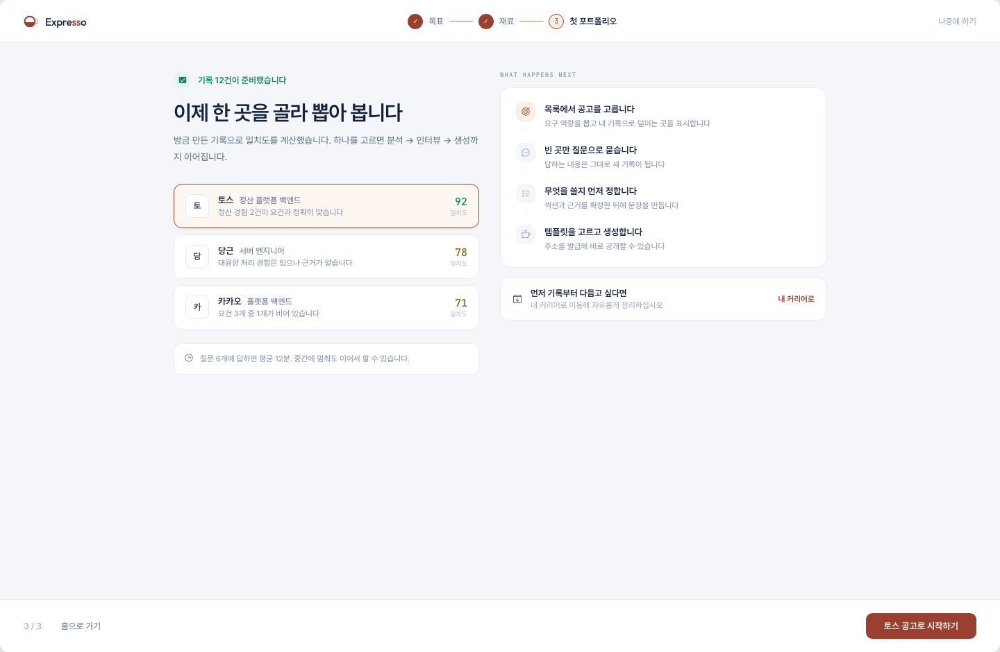
본 화면은 온보딩의 마지막 단계이며, 만들어진 기록으로 첫 포트폴리오를 시작한다. 온보딩을 완료 안내로 끝내지 않고, 목표 공고를 고르는 자리로 잇는다. 이후 진행될 절차를 미리 요약하여 사용자가 무엇을 하게 되는지 알고 시작하게 한다.
주요 구성 요소
- 준비 상태 안내 — 만들어진 기록 건수를 알리고 다음 행동을 한 문장으로 제시한다.
- 추천 공고 목록 — 기록과 목표를 근거로 공고 세 건을 제시하고, 공고마다 일치도와 판정 사유를 함께 적는다. 근거가 얕은 공고에는 그 사실을 적는다.
- 소요 안내 — 질문 수와 평균 소요 시간을 제시하고, 중간에 멈춘 뒤 이어서 할 수 있음을 명시한다.
- 절차 예고 — 공고 선택 · 요구 역량 대조 · 질문으로 빈 곳 채우기 · 구성 확정 · 생성과 공개의 순서를 요약한다.
- 대안 경로 — 기록을 먼저 다듬고 싶은 사용자를 위해 커리어 화면으로 이동하는 경로와 홈으로 가는 경로를 둔다.
사용자에게 하는 역할
온보딩의 마지막 단계는 온보딩과 제작을 잇는다. 기록을 만들어 두고 끝내면 사용자는 그 기록으로 무엇을 할 수 있는지 알지 못하므로, 바로 첫 결과물을 만드는 경로를 제시한다. 동시에 강제하지 않고 다른 경로도 함께 남긴다.
기능 요구사항
- 추천 공고는 온보딩에서 받은 목표와 만들어진 기록을 근거로 산출하고, 사유를 함께 표시한다.
- 소요 시간과 질문 수를 미리 제시한다.
- 이후 절차를 요약하여 제시한다.
- 제작을 시작하지 않고 다른 화면으로 이동하는 경로를 함께 제공한다.
- 온보딩 완료 상태를 기록하여 다음 접속 시 다시 표시하지 않는다.
제약조건
- 추천할 공고가 부족하면 목록 대신 공고 탐색으로 안내한다. 억지로 채우지 않는다.
- 이 단계에서 제작을 시작하면 이번 달 생성 한도를 소비한다.
- 제시하는 평균 소요 시간은 통계값이며 사용자마다 다를 수 있다.
- 기록이 일정 수 미만이면 추천의 근거가 부족하므로, 커리어 화면으로 먼저 안내한다.
5.4 관리자 메뉴구성
■ 관리자
관리자가 접근할 수 있는 메뉴의 구조는 아래 그림 5.4과 같다. 현재 형상에는 관리자 화면이 구현되어 있지 않으므로, 아래 구조도는 2.6에서 정의한 관리자 기능 목록을 화면 구조로 옮긴 설계안이다.
관리자 메뉴는 일곱 갈래이다. 공고 소스 · 공고 · 수집 모니터링 · 스케줄 · AI 학습 · 장애 기록 · 사용자와 플랜이며, 화면번호는 A로 시작한다. 이 가운데 AI 학습(A05)이 관리자 화면을 만드는 가장 큰 이유이다. 학습 데이터세트 생성 · 라벨 검수 · 학습 실행 · 성능 확인 · 배포와 롤백을 화면 없이 수행할 수 없기 때문이다.
5.5 관리자 화면설계(웹)
5.4에서 식별한 관리자 메뉴의 모든 화면을 설계한다. 관리자 화면은 웹 전용이므로 웹 규격을 따르며, 화면 1개당 1쪽으로 작성한다. 화면은 21개이다.
관리자 화면은 아직 구현되어 있지 않으므로 캡처 대신 와이어프레임으로 작성한다. 구현 이후에는 브라우저 프레임을 포함한 캡처로 교체한다.
프로세스(기능) 설계
양식 6장6.1 시스템 아키텍쳐
본 서비스의 시스템 아키텍쳐는 아래 그림 6.1과 같다.
| 계층 | 책임 | 하지 않는 것 |
|---|---|---|
| 라우트 | 요청 파싱 · 인증 확인 · 스키마 검증 · 응답 직렬화 | 비즈니스 규칙 |
| 도메인 모듈 | 비즈니스 규칙 · 트랜잭션 경계 | HTTP 세부사항 |
| 플랫폼 | DB · 큐 · 저장소 · LLM · 로깅 | 도메인 지식 |
| Worker | 오래 걸리는 작업 · 재시도 | 사용자 응답 |
그림 6.1을 보면 계층은 위에서 아래로 의존한다. 웹 클라이언트는 API 서버의 REST만 호출하고, API 서버는 도메인 모듈을 부르며, 도메인 모듈은 플랫폼 계층을 통해 데이터베이스와 큐에 접근한다. 화살표의 방향이 곧 의존의 방향이며, 플랫폼 계층은 도메인을 알지 못하고 도메인 모듈은 HTTP를 알지 못한다. 이 규칙 덕분에 도메인 로직을 HTTP 없이 시험할 수 있다.
■ 동기와 비동기의 경계
사용자 요청 중 초 단위로 끝나지 않는 것은 큐로 넘깁니다.
| 작업 | 처리 | 이유 |
|---|---|---|
| 공고 분석 | 비동기 | LLM 호출 수십 초 |
| 포트폴리오 생성 | 비동기 | LLM 호출 수 분 |
| 문서 내보내기 | 비동기 | 렌더링 · 변환 |
| 방문 지표 집계 | 비동기 | 배치 |
| 기록 CRUD · 공고 검색 | 동기 | DB만 씁니다 |
DB 커밋과 큐 발행이 따로 성공하거나 실패하면 상태가 갈라진다. 이를 막기 위해
Outbox 패턴을 사용한다. 이벤트를 platform_outbox에 도메인 변경과 같은
트랜잭션으로 기록하고, 별도의 폴러가 그것을 읽어 큐로 보낸다. 트랜잭션이 실패하면
이벤트도 남지 않으므로 두 상태가 어긋나지 않는다.
6.2 사용자 기능설계 (Sequence Diagram)
2.5에서 정의한 151개의 사용자 기능을 시퀀스 다이어그램으로 설계한다. 다이어그램은 반드시 서버와 클라이언트가 주고받는 흐름을 보여야 한다. 다만 151개 가운데 상당수는 주고받는 흐름이 서로 같다. 예를 들어 기록 조회 · 공고 조회 · 알림 조회는 경로와 표만 다를 뿐 한 번의 왕복으로 끝나는 같은 흐름이다. 같은 그림을 여러 번 그리는 것은 분량을 늘릴 뿐 설계를 더하지 않는다.
따라서 흐름이 서로 다른 17개를 대표로 설계하고, 나머지 기능은 아래 유형에 귀속시킨다. 유형이 같은 기능은 경로와 대상 테이블만 바뀌며, 그 값은 2.5의 기능 표와 7.2의 API 목록에 있다.
■ 상호작용 유형
| 유형 | 흐름의 특징 | 대표 그림 |
|---|---|---|
| 동기 조회 | 웹이 API를 한 번 호출하고 그 응답으로 화면을 그린다. 왕복이 한 번이다. | 그림 6.2.17 |
| 동기 저장 | 스키마를 검증한 뒤 데이터베이스에 기록한다. Idempotency-Key로 중복 저장을 막는다. | 그림 6.2.2 · 6.2.13 |
| 낙관적 잠금 저장 | If-Match로 버전을 확인하고, 어긋나면 409를 반환한다. | 그림 6.2.3 |
| 비동기 작업 | 202를 먼저 돌려주고 outbox와 Worker가 이어받는다. 사용자는 기다리지 않는다. | 그림 6.2.7 · 6.2.10 · 6.2.11 |
| AI 동기 호출 | API 서버가 AI서버를 직접 호출하고 응답을 기다린다. 초 단위로 끝나는 작업만 이 방식을 쓴다. | 그림 6.2.5 · 6.2.9 · 6.2.12 · 6.2.16 |
| 학습 모델 서빙 | 배포된 모델로 판정하고, 모델이 없으면 규칙 함수로 되돌아간다. | 그림 6.2.6 · 6.2.8 · 6.2.17 |
| 파일 내보내기 | Worker가 파일을 만들어 객체 저장소에 두고, 만료가 있는 서명 URL로만 내려받는다. | 그림 6.2.14 |
| 공개 사이트 | 인증이 없는 경로이다. 열람과 지표 수집을 분리한다. | 그림 6.2.15 |
■ 도메인별 귀속
| 도메인 | 기능 수 | 나타나는 유형 | 대표 그림 |
|---|---|---|---|
| D1 커리어 기록 | 28 | 동기 조회 · 동기 저장 · 낙관적 잠금 저장 | 그림 6.2.2 · 6.2.3 · 6.2.4 |
| D2 채용 공고 수집/검색 | 21 | 동기 조회 · AI 동기 호출 · 학습 모델 서빙 | 그림 6.2.5 · 6.2.6 |
| D3 채용 공고 분석 | 10 | 비동기 작업 | 그림 6.2.7 |
| D4 포트폴리오 재료 선정 | 8 | 동기 조회 · 학습 모델 서빙 | 그림 6.2.8 |
| D5 AI 인터뷰 | 11 | AI 동기 호출 · 동기 저장 | 그림 6.2.9 |
| D6 포트폴리오 레시피 | 11 | 비동기 작업 · 낙관적 잠금 저장 | 그림 6.2.10 · 6.2.3 |
| D7 포트폴리오 생성 | 9 | 비동기 작업 | 그림 6.2.11 |
| D8 포트폴리오 편집 | 17 | AI 동기 호출 · 낙관적 잠금 저장 | 그림 6.2.12 · 6.2.3 |
| D9 배포 · 공개 사이트 | 9 | 동기 저장 · 파일 내보내기 | 그림 6.2.13 · 6.2.14 |
| D10 통계 분석 | 14 | 공개 사이트 · 동기 조회 · AI 동기 호출 | 그림 6.2.15 · 6.2.16 |
| D11 홈 · 내비게이션 | 9 | 동기 조회 · 학습 모델 서빙 | 그림 6.2.17 |
| D12 계정 · 요금제 | 4 | 동기 조회 · 동기 저장 | 그림 6.2.1 |
| 합계 | 151 | 8개 유형 | 그림 6.2.1 – 6.2.17 |
1) 로그인 기능
D12 계정 · 유형 동기 저장 · POST /v1/auth/login
사용자가 이메일과 비밀번호를 입력하면 웹이 POST /v1/auth/login을 호출한다. API 서버는 계정 행을 읽어 자격을 확인하고, 통과하면 세션을 만들어 쿠키와 함께 200으로 답한다. 웹은 응답을 받은 뒤 홈으로 이동한다.
실패 응답은 이메일과 비밀번호 중 무엇이 틀렸는지 구분하지 않는다. 사유를 나누어 알리면 계정의 존재 여부가 드러나고, 그것만으로도 공격자에게 쓸 정보가 된다. 세션은 서버가 발급한 쿠키로 유지하므로 클라이언트가 토큰을 따로 보관하지 않는다.
2) 기록 직접 만들기 기능
D1 · T1.2.1 · 유형 동기 저장 · POST /v1/career/records
웹이 기록을 POST /v1/career/records로 보내면 API 서버가 스키마를 검증하고 Idempotency-Key를 확인한 뒤 record 행을 넣는다. 커밋한 다음 201과 함께 식별자와 etag를 돌려주고, 웹은 목록에 새 항목을 표시한다.
같은 요청이 두 번 도착하여도 기록이 두 벌 생기지 않아야 한다. 응답이 늦으면 사용자가 다시 누르는 일이 흔하기 때문이다. 서버는 키를 기억하여 두 번째 요청에는 첫 번째의 결과를 그대로 돌려준다. 응답에 담긴 etag는 이어지는 수정에서 버전 확인에 쓰인다.
3) 기록 속성 편집 기능
D1 · T1.3.2 · 유형 낙관적 잠금 · PATCH /v1/career/records/:recordId
수정 요청은 If-Match 헤더에 직전에 받은 etag를 담는다. 서버는 대상 행을 잠금 조회하여 현재 버전과 비교하고, 같으면 수정한 뒤 갱신된 etag를 돌려준다. 다르면 409를 반환하고 아무것도 바꾸지 않는다.
같은 기록을 여러 탭에서 동시에 여는 경우가 발생한다. 버전을 확인하지 않으면 나중에 저장한 요청이 앞선 수정을 통지 없이 대체한다. 본 설계는 이를 허용하지 않고 409로 반환하며, 최신 상태를 다시 조회하도록 안내한다.
4) 스킬 자동 집계 기능
D1 · T1.6.1 · T1.6.2 · 유형 동기 저장 · POST /v1/career/skills/recompute
웹이 다시 계산을 요청하면 서버는 사용자의 기록 전체를 읽어 기술 표기를 사전으로 정규화하고 숙련도를 산출한 뒤 career_skill을 갱신하고, 그 목록을 돌려준다.
스킬을 사용자가 직접 입력하게 하면 근거 없는 나열이 된다. 그래서 기록에서 뽑되, 표기가 제각각이므로 정규화 단계를 둔다. 어떤 기록이 근거였는지는 GET /v1/career/skills/:skillId/evidence로 되짚을 수 있고, 되짚지 못하는 스킬은 포트폴리오 생성에 쓰지 않는다.
5) 자연어 검색 조건 변환 기능
D2 · T2.2.1 · 유형 AI 동기 호출 · POST /v1/jobs/search/interpret
사용자가 문장으로 검색하면 API 서버가 AI서버에 조건 추출을 요청한다. 직무 · 지역 · 경력 · 스택으로 나뉜 결과를 원문과 함께 돌려주고, 웹은 그 조건을 칩으로 표시한다.
해석 결과는 감추지 않고 표시한다. 잘못 해석한 경우 사용자가 그 자리에서 수정하여야 한다. 해석하지 못한 문장은 조건 없이 원문으로 검색한다. 조건을 지어내면 결과가 조용히 좁아지고, 사용자는 왜 좁아졌는지 알 수 없다.
6) 공고 일치도 산출 기능
D2 · T2.3.1 · 유형 학습 모델 서빙 · POST /v1/jobs/postings/:id/match
목록을 열면 API 서버가 프로필과 공고의 임베딩 캐시를 조회하여 모델 서빙에 넘기고, 모델 A가 22차원 특징으로 산출한 점수와 상위 기여 특징을 받는다. 서버는 점수와 판정 주체와 사유를 함께 돌려주고 웹은 점수 순으로 정렬한다.
본 기능은 모델 A를 사용하는 경로이다. 공고 200건을 목록 한 화면 안에서 세워야 하므로 임베딩은 미리 계산해 두고 추론만 요청한다. 모델이 배포되어 있지 않거나 응답이 없으면 match-score.ts의 규칙 판정으로 되돌아가며, 응답의 decidedBy로 어느 쪽이 판정하였는지 밝힌다.
7) 공고 분석 기능
D3 · T3.1.1 · 유형 비동기 작업 · POST /v1/jobs/postings/:id/analyses
분석 요청을 받은 API 서버는 job_analysis 행과 outbox 이벤트를 같은 트랜잭션에 기록하고 202로 접수만 알린다. 폴러가 outbox를 큐로 옮기고 Worker가 AI서버에 요구사항 추출을 요청하여 결과를 기록하며, 웹은 조회 경로로 완료된 분석을 읽는다.
분석에는 수십 초가 걸리므로 사용자를 기다리게 하지 않는다. 상태 행과 이벤트를 한 트랜잭션에 넣는 이유는 둘 중 하나만 남는 상태를 막기 위함이다. 트랜잭션이 실패하면 이벤트도 남지 않으므로, 「분석 중」 상태로 멈춘 채 처리되지 않는 행이 남지 않는다.
8) 포트폴리오 재료 선정 기능
D4 · T4.1.1 · 유형 학습 모델 서빙 · GET · PUT /v1/brews/:id/materials
brew를 열면 서버가 공고의 요구사항과 사용자의 기록을 읽어 모델 서빙에 요구사항 × 기록 쌍을 넘긴다. 모델 B가 쌍마다 충족 여부와 신뢰도를 판정하고, 서버는 그 결과로 추천 선택과 제외 사유를 만들어 돌려준다. 사용자가 선택을 바꾸면 저장 요청으로 반영한다.
추천은 초기값이고 결정은 사용자가 한다. 제외된 기록에 사유를 붙이는 것은 그 판단을 뒤집을 수 있게 하기 위함이다. 신뢰도가 낮은 쌍은 충족으로 확정하지 않고 확인이 필요한 상태로 남긴다. 판정을 단정하면 사용자가 검토할 자리가 없어진다.
9) 인터뷰 답변과 기록 확정 기능
D5 · T5.2.3 · 유형 AI 동기 호출 · PUT /v1/interview-sessions/:id/answers/:questionId
답변이 들어오면 API 서버가 AI서버에 답변을 기록 초안으로 바꾸도록 요청하고, 초안과 다음 질문을 함께 돌려준다. 사용자가 초안을 확인하고 확정하면 기록 생성 요청으로 저장한다.
인터뷰의 목적은 커리어 기록의 생성이다. 다만 초안은 곧바로 저장하지 않는다. 사용자가 말한 내용과 모델이 정리한 내용이 다를 수 있다. 확정 이전 상태를 화면에 표시하여 사용자가 무엇을 저장하는지 알게 한다.
10) 레시피 생성 기능
D6 · T6.1.1 · 유형 비동기 작업 · POST /v1/brews/:id/recipes
요청을 받으면 recipe 행과 outbox 이벤트를 같은 트랜잭션에 넣고 202로 답한다. Worker가 AI서버에 섹션 구성을 요청하여 recipe_item으로 저장하며, 항목마다 근거로 삼을 기록을 함께 적는다.
레시피는 생성할 문서의 구성 정의이다. 항목마다 근거 경로가 붙는다는 점이 이 단계의 핵심이며, 이 경로가 나중에 생성된 문장이 지어낸 것인지 판별하는 기준이 된다. 근거를 지정할 수 없는 항목은 레시피에 남기지 않는다.
11) 포트폴리오 생성 실행 기능
D7 · T7.2.1 · 유형 비동기 작업 · POST /v1/generation-jobs
생성 요청을 받으면 사용량을 먼저 차감한 뒤 generation_job과 outbox를 같은 트랜잭션에 기록하고 202로 답한다. Worker는 레시피를 지키도록 지시하여 블록과 인용 근거를 받고, validator.ts가 블록에 적힌 수치가 인용한 근거 안에 있는지 검사한다. 통과한 결과만 저장하며 진행 상황은 스트림으로 내려보낸다.
채용 문서에서 지어낸 수치는 사용자에게 직접적인 피해가 된다. 그래서 검증에 걸린 결과는 저장하지 않고 다시 생성한다. 사용량을 작업 생성 이전에 차감하는 것은 같은 요청이 여러 번 접수되어 한도를 넘기는 것을 막기 위함이다.
12) 대화형 수정 기능
D8 · T8.2.1 · T8.2.2 · 유형 AI 동기 호출 · edit-preview → apply
사용자가 블록을 지정하고 수정을 지시하면 API 서버가 AI서버에 수정안을 요청하여 변경 요약과 함께 제안 식별자를 돌려준다. 웹이 적용 전 비교를 보이고, 사용자가 적용을 누르면 별도의 경로로 제안을 확정하여 개정을 남긴다.
제안과 적용은 두 단계로 분리한다. 사용자가 변경 내용을 먼저 확인한 뒤 결정하여야 한다. 적용된 변경은 개정으로 쌓이므로 되돌릴 수 있고, 사용자가 직접 고친 블록은 이후 AI 수정에서 제외한다. 사람이 고친 문장이 다음 요청에 지워지면 편집을 맡길 수 없다.
13) 배포와 주소 발급 기능
D9 · T9.1.1 · 유형 동기 저장 · POST /v1/portfolios/:id/deployments
배포 요청을 받으면 서버가 슬러그의 중복을 확인하고 그 시점의 문서를 스냅샷으로 고정한 뒤 deployment 행을 넣는다. 커밋 후 슬러그와 배포 식별자를 돌려주고 웹은 공개 주소를 표시한다.
스냅샷을 고정하므로 이후의 편집이 공개된 문서를 즉시 바꾸지 않는다. 지원서를 보낸 뒤에도 편집할 수 있어야 하고, 반대로 보낸 문서가 사용자도 모르게 달라지는 일은 없어야 한다. 공개 내용은 새로 배포할 때에만 갱신된다.
14) 문서 내보내기 기능
D9 · T9.2.3 · 유형 파일 내보내기 · POST /v1/portfolios/:id/exports
내보내기 요청은 202로 접수되고 Worker가 문서를 렌더링하여 객체 저장소에 올린다. 작업이 끝나면 자산 식별자를 조회할 수 있고, 별도의 요청으로 만료가 있는 서명 URL을 발급받아 내려받는다.
파일은 API 서버가 직접 전송하지 않는다. 렌더링에 시간이 오래 걸리며, 응답을 유지하면 서버의 처리량이 저하된다. 서명 URL에 만료를 두어 주소가 유출되어도 일정 시간이 지나면 쓸 수 없게 한다. 계정 삭제를 요청하면 이미 발급된 자산도 함께 무효화된다.
15) 방문 지표 수집 기능
D10 · T10.1.1 · 유형 공개 사이트 · GET /v1/public/portfolios/:slug · POST /v1/analytics/events
방문자가 공개 주소로 들어오면 인증 없이 배포 스냅샷을 읽어 지면을 그린다. 지면이 그려진 뒤 별도의 경로로 방문 이벤트를 보내고, 서버는 본문 없이 204로 답한다.
열람과 지표 수집은 서로 다른 경로로 분리한다. 지표 수집이 실패하여도 열람은 영향을 받지 않아야 한다. 수집하는 값은 개인을 식별하지 않는 범위로 한정한다.
16) 읽기 패턴 해설 기능
D10 · T10.3.1 · 유형 AI 동기 호출 · POST /v1/portfolios/:id/analytics/insight
대시보드는 먼저 집계 경로로 수치를 받고, 그 수치를 해설 경로에 넘겨 AI서버의 해석과 개선 제안을 받는다. 표본이 부족하면 해설을 만들지 않고 그 사실을 알린다.
집계와 해설을 나눈 이유는 표본이 적을 때 해설을 멈추기 위함이다. 방문이 몇 건뿐인데 경향을 말하면 근거 없는 조언이 된다. 또한 해설은 집계값만을 입력으로 받으므로, 해설에 나오는 수치는 화면에 표시된 수치와 반드시 일치한다.
17) 홈 추천 공고 기능
D11 · T11.1.1 · 유형 학습 모델 서빙 · GET /v1/home
홈에 들어오면 서버가 프로필과 최근 공고를 읽어 모델 서빙에 넘기고, 받은 순위로 추천 공고와 진행 중인 작업을 함께 돌려준다.
홈은 사용자가 가장 자주 여는 화면이므로 모델 A의 지연이 그대로 체감된다. 그래서 이 경로는 목록을 세우는 데 필요한 만큼만 추론하고 공고별 상세 판정은 하지 않는다. 기록이 3건 미만인 프로필은 학습 분포 밖이므로 모델을 쓰지 않고 최신순으로 답한다.
6.3 관리자 기능설계 (Sequence Diagram)
2.6에서 정의한 24개의 관리자 기능을 시퀀스 다이어그램으로 설계한다. 지침은 6.2와 같으며, 흐름이 서로 다른 10개를 대표로 설계하고 나머지는 아래 유형에 귀속시킨다. 관리자 기능에는 사용자 기능에 없는 유형이 둘 있다. AI학습서버를 제어하는 학습서버 비동기와 학습서버 동기이다.
■ 상호작용 유형
| 유형 | 흐름의 특징 | 대표 그림 |
|---|---|---|
| 동기 조회 | 관리자 웹이 API를 한 번 호출하고 그 응답으로 화면을 그린다. | 그림 6.3.5 |
| 동기 저장 | 스키마와 사전 조건을 확인한 뒤 데이터베이스에 기록한다. | 그림 6.3.1 · 6.3.2 |
| 낙관적 잠금 저장 | If-Match로 버전을 확인하고 파생 값을 같은 트랜잭션에서 다시 계산한다. | 그림 6.3.6 |
| 비동기 작업 | 202를 먼저 돌려주고 outbox와 Worker가 외부 API를 호출한다. | 그림 6.3.3 |
| AI 동기 호출 | API 서버가 AI서버를 직접 호출하고 응답을 기다린다. | 그림 6.3.4 |
| 학습서버 비동기 | API 서버가 AI학습서버에 작업을 넘기고 식별자로 진행을 조회한다. | 그림 6.3.7 · 6.3.9 |
| 학습서버 동기 | AI학습서버에 조회하거나 제어를 보내고 즉시 응답을 받는다. | 그림 6.3.8 · 6.3.10 |
■ 주요기능별 귀속
| 주요기능 | 상세기능 수 | 나타나는 유형 | 대표 그림 |
|---|---|---|---|
| 관리자 인증 | 2 | 동기 저장 | 그림 6.3.1 |
| 공고 소스 관리 | 4 | 동기 조회 · 동기 저장 · 비동기 작업 | 그림 6.3.2 · 6.3.3 |
| 공고 관리 | 3 | 동기 저장 · AI 동기 호출 | 그림 6.3.4 |
| 수집 모니터링 | 2 | 동기 조회 | 그림 6.3.5 |
| 스케줄 관리 | 1 | 낙관적 잠금 저장 | 그림 6.3.6 |
| 학습 데이터 관리 | 2 | 학습서버 비동기 · 학습서버 동기 | 그림 6.3.7 · 6.3.8 |
| 모델 운영 | 5 | 학습서버 비동기 · 학습서버 동기 | 그림 6.3.9 · 6.3.10 |
| 장애 관리 | 1 | 학습서버 동기 | 그림 6.3.10 |
| 사용자 관리 | 2 | 동기 조회 · 동기 저장 | 그림 6.3.5 · 6.3.2 |
| 시스템 상태 | 2 | 동기 조회 | 그림 6.3.5 |
| 합계 | 24 | 7개 유형 | 그림 6.3.1 – 6.3.10 |
1) 관리자 인증과 역할 기반 접근 제어 기능
2.6의 관리자 인증 · 1 – 2 · 유형 동기 저장 · POST /v1/auth/login · 역할 검사 · 미구현
관리자가 로그인하면 서버가 계정 행과 함께 역할을 읽어 세션에 담는다. 이후 관리 경로 호출은 인증 훅에서 역할을 확인하며, 관리자가 아니면 403으로 막는다.
현재 형상에는 인증 컨텍스트에 역할 개념이 없어 관리 API를 일반 인증 사용자도 호출할 수 있다. 역할 검사를 경로마다 두면 새 경로를 추가할 때 빠뜨리므로, 인증 훅 한 곳에 두어 모든 관리 경로가 같은 검사를 지나게 한다.
2) 수집 소스 등록 기능
2.6의 공고 소스 관리 · 2 · 유형 동기 저장 · POST /v1/job-sources · 구현됨
관리자가 채널과 접근 토큰을 입력하면 서버가 그 채널의 어댑터가 있는지 확인한 뒤 job_source 행을 넣고 식별자를 돌려준다.
어댑터가 없는 채널을 등록하면 수집이 매일 0건을 모으고 성공으로 기록한다. 수집 실패가 성공으로 기록되므로 운영자가 인지할 수 없다. 그래서 등록 시점에 어댑터 목록과 대조하여 그런 소스가 만들어지는 것부터 막는다.
3) 소스 수집 실행 기능
2.6의 공고 소스 관리 · 3 – 4 · 유형 비동기 작업 · POST /v1/job-sources/runs · /:id/runs · 구현됨
실행 요청은 job_source_run 행과 outbox를 같은 트랜잭션에 남기고 202로 접수된다. Worker가 외부 채용 API의 공개 목록을 조회하여 중복 해시로 걸러 낸 뒤 job_posting으로 정규화하고, 본 공고 수와 새로 들어온 수를 실행 결과에 기록한다.
수집은 외부 API에 의존하므로 실패가 정상적인 경우이다. 실행마다 본 수 · 신규 수 · 실패 사유를 남기는 것은 화면이 「왜 안 모였는가」에 답할 수 있게 하기 위함이다. 중복 제거를 정규화 이전에 두어 같은 공고가 채널을 달리하여 두 번 들어오는 것을 막는다.
4) URL로 공고 가져오기 기능
2.6의 공고 관리 · 6 · 유형 AI 동기 호출 · POST /v1/jobs/url-imports · 구현됨
공고 주소를 입력하면 서버가 AI서버에 본문 추출과 항목 정규화를 요청하고, 그 결과로 공고 한 건을 등록한다.
어댑터가 없는 사이트의 공고를 한 건씩 들여오는 경로이다. 추출하지 못한 항목을 짐작하여 채우면 화면이 거짓을 말하므로 모르는 값은 비워 둔다. 비어 있는 항목은 목록에서 드러나므로 관리자가 직접 채울 수 있다.
5) 수집 실행 이력 조회와 실패 알림 기능
2.6의 수집 모니터링 · 12 – 13 · 유형 동기 조회 · GET /v1/job-sources · 알림 · 테이블만 존재
수집 현황 화면은 소스와 실행 이력을 함께 읽어 소스별 마지막 상태를 보인다. 연속 실패 횟수가 임계치를 넘으면 서버가 알림을 발행하고, 화면은 그 소스를 강조한다.
수집은 조용히 실패하는 것이 가장 위험하다. 며칠 뒤에야 공고가 들어오지 않은 것을 알아채면 그 사이의 추천이 모두 낡은 자료로 만들어진다. 그래서 실패를 세어 임계치에서 사람을 부른다.
6) 스케줄 작업 정의 관리 기능
2.6의 스케줄 관리 · 14 · 유형 낙관적 잠금 저장 · scheduled_job_definition · 테이블만 존재
주기를 바꾸는 요청은 If-Match로 버전을 확인한다. 버전이 같으면 서버가 정의와 다음 실행 시각을 한 트랜잭션에서 함께 고치고 새 실행 시각을 돌려준다. 버전이 다르면 409로 거부한다.
주기와 다음 실행 시각은 서로 묶인 값이다. 두 값을 따로 고치면 「주기는 여섯 시간인데 다음 실행은 내일」과 같은 상태가 생긴다. 그래서 다음 실행 시각은 관리자가 입력하지 않고 서버가 계산한다.
7) 학습 데이터세트 생성 기능
2.6의 학습 데이터 관리 · 15 · 유형 학습서버 비동기 · POST /training/datasets · 미구현
생성 요청은 API 서버를 지나 AI학습서버로 전달된다. 학습서버는 개인정보를 가린 뒤 학습 쌍을 만들고 층화 추출로 표본을 뽑아 데이터세트를 적재하며, 완료 후 행 수와 클래스 분포와 교사 호출 비용을 함께 조회할 수 있게 한다.
교사 호출에는 비용이 들고 되돌릴 수 없으므로, 학습을 시작하기 전에 데이터가 쓸 만한지 판단할 재료를 함께 돌려준다. 클래스 분포가 한쪽으로 치우친 데이터세트로 학습하면 지표는 높게 나오면서도 쓸 수 없는 모델이 된다.
8) 라벨 검수와 κ 산출 기능
2.6의 학습 데이터 관리 · 16 · 유형 학습서버 동기 · PUT /training/datasets/:version/reviews · 미구현
검수 화면은 표본 300쌍을 교사 라벨을 숨긴 상태로 받는다. 사람이 라벨을 매겨 되돌려주면 학습서버가 교사와 사람의 일치도 κ를 산출하고 불일치 목록을 함께 돌려준다.
교사 라벨을 먼저 보여 주면 사람이 그 판단에 끌려가고, 그렇게 얻은 일치도는 검증 값으로 사용할 수 없다. 그래서 표본을 내려줄 때 교사 라벨을 가린다. 이 κ가 0.6 미만이면 이후 학습이 시작되지 않는다.
9) 모델 학습 실행 · 배포 기능
2.6의 모델 운영 · 17 – 20 · 유형 학습서버 비동기 · POST /training/runs · /training/models/:version/deployments · 미구현
학습 실행 지시는 먼저 κ가 0.6 이상인지 확인하고 미달이면 전용 오류 코드로 거부한다. 통과하면 202로 접수하고 학습서버가 학습과 교차검증과 test 평가를 수행하며, 관리자가 지표를 확인한 뒤 배포를 지시하면 모델 파일과 특징 명세가 모델 저장소에 놓인다.
학습이 끝났다고 자동으로 배포하지 않는다. 지표가 목표치를 넘더라도 오분류의 종류가 나쁘면 배포하지 않아야 하기 때문이다. 충족한 요건을 미충족으로 판정하는 오류는 사용자의 기록을 버리는 결과가 되므로 평균 지표보다 무겁게 본다.
10) 모델 버전 조회 · 롤백 기능
2.6의 모델 운영 · 21 · 장애 관리 · 22 · 유형 학습서버 동기 · GET /training/models · POST /training/models/:version/deployments · 미구현
버전 목록은 지표와 배포 시각을 함께 보인다. 되돌리기는 새 배포와 같은 경로를 이전 버전으로 호출하는 것이며, 학습서버가 모델 저장소의 산출물을 교체하고 활성 버전을 돌려준다.
되돌리기 전용 경로는 두지 않는다. 경로를 분리하면 배포와 롤백의 동작이 서로 어긋날 수 있다. 모델 A와 B는 각각 독립적으로 배포되고 독립적으로 되돌려진다.
6.4 AI학습서버 기능설계
2.3에서 정의한 AI학습서버의 상세기능은 35개이다. 이 가운데 관리자가 촉발하는 것, 곧 데이터세트 생성 · 라벨 검수 · 학습 실행 · 배포 · 롤백은 6.3에 관리자 흐름으로 그렸다. 본 절에서는 AI서비스가 촉발하는 추론 흐름을 설계한다. 요건 충족 판정을 대표로 든다.
1) 요건 충족 판정 기능
Worker가 추론 경로를 호출하면 학습서버가 feature_spec.json에 적힌 순서대로 특징을 뽑아 모델에 넘기고 클래스별 확률을 받는다. 확률에 임계값을 적용하여 확정 · 확인 필요 · 사용자 판단의 세 상태로 나누고, 상위 기여 특징과 함께 돌려주면 Worker가 requirement_coverage에 저장한다.
특징 추출 순서는 파일로 고정한다. 학습과 추론이 동일한 순서를 사용하여야 한다. 순서가 어긋나면 오류 없이 잘못된 값이 산출되므로, 특징 순서를 산출물 파일로 고정한다. 모델이 배포되어 있지 않거나 응답이 없으면 coverage.ts의 규칙 판정으로 되돌아가며, 판정 주체를 응답에 남긴다.
■ 다이어그램 귀속 회계
| 대상 | 상세기능 | 대표 그림 | 나머지의 처리 |
|---|---|---|---|
| 웹 사용자 (2.5) | 151 | 17 | 그림 6.2.1 – 6.2.17 · 8개 상호작용 유형과 도메인별 귀속 표에 전부 대응시켰다 |
| 웹 관리자 (2.6) | 24 | 10 | 그림 6.3.1 – 6.3.10 · 7개 유형과 주요기능별 귀속 표에 전부 대응시켰다 |
| AI학습서버 (2.3) | 35 | 1 | 관리자가 촉발하는 학습 · 검수 · 배포는 그림 6.3.7 – 6.3.10, 서비스가 촉발하는 추론은 그림 6.4.1 |
| 합계 | 210 | 28 | 귀속되지 않은 기능은 없다 |
API 설계
엔드포인트 125개7.1 서버/클라이언트 구조
본 설계는 사용자의 웹 클라이언트와 그 클라이언트가 이용할 서버의 데이터베이스를 연동하여 개발하기 위해, 각 기능별로 API 계층 · 검증 계층 · 인증 계층의 구축을 설계한다.
클라이언트와 서버는 요청과 응답의 스키마를 같은 코드로 공유한다.
packages/contracts에 zod 스키마를 두고 서버는 검증에, 클라이언트는
타입에 사용한다. 스키마가 바뀌면 두 쪽이 함께 바뀌므로 계약이 어긋나지 않는다.
그림 7.1을 보면 클라이언트와 API 서버가 @expresso/contracts를 함께
참조한다. 스키마를 한 곳에만 두었으므로 요청 형태가 바뀌면 서버의 검증과 클라이언트의
타입이 함께 바뀌며, 한쪽만 고쳐 계약이 어긋나는 일이 컴파일 단계에서 걸린다. API
서버는 인증과 역할을 먼저 확인하고 스키마로 요청을 검증한 뒤에야 도메인 모듈을
호출한다. 도메인 모듈은 HTTP를 알지 못하므로 같은 규칙을 HTTP 없이 시험할 수 있다.
| 항목 | 값 |
|---|---|
| 기본 경로 | /v1 |
| 형식 | application/json |
| 인증 | 세션 쿠키 (identity_session) |
| 요청 ID | 응답 헤더 x-request-id |
| 낙관적 잠금 | If-Match 요청 헤더 · ETag 응답 헤더 |
| 멱등성 | Idempotency-Key 헤더 (생성 계열) |
| 타임아웃 | 30초 |
■ 오류 응답 형식
{
"error": {
"code": "VALIDATION_ERROR",
"message": "Request validation failed",
"requestId": "req_0f8a2c91-...",
"details": {}
}
}
message는 상태 코드마다 고정된 문구이다. 내부 사정을 문장으로 흘리지
않기 위해서이다. 자세한 원인은 서버 로그에만 남으며, 클라이언트는
requestId로 그 로그를 찾는다.
7.2 서비스 REST API 정의
서버와 클라이언트 간에 주고받는 모든 API를 식별하여 아래와 같이 정의한다. 엔드포인트는
125개이며, 공통 접두사는 /v1이다.
| Method | URI | 모듈 |
|---|---|---|
| GET | /v1/account/export | account-lifecycle |
| GET | /v1/analytics/metrics | analytics |
| GET | /v1/deployments/:id/analytics/derived | analytics |
| GET | /v1/deployments/:id/analytics/insight | analytics |
| GET | /v1/portfolios/:id/analytics/dashboard | analytics |
| GET | /v1/brew-jobs/:id | brew-jobs |
| GET | /v1/career/categories | career |
| GET | /v1/career/categories/:categoryId/views | career |
| GET | /v1/career/profile | career |
| GET | /v1/career/records | career |
| GET | /v1/career/records/:recordId | career |
| GET | /v1/career/records/:recordId/delete-impact | career |
| GET | /v1/career/records/:recordId/links | career |
| GET | /v1/career/skills | career |
| GET | /v1/career/skills/:skillId/evidence | career |
| GET | /v1/consents | consent |
| GET | /v1/home | engagement |
| GET | /v1/notification-preferences | engagement |
| GET | /v1/notifications | engagement |
| GET | /v1/search | engagement |
| GET | /v1/entitlements/:capability | entitlements |
| GET | /v1/generation-jobs/:id | generation |
| GET | /v1/me | identity |
| GET | /v1/interview-sessions/:id | interview |
| GET | /v1/job-analyses/:id | job-analysis |
| GET | /v1/companies/:id/logo | jobs |
| GET | /v1/job-sources | jobs |
| GET | /v1/jobs/postings | jobs |
| GET | /v1/jobs/postings/:id | jobs |
| GET | /v1/jobs/recent-searches | jobs |
| GET | /v1/jobs/saved-searches | jobs |
| GET | /v1/portfolios/:id/layouts | layout |
| GET | /v1/brews/:id | materials |
| GET | /v1/brews/:id/materials | materials |
| GET | /v1/media | media |
| GET | /v1/media/:id | media |
| GET | ${path}/document | page |
| GET | ${path}/history | page |
| GET | /v1/portfolios | portfolios |
| GET | /v1/portfolios/:id | portfolios |
| GET | /v1/portfolios/:id/revisions | portfolios |
| GET | /v1/export-jobs/:id | publishing |
| GET | /v1/portfolios/:id/deployments | publishing |
| GET | /v1/public/assets/:id | publishing |
| GET | /v1/public/portfolios/:slug | publishing |
| GET | /v1/recipes/:id | recipe |
| GET | /health/live | system |
| GET | /health/ready | system |
| GET | /v1/recipes/:id/template-previews | templates |
| POST | /v1/account/deletion | account-lifecycle |
| POST | /v1/account/deletion/cancel | account-lifecycle |
| POST | /v1/analytics/events | analytics |
| POST | /v1/deployments/:id/analytics/aggregate | analytics |
| POST | /v1/portfolios/:id/analytics/aggregate | analytics |
| POST | /v1/portfolios/:id/analytics/insight | analytics |
| POST | /v1/portfolios/:id/dashboard-layout | analytics |
| POST | /v1/portfolios/:id/dashboard-views | analytics |
| POST | /v1/portfolios/:id/widgets | analytics |
| POST | /v1/career/categories | career |
| POST | /v1/career/categories/:categoryId/views | career |
| POST | /v1/career/records | career |
| POST | /v1/career/records/:recordId/links | career |
| POST | /v1/career/records/:recordId/restore | career |
| POST | /v1/career/skills/recompute | career |
| POST | /v1/consents | consent |
| POST | /v1/generation-jobs | generation |
| POST | /v1/auth/google | identity |
| POST | /v1/auth/google/link | identity |
| POST | /v1/auth/login | identity |
| POST | /v1/auth/logout | identity |
| POST | /v1/auth/signup | identity |
| POST | /v1/brews/:id/interview-sessions | interview |
| POST | /v1/interview-sessions/:id/${paused ? "pause" : "resume"} | interview |
| POST | /v1/interview-sessions/:id/questions/:questionId/replace | interview |
| POST | /v1/interview-sessions/:id/questions/:questionId/skip | interview |
| POST | /v1/job-analyses/:id/reanalyze | job-analysis |
| POST | /v1/job-sources | jobs |
| POST | /v1/job-sources/:id/runs | jobs |
| POST | /v1/job-sources/runs | jobs |
| POST | /v1/jobs/demand-summary | jobs |
| POST | /v1/jobs/postings/:id/analyses | jobs |
| POST | /v1/jobs/postings/:id/match | jobs |
| POST | /v1/jobs/saved-searches | jobs |
| POST | /v1/jobs/search/interpret | jobs |
| POST | /v1/jobs/submissions | jobs |
| POST | /v1/jobs/url-imports | jobs |
| POST | /v1/portfolios/:id/layouts/:layoutId/select | layout |
| POST | /v1/portfolios/:id/layouts/remix | layout |
| POST | /v1/brews | materials |
| POST | /v1/media | media |
| POST | /v1/portfolios/:id/sections/:sectionId/media-blocks | media |
| POST | /v1/portfolio-edit-proposals/:id/apply | portfolio-editing |
| POST | /v1/portfolio-revisions/:id/revert | portfolio-editing |
| POST | /v1/portfolios/:id/blocks/:blockId/duplicate | portfolio-editing |
| POST | /v1/portfolios/:id/blocks/:blockId/edit-preview | portfolio-editing |
| POST | /v1/portfolios/:id/restore | portfolio-editing |
| POST | /v1/assets/:id/signed-url | publishing |
| POST | /v1/portfolios/:id/deployments | publishing |
| POST | /v1/portfolios/:id/deployments/:deploymentId/rollback | publishing |
| POST | /v1/portfolios/:id/exports | publishing |
| POST | /v1/portfolios/:id/resume-assets | publishing |
| POST | /v1/brews/:id/recipes | recipe |
| POST | /v1/recipes/:id/revisions/:revisionId/restore-item | recipe |
| PUT | /v1/career/profile | career |
| PUT | /v1/notification-preferences/:kind | engagement |
| PUT | /v1/interview-sessions/:id/answers/:questionId | interview |
| PUT | /v1/jobs/postings/:id/interest | jobs |
| PUT | /v1/brews/:id/materials | materials |
| PATCH | /v1/portfolios/:id/widgets/order | analytics |
| PATCH | /v1/widgets/:id | analytics |
| PATCH | /v1/career/categories/:categoryId/property-schema | career |
| PATCH | /v1/career/records/:recordId | career |
| PATCH | /v1/brews/:id | materials |
| PATCH | /v1/portfolios/:id/sections/:sectionId | portfolio-editing |
| PATCH | /v1/portfolios/:id/sections/:sectionId/blocks/order | portfolio-editing |
| PATCH | /v1/portfolios/:id/sections/order | portfolio-editing |
| PATCH | /v1/recipes/:id | recipe |
| DELETE | /v1/portfolios/:id/dashboard-layout | analytics |
| DELETE | /v1/widgets/:id | analytics |
| DELETE | /v1/career/records/:recordId | career |
| DELETE | /v1/consents/:scope | consent |
| DELETE | /v1/identity/sessions/:sessionId | identity |
| DELETE | /v1/jobs/recent-searches/:id | jobs |
| DELETE | /v1/portfolios/:id/blocks/:blockId | portfolio-editing |
| DELETE | /v1/portfolios/:id/publication | publishing |
■ URI 명사형 규칙의 위반
양식은 URI가 반드시 명사형일 것을 요구한다. 현재 형상에서 동사를 경로에 사용한 곳이 18곳이다. 문서만 양식에 맞출지 코드까지 고칠지는 결정이 필요하다. 코드를 고치면 계약 스키마와 클라이언트를 함께 바꾸어야 하므로, 아래 표에 대응하는 명사형 경로를 함께 적어 둔다.
| 현재 URI | 수정안 |
|---|---|
POST /v1/career/skills/recompute | POST /v1/career/skill-recomputations |
POST /v1/jobs/search/interpret | POST /v1/jobs/search-interpretations |
POST /v1/job-analyses/:id/reanalyze | POST /v1/job-analyses/:id/reruns |
POST /v1/portfolios/:id/layouts/remix | POST /v1/portfolios/:id/layout-remixes |
POST /v1/…/layouts/:layoutId/select | PUT /v1/portfolios/:id/selected-layout |
POST /v1/portfolio-edit-proposals/:id/apply | POST /v1/portfolio-edit-proposals/:id/applications |
POST /v1/portfolio-revisions/:id/revert | POST /v1/portfolio-revisions/:id/reversions |
POST /v1/portfolios/:id/restore | POST /v1/portfolios/:id/restorations |
POST /v1/…/deployments/:id/rollback | POST /v1/…/deployments/:id/rollbacks |
POST /v1/…/questions/:id/replace | PUT /v1/interview-sessions/:id/questions/:id |
POST /v1/…/questions/:id/skip | PUT /v1/…/questions/:id/skipped |
POST /v1/interview-sessions/:id/pause｜resume | PUT /v1/interview-sessions/:id/state |
POST /v1/recipes/:id/revisions/:id/restore-item | POST /v1/recipes/:id/item-restorations |
POST /v1/jobs/postings/:id/match | POST /v1/jobs/postings/:id/match-scores |
POST /v1/jobs/demand-summary | GET /v1/jobs/demand-summaries |
POST /v1/…/analytics/aggregate | POST /v1/…/analytics/aggregations |
POST /v1/blocks/:id/duplicate | POST /v1/…/blocks/:id/duplications |
POST /v1/blocks/:blockId/edit-preview | POST /v1/…/blocks/:id/edit-previews |
7.3 서비스 REST API 설계
7.2에서 정의한 모든 API를 상세하게 설계한다. 각 API마다 요청과 응답의 방향, 파라메터
목록, 실제 전송 내용을 적는다. 다만 125개 가운데 상당수는
요청과 응답의 형태가 서로 같다. 목록 조회는 어느 경로든 쿼리로 거르고
커서로 이어 받으며, 생성은 어느 경로든 Idempotency-Key를 요구한다.
따라서 형태가 서로 다른 9개를 대표로 설계하고, 나머지는 아래 유형에
귀속시킨다. 유형이 같으면 경로와 필드 이름만 달라지며, 그 값은
packages/contracts/src/의 zod 스키마에 있다. 스키마가 계약의 원본이므로
본 절과 어긋나면 스키마를 따른다.
■ 요청 · 응답 유형
| 유형 | 요청과 응답의 특징 | 대표 | 해당 범위 |
|---|---|---|---|
| 목록 조회 | 쿼리로 거르고 커서로 이어 받는다. 200 | 7.3.1 | GET 48건 중 목록 |
| 단건 조회 | 경로 파라메터로 하나를 읽는다. 200 | 7.3.1 | GET 48건 중 단건 |
| 생성 | Idempotency-Key로 중복 생성을 막는다. 201 | 7.3.2 | POST 54건 중 생성 |
| 조건부 수정 | If-Match로 버전을 확인한다. 200 또는 409 | 7.3.3 | PATCH 9 · PUT 5 |
| 삭제 | 영향 범위를 먼저 알린 뒤 지운다. 204 | 7.3.4 | DELETE 8 |
| 비동기 접수 | 작업 식별자를 담아 202를 돌려준다 | 7.3.5 | POST 54건 중 비동기 |
| 학습 모델 판정 | 판정 주체와 근거를 함께 돌려준다. 200 | 7.3.6 | 모델 서빙 경로 |
| 스트림 | text/event-stream으로 진행을 밀어 준다 | 7.3.7 | 1건 |
| 공개 조회 | 인증이 없다. 배포 스냅샷만 노출한다 | 7.3.8 | 4건 |
| 서명 URL | 만료가 있는 임시 주소를 발급한다 | 7.3.9 | 1건 |
모든 응답은 7.1의 오류 형식을 공유한다. 아래 대표 설계에서는 정상 응답만 적으며,
오류 응답의 code 목록은 8.4에 있다.
1) 기록 목록 조회
유형 목록 조회 · GET /v1/career/records
| 속성 | IN | OUT | Type | Description |
|---|---|---|---|---|
categoryId | O | — | uuid | 카테고리로 거른다. 없으면 전체 |
status | O | — | String | draft · active · archived |
q | O | — | String | 제목과 본문을 검색한다 |
sort | O | — | String | 기본값 updated_desc |
cursor | O | — | String | 이어 받을 위치 |
limit | O | — | int | 1 – 100, 기본값 50 |
data | — | O | Array | 기록 목록 |
nextCursor | — | O | String | 다음 쪽이 없으면 null |
전송방향 : IN
GET /v1/career/records?categoryId=cat_2f1a&status=active&sort=updated_desc&limit=50전송방향 : OUT
{
"data": [
{
"id": "rec_a91f",
"categoryId": "cat_2f1a",
"categoryKey": "project",
"title": "사내 검색 개편",
"status": "active",
"origin": "manual",
"isEmpty": false,
"periodFrom": "2025-03-01",
"periodTo": "2025-09-30",
"linkCount": 2,
"usedInCount": 3,
"version": 7,
"updatedAt": "2026-08-11T04:12:33.000Z"
}
],
"nextCursor": null
}목록은 커서 방식으로 이어 받으며 쪽 번호는 사용하지 않는다. 기록이 추가되거나 지워져도 이미 본 항목이 다시 나오거나 건너뛰이지 않기 때문이다. usedInCount는 그 기록을 인용한 포트폴리오 수이며, 화면의 「사용처 N곳」에 그대로 쓰인다.
2) 기록 생성
유형 생성 · POST /v1/career/records
| 속성 | IN | OUT | Type | Description |
|---|---|---|---|---|
Idempotency-Key | O | — | Header | 같은 키의 두 번째 요청은 첫 번째 결과를 돌려준다 |
categoryId | O | — | uuid | 필수 |
title | O | — | String | 최대 300자, 기본값 빈 문자열 |
properties | O | — | Object | 카테고리 속성 스키마를 따른다 |
bodyMd | O | — | String | 최대 200,000자 |
data | — | O | Object | 생성된 기록 |
resource | — | O | Object | {version, updatedAt} |
전송방향 : IN
Idempotency-Key: 4b1f9c2e-7a30-4d55-9c11-8e2f0a6d34bb
{
"categoryId": "cat_2f1a",
"title": "사내 검색 개편",
"properties": { "period": { "from": "2025-03-01", "to": "2025-09-30" } },
"bodyMd": "검색 지연을 320ms에서 90ms로 줄였다."
}전송방향 : OUT
{
"data": {
"id": "rec_a91f",
"categoryId": "cat_2f1a",
"title": "사내 검색 개편",
"status": "active",
"origin": "manual",
"version": 1,
"updatedAt": "2026-08-14T02:10:11.000Z"
},
"resource": { "version": 1, "updatedAt": "2026-08-14T02:10:11.000Z" }
}Idempotency-Key는 16자 이상이어야 하고 안전한 문자만 허용한다. 네트워크가 끊겨 클라이언트가 재시도하더라도 기록이 두 벌 생기지 않게 하는 장치이며, 서버는 첫 요청의 응답을 그대로 다시 돌려준다.
3) 기록 수정
유형 조건부 수정 · PATCH /v1/career/records/:recordId
| 속성 | IN | OUT | Type | Description |
|---|---|---|---|---|
recordId | O | — | uuid | 경로 파라메터 |
If-Match | O | — | Header | 현재 버전의 ETag. 어긋나면 409 |
title | O | — | String | 셋 중 하나 이상은 있어야 한다 |
properties | O | — | Object | — |
bodyMd | O | — | String | — |
data | — | O | Object | 갱신된 기록 |
resource | — | O | Object | 올라간 버전 |
전송방향 : IN
If-Match: "7"
{
"bodyMd": "검색 지연을 320ms에서 90ms로 줄였다. 색인 크기는 1.4배가 되었다."
}전송방향 : OUT
{
"data": { "id": "rec_a91f", "version": 8, "updatedAt": "2026-08-14T02:31:40.000Z" },
"resource": { "version": 8, "updatedAt": "2026-08-14T02:31:40.000Z" }
}
버전이 어긋난 경우
HTTP 409
{ "error": { "code": "CONFLICT", "message": "resource version mismatch",
"requestId": "req_0f8a2c91-..." } }세 필드 가운데 하나도 없으면 400이다. 빈 수정 요청이 버전만 올리는 것을 막기 위해서이다. 409를 받은 클라이언트는 최신 상태를 다시 읽어 사용자에게 무엇이 달라졌는지 보여 준 뒤 재시도한다.
4) 기록 삭제와 영향 범위
유형 삭제 · GET /v1/career/records/:recordId/delete-impact · DELETE
| 속성 | IN | OUT | Type | Description |
|---|---|---|---|---|
recordId | O | — | uuid | 경로 파라메터 |
portfolioCount | — | O | int | 이 기록을 인용한 포트폴리오 수 |
blockCount | — | O | int | 영향을 받는 블록 수 |
deletedAt | — | O | Timestamp | 삭제 시각 |
purgeAfter | — | O | Timestamp | 이후에는 복구할 수 없다 |
전송방향 : IN
GET /v1/career/records/rec_a91f/delete-impact전송방향 : OUT
{
"recordId": "rec_a91f",
"portfolioCount": 3,
"blockCount": 11,
"deletedAt": "2026-08-14T02:40:00.000Z",
"purgeAfter": "2026-09-13T02:40:00.000Z"
}
삭제 실행
DELETE /v1/career/records/rec_a91f → HTTP 204삭제를 바로 실행하지 않고 영향 범위를 먼저 알려 준다. 이미 배포된 포트폴리오가 그 기록을 인용하고 있을 수 있기 때문이다. 삭제 후에도 purgeAfter까지는 POST …/restore로 되돌릴 수 있다.
5) 공고 분석 접수
유형 비동기 접수 · POST /v1/jobs/postings/:id/analyses
| 속성 | IN | OUT | Type | Description |
|---|---|---|---|---|
id | O | — | uuid | 공고 식별자, 경로 파라메터 |
analysisId | — | O | uuid | 진행 조회에 사용한다 |
status | — | O | String | 접수 직후에는 pending |
전송방향 : IN
POST /v1/jobs/postings/job_7c31/analyses전송방향 : OUT
HTTP 202 Accepted
{
"analysisId": "ana_55e2",
"status": "pending"
}분석에는 수십 초가 걸리므로 202로 접수 응답을 반환한다. 클라이언트는 analysisId로 GET /v1/job-analyses/:id를 주기적으로 조회하여 완료를 확인한다.
6) 공고 일치도 산출
유형 학습 모델 판정 · POST /v1/jobs/postings/:id/match
| 속성 | IN | OUT | Type | Description |
|---|---|---|---|---|
id | O | — | uuid | 공고 식별자, 경로 파라메터 |
total | — | O | int | 0 – 100. 요건을 하나도 읽지 못하면 null |
axes | — | O | Object | technology · impact · role · conditions |
decidedBy | — | O | String | model:{버전} 또는 rule |
topFeatures | — | O | Array | 판정에 크게 기여한 특징 |
reason | — | O | String | 화면에 그대로 보이는 한 문장 |
전송방향 : IN
POST /v1/jobs/postings/job_7c31/match전송방향 : OUT
{
"total": 78,
"axes": {
"technology": {
"required": 5, "covered": 4,
"matched": ["React", "TypeScript", "Node.js", "PostgreSQL"],
"missing": ["Kubernetes"]
},
"impact": {
"required": 2, "covered": 2,
"matched": ["지연 개선", "트래픽 규모"], "missing": []
},
"role": {
"required": 2, "covered": 1,
"matched": ["백엔드"], "missing": ["팀 리드"]
},
"conditions": {
"required": 1, "covered": 1,
"matched": ["서울"], "missing": []
}
},
"decidedBy": "model:match-v1-004",
"topFeatures": ["cos_profile_posting", "must_hit_ratio", "axis_hit_technology"],
"reason": "기술 스택 4/5와 규모 지표가 맞고, 팀 리드 경험이 비어 있다."
}decidedBy가 rule이면 모델이 배포되어 있지 않아 규칙 함수가 답한 것이다. total이 null인 경우는 요건을 하나도 읽지 못한 공고이며, 이때 화면은 점수를 숨기고 「분석 필요」로 표시한다. 0점과 판정 불가는 다른 상태이다.
7) 생성 진행 스트림
유형 스트림 · GET /v1/generation-jobs/:id/page-stream
| 속성 | IN | OUT | Type | Description |
|---|---|---|---|---|
id | O | — | uuid | 생성 작업 식별자 |
Accept | O | — | Header | text/event-stream |
event | — | O | String | progress · block · done · error |
data | — | O | Object | 이벤트별 본문 |
전송방향 : IN
GET /v1/generation-jobs/gen_3d90/page-stream
Accept: text/event-stream전송방향 : OUT
Content-Type: text/event-stream
event: progress
data: {"phase":"section","done":2,"total":6}
event: block
data: {"blockId":"blk_11","kind":"metric","text":"검색 지연 320ms → 90ms"}
event: done
data: {"portfolioId":"pf_8a2c","revisionId":"rev_1"}생성은 수십 초가 걸리고 그 사이 화면이 비어 있으면 사용자가 실패로 오해한다. 완성된 블록을 나오는 대로 밀어 주어 진행을 보여 준다. 연결이 끊기면 클라이언트는 GET /v1/generation-jobs/:id로 현재 상태를 다시 읽는다.
8) 공개 포트폴리오 열람
유형 공개 조회 · GET /v1/public/portfolios/:slug
| 속성 | IN | OUT | Type | Description |
|---|---|---|---|---|
slug | O | — | String | 공개 주소, 경로 파라메터 |
data | — | O | Object | 배포 시점에 고정된 문서 |
meta | — | O | Object | 공유 카드용 제목 · 요약 · 이미지 |
전송방향 : IN
GET /v1/public/portfolios/minjae-frontend-2026
(인증 헤더 없음)전송방향 : OUT
{
"data": {
"deploymentId": "dep_4f10",
"publishedAt": "2026-08-12T09:00:00.000Z",
"sections": [ { "id": "sec_1", "kind": "hero", "blocks": [ ... ] } ]
},
"meta": { "title": "박민재 · 프론트엔드", "description": "…", "image": "/v1/public/assets/ast_77" }
}인증이 없는 유일한 도메인 경로이다. 배포 시점의 스냅샷만 노출하므로 이후의 편집이 공개된 문서를 바꾸지 않는다. 사용자 식별자와 원본 기록은 응답에 담기지 않는다.
9) 자산 서명 URL 발급
유형 서명 URL · POST /v1/assets/:id/signed-url
| 속성 | IN | OUT | Type | Description |
|---|---|---|---|---|
id | O | — | uuid | 자산 식별자, 경로 파라메터 |
url | — | O | String | 객체 저장소의 임시 주소 |
expiresAt | — | O | Timestamp | 이후에는 접근할 수 없다 |
contentType | — | O | String | application/pdf 등 |
전송방향 : IN
POST /v1/assets/ast_77/signed-url전송방향 : OUT
{
"url": "https://storage.example.com/exports/ast_77?X-Signature=…",
"expiresAt": "2026-08-14T03:10:00.000Z",
"contentType": "application/pdf"
}파일을 API 서버가 직접 내려보내지 않는다. 만료가 있는 서명 URL만 발급하므로, 주소가 유출되더라도 만료 후에는 쓸 수 없다. 만료 시간은 발급 시점으로부터 10분이다.
7.4 AI학습서버 REST API 설계
AI학습서버는 별도로 실행되는 서버이므로, 학습 · 재학습 · 데이터 재수집 등 학습서버를
제어하기 위한 모든 REST API를 7.3과 같은 형식으로 설계한다. 서비스 API와 포트 및
프로세스를 분리하고 외부에 공개하지 않는다. 기본 경로는 /training과
/inference이며, 포트는 4100이다.
| Method | URI | Description |
|---|---|---|
| GET | /training/datasets | 데이터세트 목록 조회 |
| POST | /training/datasets | 데이터세트 생성 |
| GET | /training/datasets/:version | 데이터세트 상세 (행 수 · 분포 · κ) |
| DELETE | /training/datasets/:version | 데이터세트 삭제 |
| GET | /training/runs | 학습 실행 목록 조회 |
| POST | /training/runs | 학습 실행 |
| GET | /training/runs/:id | 학습 진행 · 결과 조회 |
| DELETE | /training/runs/:id | 학습 중단 |
| GET | /training/runs/:id/metrics | 성능 지표 (ROC 좌표 포함) 조회 |
| GET | /training/models | 모델 버전 목록 조회 |
| GET | /training/models/:version | 모델 상세 조회 |
| POST | /training/models/:version/deployments | 모델 배포 |
| DELETE | /training/models/:version | 모델 삭제 |
| GET | /training/active-model | 현재 활성 모델 조회 |
| PUT | /training/active-model | 활성 모델 변경 (롤백 포함) |
| GET | /training/parameters | 학습 파라미터 조회 |
| PUT | /training/parameters | 학습 파라미터 수정 |
| GET | /training/failures | 학습 장애기록 조회 |
| POST | /inference/coverage | 커버리지 판정 |
| GET | /health/live | 생존 확인 |
| GET | /health/ready | 준비 확인 (모델 로드 여부) |
{
"modelVersion": "record-v1-003",
"results": [
{
"recordId": "r1",
"score": 96,
"rank": 1,
"topFeatures": ["max_sent_cos", "tech_token_recall", "duration_months"]
}
]
}
topFeatures가 있어야 공고 분석 화면에서 「왜 이 판정인가」를 사용자에게
보일 수 있다.
데이터 설계
테이블 74개
데이터베이스는 MySQL 8.4이고 데이터베이스명은 expresso이다.
스키마는 packages/database/migrations/의 마이그레이션 10개로 정의하며,
테이블은 모두 74개이다.
8.1 ERD
본 서비스의 ERD는 아래 그림 8.1.1 – 8.1.8과 같다. 데이터베이스명은
expresso이다. 그림 8.1.1에는 핵심 관계에 해당하는 테이블만 표기하고,
이어지는 일곱 그림에 테이블 74개 전체와 그 사이의 외래키를 표기한다.
■ 핵심 관계
user에서 네 갈래가 뻗는다. 기록 · 생성 · 포트폴리오 ·
커버리지이다. 오른쪽 위로 올라가는 화살표는 생성된 문장에서 사용자 기록까지 되짚는
경로이며, 이것이 본 서비스의 핵심 불변 조건인 「공개된 문장은 사용자 증거를
가리킨다」를 스키마 수준에서 보장한다. 경로는
block → generation_sentence_evidence →
recipe_item → record이다.
■ 전체 구성
테이블 74개를 일곱 묶음으로 나누어 그린다. 상자 하나가 테이블 하나이고 화살표 하나가 외래키 하나이다. 화살표는 1:N 방향, 곧 참조되는 쪽에서 참조하는 쪽으로 향하므로 왼쪽에서 오른쪽으로 읽는다. 테두리만 있는 상자는 다른 묶음의 테이블이며, 묶음 사이의 관계가 끊겨 보이지 않도록 함께 표기하였다.
외래키는 모두 149쌍이다. 이 가운데 90쌍을 그렸고, user를 가리키는
59쌍은 생략하였다. 사용자가 소유하는 테이블은 거의 모두 user를
참조하므로 그것까지 표기하면 화살표가 그림을 가려 판독할 수 없다. user가 들어 있는
그림 8.1.2에서만 그 참조를 그렸다. 그림마다 생략한 수를 캡션에 적었다.
| 그림 | 묶음 | 테이블 | 포함한 영역 |
|---|---|---|---|
| 그림 8.1.2 | 계정 · 권한과 플랫폼 | 11 | 계정 · 권한 8개와 플랫폼 3개 |
| 그림 8.1.3 | 커리어 기록과 채용 공고 | 21 | 커리어 기록 8개 · 채용 공고 11개 · 공고 분석 2개 |
| 그림 8.1.4 | 제작 시작과 AI 인터뷰 | 7 | 포트폴리오 생성 19개 중 7개 |
| 그림 8.1.5 | 레시피 | 6 | 포트폴리오 생성 19개 중 6개 |
| 그림 8.1.6 | 생성과 지면 | 6 | 포트폴리오 생성 19개 중 6개 |
| 그림 8.1.7 | 포트폴리오와 편집 | 9 | 포트폴리오 · 편집 9개 |
| 그림 8.1.8 | 배포와 방문 분석 | 15 | 배포 · 공개 4개와 분석 · 참여 11개 |
| 합계 | 75 | 아홉 영역 전부 | |
user 참조 17쌍 생략user 참조 7쌍 생략user 참조 6쌍 생략user 참조 5쌍 생략user 참조 9쌍 생략user 참조 15쌍 생략8.2 논리적 DB설계 (테이블명세서)
8.1의 ERD에 식별된 모든 테이블 74개에 대하여 테이블명세서를 작성한다.
아래 명세는 packages/database/migrations/의 마이그레이션 10개에서 직접
읽은 것이며, 수작업으로 옮겨 적지 않았다. 스키마가 바뀌면 이 절도 다시 생성한다.
Description 칸은 마이그레이션의 주석을 그대로 옮긴 것이고, 주석이 없는 칸은 CHECK 제약이 허용하는 값 · 기본값 · 참조 대상 · 이름 규약에서 확실한 것만 적었다. 근거가 없는 191칸은 비워 두었다.
■ 계정 · 권한 — 테이블 8개
테이블명(사용자) : user | ||||||
|---|---|---|---|---|---|---|
| NO | Attribute | Data Type | NN | PK | FK | Description |
| 1 | id | CHAR(36) | O | O | — | 식별자 |
| 2 | email | VARCHAR(320) | O | — | — | 유일 |
| 3 | display_name | TEXT | O | — | — | — |
| 4 | plan_id | CHAR(36) | O | — | plan | 요금제 참조 |
| 5 | deletion_requested_at | DATETIME(6) | — | — | — | — |
| 6 | created_at | DATETIME(6) | O | — | — | 기본값 now() |
| 7 | password_hash | TEXT | — | — | — | — |
테이블명(요금제) : plan | ||||||
|---|---|---|---|---|---|---|
| NO | Attribute | Data Type | NN | PK | FK | Description |
| 1 | id | CHAR(36) | O | O | — | 식별자 |
| 2 | code | VARCHAR(255) | O | — | — | free · pro · team · 유일 |
| 3 | generation_quota | INT | O | — | — | 0 이상 |
| 4 | features | JSON | O | — | — | 기본값 '{}' |
| 5 | is_public_listed | TINYINT(1) | O | — | — | 기본값 true |
테이블명(세션) : identity_session | ||||||
|---|---|---|---|---|---|---|
| NO | Attribute | Data Type | NN | PK | FK | Description |
| 1 | id | CHAR(36) | O | O | — | 식별자 |
| 2 | user_id | CHAR(36) | O | — | user | 소유 사용자 참조 |
| 3 | token_hash | VARCHAR(255) | O | — | — | 유일 |
| 4 | expires_at | DATETIME(6) | O | — | — | 만료 시각 |
| 5 | revoked_at | DATETIME(6) | — | — | — | — |
| 6 | last_seen_at | DATETIME(6) | — | — | — | — |
| 7 | created_at | DATETIME(6) | O | — | — | 기본값 now() |
테이블명(소셜 계정 연결) : identity_oauth_account | ||||||
|---|---|---|---|---|---|---|
| NO | Attribute | Data Type | NN | PK | FK | Description |
| 1 | id | CHAR(36) | O | O | — | 식별자 |
| 2 | user_id | CHAR(36) | O | — | user | 소유 사용자 참조 |
| 3 | provider | VARCHAR(255) | O | — | — | |
| 4 | provider_account_id | VARCHAR(255) | O | — | — | — |
| 5 | email | VARCHAR(320) | O | — | — | — |
| 6 | linked_at | DATETIME(6) | O | — | — | 기본값 now() |
| 7 | last_login_at | DATETIME(6) | — | — | — | — |
테이블명(사용량 카운터) : usage_counter | ||||||
|---|---|---|---|---|---|---|
| NO | Attribute | Data Type | NN | PK | FK | Description |
| 1 | id | CHAR(36) | O | O | — | 식별자 |
| 2 | user_id | CHAR(36) | O | — | user | 소유 사용자 참조 |
| 3 | period_start | DATE | O | — | — | — |
| 4 | used | INT | O | — | — | 0 이상 |
| 5 | resets_at | DATETIME(6) | O | — | — | — |
테이블명(동의 기록) : consent | ||||||
|---|---|---|---|---|---|---|
| NO | Attribute | Data Type | NN | PK | FK | Description |
| 1 | id | CHAR(36) | O | O | — | 식별자 |
| 2 | user_id | CHAR(36) | O | — | user | 소유 사용자 참조 |
| 3 | scope | VARCHAR(255) | O | — | — | job_posting_analysis · career_records |
| 4 | granted_at | DATETIME(6) | O | — | — | 기본값 now() |
| 5 | revoked_at | DATETIME(6) | — | — | — | — |
테이블명(계정 삭제 요청) : account_deletion_request | ||||||
|---|---|---|---|---|---|---|
| NO | Attribute | Data Type | NN | PK | FK | Description |
| 1 | id | CHAR(36) | O | O | — | 식별자 |
| 2 | user_id | CHAR(36) | — | — | user | 소유 사용자 참조 |
| 3 | subject_id | CHAR(36) | O | — | — | — |
| 4 | status | VARCHAR(255) | O | — | — | pending · cancelled · purged |
| 5 | requested_at | DATETIME(6) | O | — | — | 요청 시각 |
| 6 | purge_after | DATETIME(6) | O | — | — | — |
| 7 | cancelled_at | DATETIME(6) | — | — | — | — |
| 8 | purged_at | DATETIME(6) | — | — | — | — |
| 9 | cancellation_token_hash | TEXT | O | — | — | — |
| 10 | restoration | JSON | O | — | — | — |
| 11 | phase | TEXT | O | — | — | 기본값 'grace_period' |
테이블명(계정 삭제 이력) : account_deletion_event | ||||||
|---|---|---|---|---|---|---|
| NO | Attribute | Data Type | NN | PK | FK | Description |
| 1 | id | CHAR(36) | O | O | — | 식별자 |
| 2 | request_id | CHAR(36) | O | — | account_deletion_request | 계정 삭제 요청 참조 |
| 3 | phase | VARCHAR(255) | O | — | — | — |
| 4 | affected_rows | INT | O | — | — | 0 이상 |
| 5 | occurred_at | DATETIME(6) | O | — | — | 기본값 now() |
■ 커리어 기록 — 테이블 8개
테이블명(카테고리) : category | ||||||
|---|---|---|---|---|---|---|
| NO | Attribute | Data Type | NN | PK | FK | Description |
| 1 | id | CHAR(36) | O | O | — | 식별자 |
| 2 | user_id | CHAR(36) | — | — | user | 소유 사용자 참조 |
| 3 | key | VARCHAR(255) | O | — | — | — |
| 4 | is_system | TINYINT(1) | O | — | — | 기본값 false |
| 5 | property_schema | JSON | O | — | — | 기본값 '{}' |
| 6 | sort_order | INT | O | — | — | 기본값 0 |
| 7 | name | TEXT | — | — | — | 이름 |
테이블명(카테고리 뷰) : category_view | ||||||
|---|---|---|---|---|---|---|
| NO | Attribute | Data Type | NN | PK | FK | Description |
| 1 | id | CHAR(36) | O | O | — | 식별자 |
| 2 | user_id | CHAR(36) | O | — | user | 소유 사용자 참조 |
| 3 | category_id | CHAR(36) | O | — | category | 카테고리 참조 |
| 4 | name | VARCHAR(255) | O | — | — | 이름 |
| 5 | view_type | TEXT | O | — | — | table · gallery · timeline · board · list |
| 6 | filters | JSON | O | — | — | 기본값 '[]' |
| 7 | sorts | JSON | O | — | — | 기본값 '[]' |
| 8 | visible_properties | JSON | O | — | — | 기본값 '{}' |
| 9 | sort_order | INT | O | — | — | 0 이상 |
| 10 | created_at | DATETIME(6) | O | — | — | 기본값 now() |
테이블명(커리어 기록) : record | ||||||
|---|---|---|---|---|---|---|
| NO | Attribute | Data Type | NN | PK | FK | Description |
| 1 | id | CHAR(36) | O | O | — | 식별자 |
| 2 | user_id | CHAR(36) | O | — | user | 소유 사용자 참조 |
| 3 | category_id | CHAR(36) | O | — | category | 카테고리 참조 |
| 4 | title | TEXT | O | — | — | 제목 |
| 5 | status | TEXT | O | — | — | draft · organized · verified |
| 6 | origin | TEXT | O | — | — | manual · ai · interview · import |
| 7 | properties | JSON | O | — | — | 기본값 '{}' |
| 8 | body_md | MEDIUMTEXT | O | — | — | 기본값 '' |
| 9 | version | INT | O | — | — | 0 이상 |
테이블명(기록 간 연결) : record_link | ||||||
|---|---|---|---|---|---|---|
| NO | Attribute | Data Type | NN | PK | FK | Description |
| 1 | id | CHAR(36) | O | O | — | 식별자 |
| 2 | user_id | CHAR(36) | O | — | user | 소유 사용자 참조 |
| 3 | from_record_id | CHAR(36) | O | — | — | — |
| 4 | to_record_id | CHAR(36) | O | — | — | — |
| 5 | relation | VARCHAR(255) | O | — | — | related · parent · duplicate_of |
| 6 | created_by | TEXT | O | — | — | user · ai |
테이블명(기록 사용처) : record_usage | ||||||
|---|---|---|---|---|---|---|
| NO | Attribute | Data Type | NN | PK | FK | Description |
| 1 | id | CHAR(36) | O | O | — | 식별자 |
| 2 | user_id | CHAR(36) | O | — | user | 소유 사용자 참조 |
| 3 | record_id | CHAR(36) | O | — | — | — |
| 4 | block_id | CHAR(36) | O | — | — | — |
| 5 | quoted_text | TEXT | O | — | — | — |
| 6 | first_used_at | DATETIME(6) | O | — | — | 기본값 now() |
테이블명(스킬) : skill | ||||||
|---|---|---|---|---|---|---|
| NO | Attribute | Data Type | NN | PK | FK | Description |
| 1 | id | CHAR(36) | O | O | — | 식별자 |
| 2 | user_id | CHAR(36) | O | — | user | 소유 사용자 참조 |
| 3 | name | VARCHAR(255) | O | — | — | 이름 |
| 4 | level | INT | O | — | — | — |
| 5 | computed_at | DATETIME(6) | O | — | — | 기본값 now() |
| 6 | demand_score | DECIMAL(18,6) | — | — | — | — |
| 7 | evidence_count | INT | O | — | — | 0 이상 |
테이블명(스킬 근거) : skill_evidence | ||||||
|---|---|---|---|---|---|---|
| NO | Attribute | Data Type | NN | PK | FK | Description |
| 1 | id | CHAR(36) | O | O | — | 식별자 |
| 2 | user_id | CHAR(36) | O | — | user | 소유 사용자 참조 |
| 3 | skill_id | CHAR(36) | O | — | — | — |
| 4 | record_id | CHAR(36) | O | — | — | — |
| 5 | weight | DECIMAL(18,6) | O | — | — | — |
| 6 | extracted_span | JSON | O | — | — | — |
테이블명(커리어 프로필) : career_profile | ||||||
|---|---|---|---|---|---|---|
| NO | Attribute | Data Type | NN | PK | FK | Description |
| 1 | user_id | CHAR(36) | O | O | user | 사람당 하나. 그래서 user_id가 곧 기본키다. |
| 2 | experience_years | INT | O | — | — | 0..12. **12는 "12년 이상"이다** — 화면의 슬라이더가 그렇게 읽힌다. 계약이 받는 범위와 같은 값을 여기에도 적는다. 더 넓게 열어 두면 화면이 만들 수 없는 값을 DB가 허락한다는 뜻이 된다. |
| 3 | primary_goal | TEXT | O | — | — | 화면의 세 갈래. |
| 4 | updated_at | DATETIME(6) | O | — | — | 기본값 now() |
■ 채용 공고 — 테이블 11개
테이블명(회사) : company | ||||||
|---|---|---|---|---|---|---|
| NO | Attribute | Data Type | NN | PK | FK | Description |
| 1 | id | CHAR(36) | O | O | — | 식별자 |
| 2 | name | TEXT | O | — | — | 이름 |
| 3 | domain | TEXT | — | — | — | — |
| 4 | industry | TEXT | — | — | — | — |
| 5 | tone_summary | TEXT | — | — | — | — |
| 6 | dedupe_key | VARCHAR(255) | — | — | — | 중복 제거 키 |
| 7 | tone_palette | JSON | — | — | — | — |
| 8 | initial | TEXT | — | — | — | — |
테이블명(채용 공고) : job_posting | ||||||
|---|---|---|---|---|---|---|
| NO | Attribute | Data Type | NN | PK | FK | Description |
| 1 | id | CHAR(36) | O | O | — | 식별자 |
| 2 | company_id | CHAR(36) | O | — | company | 회사 참조 |
| 3 | source | VARCHAR(255) | O | — | — | api · partner · user_input |
| 4 | external_id | VARCHAR(255) | — | — | — | — |
| 5 | title | TEXT | O | — | — | 제목 |
| 6 | description_raw | MEDIUMTEXT | O | — | — | — |
| 7 | requirements | JSON | O | — | — | 기본값 '{}' |
| 8 | expires_at | DATETIME(6) | — | — | — | 만료 시각 |
| 9 | dedupe_hash | VARCHAR(255) | O | — | — | 중복 제거 해시 |
| 10 | source_url | TEXT | — | — | — | — |
| 11 | location | TEXT | — | — | — | — |
| 12 | team | TEXT | — | — | — | — |
| 13 | location_region | VARCHAR(255) | — | — | — | — |
| 14 | experience_min_years | INT | — | — | — | — |
테이블명(공고 요구사항) : job_posting_requirement | ||||||
|---|---|---|---|---|---|---|
| NO | Attribute | Data Type | NN | PK | FK | Description |
| 1 | id | CHAR(36) | O | O | — | 식별자 |
| 2 | job_posting_id | CHAR(36) | O | — | job_posting | 채용 공고 참조 |
| 3 | order_no | INT | O | — | — | 0 이상 |
| 4 | label | TEXT | O | — | — | — |
| 5 | kind | TEXT | O | — | — | must · nice · tone |
| 6 | source_span | JSON | O | — | — | 원문에서의 위치와 인용 |
| 7 | extracted_at | DATETIME(6) | O | — | — | 기본값 now() |
| 8 | axis | VARCHAR(255) | — | — | — | — |
테이블명(수집 출처) : job_source | ||||||
|---|---|---|---|---|---|---|
| NO | Attribute | Data Type | NN | PK | FK | Description |
| 1 | id | CHAR(36) | O | O | — | 식별자 |
| 2 | provider | VARCHAR(255) | O | — | — | 어느 방식으로 읽는가. 어댑터 이름이다. |
| 3 | token | VARCHAR(255) | O | — | — | 그 방식 안에서 이 출처를 가리키는 값. Greenhouse면 board token이다. |
| 4 | display_name | TEXT | O | — | — | 화면에 그리는 이름. `job_posting.source_board`로 그대로 간다. |
| 5 | is_active | TINYINT(1) | O | — | — | 기본값 true |
| 6 | last_run_at | DATETIME(6) | — | — | — | 마지막 실행 시각 |
| 7 | last_status | TEXT | — | — | — | succeeded · failed |
| 8 | last_error | TEXT | — | — | — | 실패한 이유를 한 줄로. 화면이 "왜 안 모였나"를 말할 수 있어야 한다. |
| 9 | last_seen_count | INT | O | — | — | 마지막 수집에서 본 공고 수와 그중 새로 들어온 수. |
| 10 | last_added_count | INT | O | — | — | 0 이상 |
| 11 | created_at | DATETIME(6) | O | — | — | 기본값 now() |
테이블명(요구사항 충족) : requirement_coverage | ||||||
|---|---|---|---|---|---|---|
| NO | Attribute | Data Type | NN | PK | FK | Description |
| 1 | user_id | CHAR(36) | O | — | user | 소유 사용자 참조 |
| 2 | requirement_id | CHAR(36) | O | — | job_posting_requirement | 공고 요구사항 참조 |
| 3 | coverage | TEXT | O | — | — | covered · partial · missing |
| 4 | covered_by | JSON | O | — | — | 기본값 '{}' |
| 5 | computed_at | DATETIME(6) | O | — | — | 기본값 now() |
테이블명(일치도 점수) : match_score | ||||||
|---|---|---|---|---|---|---|
| NO | Attribute | Data Type | NN | PK | FK | Description |
| 1 | id | CHAR(36) | O | O | — | 식별자 |
| 2 | user_id | CHAR(36) | O | — | user | 소유 사용자 참조 |
| 3 | job_posting_id | CHAR(36) | O | — | job_posting | 채용 공고 참조 |
| 4 | total | DECIMAL(18,6) | O | — | — | — |
| 5 | axes | JSON | O | — | — | — |
| 7 | computed_at | DATETIME(6) | O | — | — | 기본값 now() |
| 8 | next_action | TEXT | — | — | — | — |
테이블명(관심 공고) : interest | ||||||
|---|---|---|---|---|---|---|
| NO | Attribute | Data Type | NN | PK | FK | Description |
| 1 | id | CHAR(36) | O | O | — | 식별자 |
| 2 | user_id | CHAR(36) | O | — | user | 소유 사용자 참조 |
| 3 | job_posting_id | CHAR(36) | O | — | job_posting | 채용 공고 참조 |
| 4 | stage | TEXT | O | — | — | saved · applied · closed |
| 5 | deadline_at | DATETIME(6) | — | — | — | — |
| 6 | memo | TEXT | — | — | — | — |
| 7 | updated_at | DATETIME(6) | O | — | — | 기본값 now() |
테이블명(저장한 검색) : saved_search | ||||||
|---|---|---|---|---|---|---|
| NO | Attribute | Data Type | NN | PK | FK | Description |
| 1 | id | CHAR(36) | O | O | — | 식별자 |
| 2 | user_id | CHAR(36) | O | — | user | 소유 사용자 참조 |
| 3 | query_text | TEXT | O | — | — | — |
| 4 | filters | JSON | O | — | — | 기본값 '{}' |
| 5 | notify | TINYINT(1) | O | — | — | 기본값 false |
| 6 | last_run_at | DATETIME(6) | — | — | — | 마지막 실행 시각 |
| 7 | name | VARCHAR(255) | — | — | — | 이름 |
테이블명(최근 검색) : recent_search | ||||||
|---|---|---|---|---|---|---|
| NO | Attribute | Data Type | NN | PK | FK | Description |
| 1 | id | CHAR(36) | O | O | — | 식별자 |
| 2 | user_id | CHAR(36) | O | — | user | 소유 사용자 참조 |
| 3 | query_text | TEXT | O | — | — | — |
| 4 | conditions | JSON | O | — | — | 기본값 '[]' |
| 5 | result_count | INT | O | — | — | 0 이상 |
| 6 | created_at | DATETIME(6) | O | — | — | 기본값 now() |
테이블명(회사 조사 항목) : company_research_item | ||||||
|---|---|---|---|---|---|---|
| NO | Attribute | Data Type | NN | PK | FK | Description |
| 1 | id | CHAR(36) | O | O | — | 식별자 |
| 2 | user_id | CHAR(36) | O | — | user | 소유 사용자 참조 |
| 3 | company_id | CHAR(36) | O | — | company | 회사 참조 |
| 4 | kind | VARCHAR(255) | O | — | — | fact · signal |
| 5 | topic | TEXT | O | — | — | — |
| 6 | statement | TEXT | O | — | — | — |
| 7 | source_url | TEXT | — | — | — | — |
| 8 | published_at | DATETIME(6) | — | — | — | 배포 시각 |
| 9 | captured_at | DATETIME(6) | O | — | — | 기본값 now() |
| 10 | confidence | TEXT | O | — | — | low · medium · high |
| 11 | basis_fact_ids | JSON | O | — | — | signal이 어떤 fact에서 나왔는지. 배열의 참조 무결성은 같은 사용자·회사 범위에서 서비스가 검사한다. fact는 반드시 빈 배열이다. |
■ 공고 분석 — 테이블 2개
테이블명(공고 분석) : job_analysis | ||||||
|---|---|---|---|---|---|---|
| NO | Attribute | Data Type | NN | PK | FK | Description |
| 1 | id | CHAR(36) | O | O | — | 식별자 |
| 2 | user_id | CHAR(36) | O | — | user | 소유 사용자 참조 |
| 3 | job_posting_id | CHAR(36) | — | — | job_posting | 채용 공고 참조 |
| 4 | input_type | TEXT | O | — | — | url · paste · file |
| 5 | status | VARCHAR(255) | O | — | — | queued · running · done · failed |
| 6 | attachments | JSON | O | — | — | 기본값 '[]' |
| 7 | analyzed_at | DATETIME(6) | — | — | — | — |
| 8 | input_idempotency_key | VARCHAR(255) | — | — | — | — |
| 9 | progress_stage | TEXT | O | — | — | 기본값 'queued' |
테이블명(공고 분석 이력) : job_analysis_history | ||||||
|---|---|---|---|---|---|---|
| NO | Attribute | Data Type | NN | PK | FK | Description |
| 1 | job_analysis_id | CHAR(36) | O | O | job_analysis | 공고 분석 참조 |
| 2 | user_id | CHAR(36) | O | — | user | 소유 사용자 참조 |
| 3 | previous_version | INT | O | — | — | 0 이상 |
| 4 | requirements | JSON | O | — | — | — |
| 5 | archived_at | DATETIME(6) | O | — | — | 기본값 now() |
■ 포트폴리오 생성 — 테이블 19개
테이블명(제작 작업) : brew | ||||||
|---|---|---|---|---|---|---|
| NO | Attribute | Data Type | NN | PK | FK | Description |
| 1 | id | CHAR(36) | O | O | — | 식별자 |
| 2 | user_id | CHAR(36) | O | — | user | 소유 사용자 참조 |
| 3 | job_analysis_id | CHAR(36) | O | — | — | — |
| 4 | mode | TEXT | O | — | — | solo · collab |
| 5 | length_preset | TEXT | O | — | — | single · double · triple |
| 6 | status | VARCHAR(255) | O | — | — | draft · interviewing · recipe · generating · done |
| 7 | deadline_at | DATETIME(6) | — | — | — | — |
| 8 | resumed_at | DATETIME(6) | — | — | — | — |
| 9 | created_at | DATETIME(6) | O | — | — | 기본값 now() |
테이블명(제작 작업 큐) : brew_job | ||||||
|---|---|---|---|---|---|---|
| NO | Attribute | Data Type | NN | PK | FK | Description |
| 1 | id | CHAR(36) | O | O | — | 식별자 |
| 2 | user_id | CHAR(36) | O | — | user | 소유 사용자 참조 |
| 3 | type | VARCHAR(255) | O | — | — | interview · recipe |
| 4 | status | TEXT | O | — | — | queued · running · succeeded · failed |
| 5 | stage | TEXT | O | — | — | 기본값 'queued' |
| 6 | attempts | INT | O | — | — | 0 이상 |
| 7 | input | JSON | O | — | — | 무엇을 대상으로 도는가. 지금은 `{"brewId": "..."}` 하나뿐이다. |
| 8 | error_code | TEXT | — | — | — | — |
| 9 | failure_retryable | TINYINT(1) | — | — | — | — |
| 10 | input_idempotency_key | VARCHAR(255) | — | — | — | — |
| 11 | created_at | DATETIME(6) | O | — | — | 기본값 now() |
| 12 | updated_at | DATETIME(6) | O | — | — | 기본값 now() |
테이블명(제작 소스) : brew_source | ||||||
|---|---|---|---|---|---|---|
| NO | Attribute | Data Type | NN | PK | FK | Description |
| 1 | id | CHAR(36) | O | O | — | 식별자 |
| 2 | user_id | CHAR(36) | O | — | user | 소유 사용자 참조 |
| 3 | brew_id | CHAR(36) | O | — | — | — |
| 4 | record_id | CHAR(36) | O | — | — | — |
| 5 | rank | INT | O | — | — | 0 이상 |
| 6 | selected_by | TEXT | O | — | — | auto · user |
| 7 | excluded_reason | TEXT | — | — | — | — |
| 8 | score | INT | O | — | — | 0 이상 |
테이블명(인터뷰 세션) : interview_session | ||||||
|---|---|---|---|---|---|---|
| NO | Attribute | Data Type | NN | PK | FK | Description |
| 1 | id | CHAR(36) | O | O | — | 식별자 |
| 2 | user_id | CHAR(36) | O | — | user | 소유 사용자 참조 |
| 3 | brew_id | CHAR(36) | O | — | — | — |
| 4 | status | TEXT | O | — | — | open · paused · done |
| 5 | question_count | INT | O | — | — | 0 이상 |
| 6 | transcript_url | TEXT | — | — | — | — |
| 7 | input_idempotency_key | VARCHAR(255) | — | — | — | — |
테이블명(인터뷰 질문) : question | ||||||
|---|---|---|---|---|---|---|
| NO | Attribute | Data Type | NN | PK | FK | Description |
| 1 | id | CHAR(36) | O | O | — | 식별자 |
| 2 | user_id | CHAR(36) | O | — | user | 소유 사용자 참조 |
| 3 | interview_session_id | CHAR(36) | O | — | — | — |
| 4 | requirement_id | CHAR(36) | — | — | requirement | 요구사항 참조 |
| 5 | replaced_from_id | CHAR(36) | — | — | question | 인터뷰 질문 참조 |
| 6 | order_no | INT | O | — | — | 0 이상 |
| 7 | text | TEXT | O | — | — | — |
| 8 | skipped | TINYINT(1) | O | — | — | 기본값 false |
| 9 | rationale | TEXT | — | — | — | — |
테이블명(인터뷰 답변) : answer | ||||||
|---|---|---|---|---|---|---|
| NO | Attribute | Data Type | NN | PK | FK | Description |
| 1 | id | CHAR(36) | O | O | — | 식별자 |
| 2 | user_id | CHAR(36) | O | — | user | 소유 사용자 참조 |
| 3 | question_id | CHAR(36) | O | — | — | — |
| 4 | input_type | TEXT | O | — | — | text · voice |
| 5 | transcript | MEDIUMTEXT | O | — | — | — |
| 6 | created_record_id | CHAR(36) | — | — | record | 커리어 기록 참조 |
| 7 | input_idempotency_key | VARCHAR(255) | — | — | — | — |
테이블명(답변이 만든 기록 변경) : answer_record_change | ||||||
|---|---|---|---|---|---|---|
| NO | Attribute | Data Type | NN | PK | FK | Description |
| 1 | id | CHAR(36) | O | O | — | 식별자 |
| 2 | user_id | CHAR(36) | O | — | user | 소유 사용자 참조 |
| 3 | answer_id | CHAR(36) | O | — | — | — |
| 4 | record_id | CHAR(36) | O | — | — | — |
| 5 | change_type | TEXT | O | — | — | created · strengthened |
| 6 | changed_fields | JSON | O | — | — | — |
| 7 | source_quote | MEDIUMTEXT | O | — | — | — |
| 8 | created_at | DATETIME(6) | O | — | — | 기본값 now() |
테이블명(레시피) : recipe | ||||||
|---|---|---|---|---|---|---|
| NO | Attribute | Data Type | NN | PK | FK | Description |
| 1 | id | CHAR(36) | O | O | — | 식별자 |
| 2 | user_id | CHAR(36) | O | — | user | 소유 사용자 참조 |
| 3 | brew_id | CHAR(36) | O | — | — | — |
| 4 | version | INT | O | — | — | 0 이상 |
| 5 | status | TEXT | O | — | — | draft · confirmed |
| 6 | completeness | DECIMAL(18,6) | O | — | — | — |
| 7 | generated_at | DATETIME(6) | O | — | — | 기본값 now() |
| 8 | input_idempotency_key | VARCHAR(255) | — | — | — | — |
| 9 | prompt_version | INT | O | — | — | 기본값 0 |
| 10 | portfolio_plan | JSON | — | — | — | — |
테이블명(레시피 항목) : recipe_item | ||||||
|---|---|---|---|---|---|---|
| NO | Attribute | Data Type | NN | PK | FK | Description |
| 1 | id | CHAR(36) | O | O | — | 식별자 |
| 2 | user_id | CHAR(36) | O | — | user | 소유 사용자 참조 |
| 3 | recipe_section_id | CHAR(36) | O | — | — | — |
| 4 | order_no | INT | O | — | — | 0 이상 |
| 5 | point_text | TEXT | O | — | — | — |
| 6 | evidence | JSON | O | — | — | — |
| 7 | locked | TINYINT(1) | O | — | — | 기본값 false |
| 8 | edited_by | TEXT | O | — | — | ai · user |
| 9 | updated_at | DATETIME(6) | O | — | — | 기본값 now() |
테이블명(레시피 섹션) : recipe_section | ||||||
|---|---|---|---|---|---|---|
| NO | Attribute | Data Type | NN | PK | FK | Description |
| 1 | id | CHAR(36) | O | O | — | 식별자 |
| 2 | user_id | CHAR(36) | O | — | user | 소유 사용자 참조 |
| 3 | recipe_id | CHAR(36) | O | — | — | — |
| 4 | order_no | INT | O | — | — | 0 이상 |
| 5 | title | TEXT | O | — | — | 제목 |
| 6 | purpose | TEXT | O | — | — | — |
| 7 | target_length | INT | O | — | — | 0 이상 |
| 8 | context | JSON | O | — | — | 기본값 '{"goal":"" |
테이블명(레시피 개정) : recipe_revision | ||||||
|---|---|---|---|---|---|---|
| NO | Attribute | Data Type | NN | PK | FK | Description |
| 1 | id | CHAR(36) | O | O | — | 식별자 |
| 2 | user_id | CHAR(36) | O | — | user | 소유 사용자 참조 |
| 3 | recipe_id | CHAR(36) | O | — | — | — |
| 4 | actor | TEXT | O | — | — | ai · user |
| 5 | action | TEXT | O | — | — | — |
| 6 | snapshot | JSON | O | — | — | — |
| 7 | diff | JSON | O | — | — | — |
| 8 | created_at | DATETIME(6) | O | — | — | 기본값 now() |
테이블명(레시피 근거 경로) : recipe_evidence_path | ||||||
|---|---|---|---|---|---|---|
| NO | Attribute | Data Type | NN | PK | FK | Description |
| 1 | id | CHAR(36) | O | O | — | 식별자 |
| 2 | user_id | CHAR(36) | O | — | user | 소유 사용자 참조 |
| 3 | recipe_id | CHAR(36) | O | — | — | — |
| 4 | recipe_item_id | CHAR(36) | O | — | — | — |
| 5 | source_type | VARCHAR(255) | O | — | — | requirement · record · answer |
| 6 | source_id | CHAR(36) | O | — | — | — |
| 7 | source_label | TEXT | O | — | — | — |
| 8 | target_path | TEXT | O | — | — | — |
| 9 | created_at | DATETIME(6) | O | — | — | 기본값 now() |
테이블명(미사용 소스) : recipe_unused_source | ||||||
|---|---|---|---|---|---|---|
| NO | Attribute | Data Type | NN | PK | FK | Description |
| 1 | id | CHAR(36) | O | O | — | 식별자 |
| 2 | user_id | CHAR(36) | O | — | user | 소유 사용자 참조 |
| 3 | recipe_id | CHAR(36) | O | — | — | — |
| 4 | record_id | CHAR(36) | O | — | — | — |
| 5 | reason | TEXT | O | — | — | — |
| 6 | created_at | DATETIME(6) | O | — | — | 기본값 now() |
테이블명(템플릿) : template | ||||||
|---|---|---|---|---|---|---|
| NO | Attribute | Data Type | NN | PK | FK | Description |
| 1 | id | CHAR(36) | O | O | — | 식별자 |
| 2 | code | VARCHAR(255) | O | — | — | 유일 |
| 3 | name | TEXT | O | — | — | 이름 |
| 4 | tone_tags | JSON | O | — | — | 기본값 '{}' |
| 5 | supported_sections | JSON | O | — | — | 기본값 '{}' |
| 6 | plan_required | TEXT | O | — | — | free · pro |
| 7 | description | TEXT | O | — | — | 기본값 '' |
테이블명(지면 배치) : layout_spec | ||||||
|---|---|---|---|---|---|---|
| NO | Attribute | Data Type | NN | PK | FK | Description |
| 1 | id | CHAR(36) | O | O | — | 식별자 |
| 2 | user_id | CHAR(36) | O | — | user | 소유 사용자 참조 |
| 3 | portfolio_id | CHAR(36) | O | — | — | — |
| 4 | batch_id | CHAR(36) | O | — | — | 한 번에 나온 후보 3안이 같은 값을 갖는다. 03은 가장 최근 배치를 읽는다. 시각으로 묶지 않는다 — insert마다 now()가 달라 한 배치가 셋으로 갈린다. |
| 5 | generation_job_id | CHAR(36) | — | — | generation_job | 어느 생성에서 나왔는지. 잡이 지워져도 지면은 남는다. |
| 6 | seed_template_id | CHAR(36) | — | — | template | 출발점이 된 템플릿. 지금은 비어 있다(§14 Q4 — template은 목록이 아니라 seed). |
| 7 | spec | JSON | O | — | — | — |
| 8 | prompt_version | INT | O | — | — | 0 이상 |
| 9 | order_no | INT | O | — | — | 같은 배치 안에서의 후보 순서. 03이 이 순서로 나란히 놓는다. |
| 10 | selected | TINYINT(1) | O | — | — | 지금 이 포트폴리오가 쓰는 지면. |
| 11 | created_at | DATETIME(6) | O | — | — | 기본값 now() |
| 12 | instruction | TEXT | — | — | — | — |
테이블명(생성 작업) : generation_job | ||||||
|---|---|---|---|---|---|---|
| NO | Attribute | Data Type | NN | PK | FK | Description |
| 1 | id | CHAR(36) | O | O | — | 식별자 |
| 2 | user_id | CHAR(36) | O | — | user | 소유 사용자 참조 |
| 3 | brew_id | CHAR(36) | O | — | — | — |
| 4 | recipe_id | CHAR(36) | O | — | — | — |
| 5 | template_id | CHAR(36) | O | — | template | 템플릿 참조 |
| 6 | status | VARCHAR(255) | O | — | — | queued · running · done · failed |
| 7 | usage_charged | TINYINT(1) | O | — | — | 기본값 false |
| 8 | error_code | TEXT | — | — | — | — |
| 9 | input_idempotency_key | VARCHAR(255) | — | — | — | — |
| 10 | style_overrides | JSON | O | — | — | 기본값 '{}' |
테이블명(문장 근거) : generation_sentence_evidence | ||||||
|---|---|---|---|---|---|---|
| NO | Attribute | Data Type | NN | PK | FK | Description |
| 1 | id | CHAR(36) | O | O | — | 식별자 |
| 2 | user_id | CHAR(36) | O | — | user | 소유 사용자 참조 |
| 3 | generation_job_id | CHAR(36) | O | — | — | — |
| 4 | block_id | CHAR(36) | O | — | — | — |
| 5 | recipe_evidence_path_id | CHAR(36) | O | — | recipe_evidence_path | 레시피 근거 경로 참조 |
| 6 | source_quote | TEXT | O | — | — | — |
| 7 | created_at | DATETIME(6) | O | — | — | 기본값 now() |
테이블명(생성 사용량 원장) : generation_usage_ledger | ||||||
|---|---|---|---|---|---|---|
| NO | Attribute | Data Type | NN | PK | FK | Description |
| 1 | id | CHAR(36) | O | O | — | 식별자 |
| 2 | user_id | CHAR(36) | O | — | user | 소유 사용자 참조 |
| 3 | generation_job_id | CHAR(36) | O | — | — | — |
| 4 | usage_counter_id | CHAR(36) | — | — | — | — |
| 5 | amount | INT | O | — | — | — |
| 6 | reason | VARCHAR(255) | O | — | — | — |
| 7 | created_at | DATETIME(6) | O | — | — | 기본값 now() |
테이블명(생성된 지면) : generated_page | ||||||
|---|---|---|---|---|---|---|
| NO | Attribute | Data Type | NN | PK | FK | Description |
| 1 | id | CHAR(36) | O | O | — | 식별자 |
| 2 | user_id | CHAR(36) | O | — | user | 소유 사용자 참조 |
| 3 | portfolio_id | CHAR(36) | O | — | — | — |
| 4 | html | MEDIUMTEXT | O | — | — | 지면의 몸통. `<html>`이나 `<head>`는 들어 있지 않다 — 껍데기는 계약이 씌운다. |
| 5 | css | MEDIUMTEXT | O | — | — | — |
| 6 | rationale | TEXT | O | — | — | 왜 이렇게 만들었는지 한 문장. 사용자가 읽고 다시 뽑을지 정한다. |
| 7 | revision | INT | O | — | — | 몇 번째로 뽑은 것인가. 다시 뽑아도 앞의 것을 지우지 않아 되돌아갈 수 있다. |
| 8 | instruction | TEXT | — | — | — | 이 지면을 만든 지시. 처음 뽑은 것은 비어 있다. |
| 9 | prompt_version | INT | O | — | — | — |
| 10 | removed | JSON | O | — | — | 소독기가 지운 것. 비어 있어야 정상이다. 남으면 프롬프트가 규칙을 덜 가르친 것이다. |
| 11 | created_at | DATETIME(6) | O | — | — | 기본값 now() |
| 12 | quality_status | TEXT | O | — | — | 기본값 'ready' |
■ 포트폴리오 · 편집 — 테이블 9개
테이블명(포트폴리오) : portfolio | ||||||
|---|---|---|---|---|---|---|
| NO | Attribute | Data Type | NN | PK | FK | Description |
| 1 | id | CHAR(36) | O | O | — | 식별자 |
| 2 | user_id | CHAR(36) | O | — | user | 소유 사용자 참조 |
| 3 | brew_id | CHAR(36) | O | — | — | — |
| 4 | template_id | CHAR(36) | O | — | template | 템플릿 참조 |
| 5 | current_deployment_id | CHAR(36) | — | — | — | — |
| 6 | title | TEXT | O | — | — | 제목 |
| 7 | status | VARCHAR(255) | O | — | — | draft · published · unlisted |
| 8 | created_at | DATETIME(6) | O | — | — | 기본값 now() |
| 9 | style_overrides | JSON | O | — | — | 기본값 '{}' |
테이블명(포트폴리오 섹션) : portfolio_section | ||||||
|---|---|---|---|---|---|---|
| NO | Attribute | Data Type | NN | PK | FK | Description |
| 1 | id | CHAR(36) | O | O | — | 식별자 |
| 2 | user_id | CHAR(36) | O | — | user | 소유 사용자 참조 |
| 3 | portfolio_id | CHAR(36) | O | — | — | — |
| 4 | recipe_section_id | CHAR(36) | — | — | recipe_section | 레시피 섹션 참조 |
| 5 | order_no | INT | O | — | — | 0 이상 |
| 6 | visible | TINYINT(1) | O | — | — | 기본값 true |
| 7 | hidden_reason | TEXT | — | — | — | — |
테이블명(블록) : block | ||||||
|---|---|---|---|---|---|---|
| NO | Attribute | Data Type | NN | PK | FK | Description |
| 1 | id | CHAR(36) | O | O | — | 식별자 |
| 2 | user_id | CHAR(36) | O | — | user | 소유 사용자 참조 |
| 3 | portfolio_section_id | CHAR(36) | O | — | — | — |
| 4 | kind | TEXT | O | — | — | heading · paragraph · list · metric · media |
| 5 | content | JSON | O | — | — | — |
| 6 | style | JSON | O | — | — | 기본값 '{}' |
| 7 | source_record_id | CHAR(36) | — | — | record | 커리어 기록 참조 |
| 8 | sync_state | TEXT | O | — | — | synced · stale · detached |
| 9 | locked | TINYINT(1) | O | — | — | 기본값 false |
| 10 | order_no | INT | O | — | — | 0 이상 |
테이블명(편집 제안) : portfolio_edit_proposal | ||||||
|---|---|---|---|---|---|---|
| NO | Attribute | Data Type | NN | PK | FK | Description |
| 1 | id | CHAR(36) | O | O | — | 식별자 |
| 2 | user_id | CHAR(36) | O | — | user | 소유 사용자 참조 |
| 3 | portfolio_id | CHAR(36) | O | — | — | — |
| 4 | target_path | TEXT | O | — | — | — |
| 5 | block_id | CHAR(36) | O | — | — | — |
| 6 | operation | TEXT | O | — | — | update_text · set_style · insert_record |
| 7 | before_state | JSON | O | — | — | — |
| 8 | after_state | JSON | O | — | — | — |
| 9 | source_record_id | CHAR(36) | — | — | — | — |
| 10 | status | VARCHAR(255) | O | — | — | pending · applied · rejected · expired |
| 11 | created_at | DATETIME(6) | O | — | — | 기본값 now() |
| 12 | expires_at | DATETIME(6) | O | — | — | 기본값 now() |
| 13 | applied_at | DATETIME(6) | — | — | — | — |
| 14 | patches | JSON | O | — | — | 기본값 '[]' |
| 15 | instruction | TEXT | — | — | — | — |
테이블명(스냅샷) : portfolio_snapshot | ||||||
|---|---|---|---|---|---|---|
| NO | Attribute | Data Type | NN | PK | FK | Description |
| 1 | id | CHAR(36) | O | O | — | 식별자 |
| 2 | user_id | CHAR(36) | O | — | user | 소유 사용자 참조 |
| 3 | portfolio_id | CHAR(36) | O | — | — | — |
| 4 | kind | TEXT | O | — | — | initial_generation · edit · manual |
| 5 | snapshot | JSON | O | — | — | — |
| 6 | created_at | DATETIME(6) | O | — | — | 기본값 now() |
테이블명(개정) : revision | ||||||
|---|---|---|---|---|---|---|
| NO | Attribute | Data Type | NN | PK | FK | Description |
| 1 | id | CHAR(36) | O | O | — | 식별자 |
| 2 | user_id | CHAR(36) | O | — | user | 소유 사용자 참조 |
| 3 | portfolio_id | CHAR(36) | O | — | — | — |
| 4 | block_id | CHAR(36) | — | — | block | 블록 참조 |
| 5 | actor | TEXT | O | — | — | user · ai |
| 6 | before | JSON | — | — | — | — |
| 7 | after | JSON | — | — | — | — |
| 8 | restore_label | TEXT | — | — | — | — |
| 9 | proposal_id | CHAR(36) | — | — | — | — |
테이블명(주석) : annotation | ||||||
|---|---|---|---|---|---|---|
| NO | Attribute | Data Type | NN | PK | FK | Description |
| 1 | id | CHAR(36) | O | O | — | 식별자 |
| 2 | user_id | CHAR(36) | O | — | user | 소유 사용자 참조 |
| 3 | portfolio_id | CHAR(36) | O | — | — | — |
| 4 | date | DATE | O | — | — | — |
| 5 | label | TEXT | O | — | — | — |
| 6 | note | TEXT | O | — | — | — |
테이블명(미디어 자산) : media_asset | ||||||
|---|---|---|---|---|---|---|
| NO | Attribute | Data Type | NN | PK | FK | Description |
| 1 | id | CHAR(36) | O | O | — | 식별자 |
| 2 | user_id | CHAR(36) | O | — | user | 소유 사용자 참조 |
| 3 | storage_key | TEXT | O | — | — | 저장소 안의 자리. 어댑터마다 뜻이 다르지만 형태는 같다. |
| 4 | mime_type | TEXT | O | — | — | image/png · image/jpeg · image/webp · image/gif |
| 5 | width | INT | O | — | — | 원본 픽셀. 지면이 자리를 미리 잡아 그림이 뜰 때 글이 밀리지 않게 한다. |
| 6 | height | INT | O | — | — | 0 이상 |
| 7 | byte_size | INT | O | — | — | 0 이상 |
| 8 | created_at | DATETIME(6) | O | — | — | 기본값 now() |
테이블명(미디어 변형) : media_variant | ||||||
|---|---|---|---|---|---|---|
| NO | Attribute | Data Type | NN | PK | FK | Description |
| 1 | id | CHAR(36) | O | O | — | 식별자 |
| 2 | user_id | CHAR(36) | O | — | user | 소유 사용자 참조 |
| 3 | media_asset_id | CHAR(36) | O | — | — | — |
| 4 | storage_key | TEXT | O | — | — | — |
| 5 | mime_type | TEXT | O | — | — | image/webp |
| 6 | width | INT | O | — | — | 0 이상 |
| 7 | height | INT | O | — | — | 0 이상 |
| 8 | byte_size | INT | O | — | — | 0 이상 |
| 9 | created_at | DATETIME(6) | O | — | — | 기본값 now() |
■ 배포 · 공개 — 테이블 4개
테이블명(배포) : deployment | ||||||
|---|---|---|---|---|---|---|
| NO | Attribute | Data Type | NN | PK | FK | Description |
| 1 | id | CHAR(36) | O | O | — | 식별자 |
| 2 | user_id | CHAR(36) | O | — | user | 소유 사용자 참조 |
| 3 | portfolio_id | CHAR(36) | O | — | — | — |
| 4 | version | INT | O | — | — | 0 이상 |
| 5 | subdomain | VARCHAR(255) | O | — | — | 유일 |
| 6 | custom_domain | VARCHAR(255) | — | — | — | 유일 |
| 7 | seo_indexable | TINYINT(1) | O | — | — | 기본값 false |
| 8 | contact_visibility | TEXT | O | — | — | public · on_request · hidden |
| 9 | published_at | DATETIME(6) | — | — | — | 배포 시각 |
| 10 | has_unpublished_changes | TINYINT(1) | O | — | — | 기본값 false |
| 11 | snapshot | JSON | O | — | — | 기본값 '{}' |
테이블명(이전 주소 전달) : deployment_slug_redirect | ||||||
|---|---|---|---|---|---|---|
| NO | Attribute | Data Type | NN | PK | FK | Description |
| 1 | id | CHAR(36) | O | O | — | 식별자 |
| 2 | user_id | CHAR(36) | O | — | user | 소유 사용자 참조 |
| 3 | portfolio_id | CHAR(36) | O | — | — | — |
| 4 | old_slug | VARCHAR(255) | O | — | — | 유일 |
| 5 | new_slug | TEXT | O | — | — | — |
| 6 | created_at | DATETIME(6) | O | — | — | 기본값 now() |
| 7 | expires_at | DATETIME(6) | O | — | — | 만료 시각 |
테이블명(내보내기 작업) : export_job | ||||||
|---|---|---|---|---|---|---|
| NO | Attribute | Data Type | NN | PK | FK | Description |
| 1 | id | CHAR(36) | O | O | — | 식별자 |
| 2 | user_id | CHAR(36) | O | — | user | 소유 사용자 참조 |
| 3 | portfolio_id | CHAR(36) | O | — | — | — |
| 4 | deployment_id | CHAR(36) | — | — | — | — |
| 5 | kind | TEXT | O | — | — | pdf · deck |
| 6 | page_format | TEXT | — | — | — | letter · a4 |
| 7 | status | TEXT | O | — | — | queued · running · done · failed |
| 8 | attempts | INT | O | — | — | 0 이상 |
| 9 | idempotency_key | VARCHAR(255) | O | — | — | — |
| 10 | request_hash | TEXT | O | — | — | — |
| 11 | asset_id | CHAR(36) | — | — | — | — |
| 12 | error_code | TEXT | — | — | — | — |
| 13 | created_at | DATETIME(6) | O | — | — | 기본값 now() |
| 14 | updated_at | DATETIME(6) | O | — | — | 기본값 now() |
테이블명(내보내기 산출물) : export_asset | ||||||
|---|---|---|---|---|---|---|
| NO | Attribute | Data Type | NN | PK | FK | Description |
| 1 | id | CHAR(36) | O | O | — | 식별자 |
| 2 | user_id | CHAR(36) | O | — | user | 소유 사용자 참조 |
| 3 | portfolio_id | CHAR(36) | O | — | — | — |
| 4 | kind | VARCHAR(255) | O | — | — | pdf · deck · resume_file |
| 5 | file_url | TEXT | O | — | — | — |
| 6 | page_format | TEXT | — | — | — | letter · a4 |
| 7 | download_count | INT | O | — | — | 0 이상 |
| 8 | version | INT | O | — | — | 0 이상 |
■ 분석 · 참여 — 테이블 11개
테이블명(방문 이벤트) : visit_event | ||||||
|---|---|---|---|---|---|---|
| NO | Attribute | Data Type | NN | PK | FK | Description |
| 1 | id | CHAR(36) | O | O | — | 식별자 |
| 2 | user_id | CHAR(36) | O | — | user | 소유 사용자 참조 |
| 3 | deployment_id | CHAR(36) | O | — | — | — |
| 4 | session_id | TEXT | O | — | — | — |
| 5 | referrer | TEXT | — | — | — | — |
| 6 | org_domain | TEXT | — | — | — | — |
| 7 | is_owner | TINYINT(1) | O | — | — | 기본값 false |
| 8 | started_at | DATETIME(6) | O | — | — | 기본값 now() |
| 9 | event_id | CHAR(36) | — | — | — | 유일 |
테이블명(섹션 열람) : section_view | ||||||
|---|---|---|---|---|---|---|
| NO | Attribute | Data Type | NN | PK | FK | Description |
| 1 | id | CHAR(36) | O | O | — | 식별자 |
| 2 | user_id | CHAR(36) | O | — | user | 소유 사용자 참조 |
| 3 | visit_event_id | CHAR(36) | O | — | — | — |
| 4 | portfolio_section_id | CHAR(36) | O | — | — | — |
| 5 | dwell_ms | INT | O | — | — | 0 이상 |
| 6 | scroll_depth | DECIMAL(18,6) | O | — | — | — |
| 7 | exited | TINYINT(1) | O | — | — | 기본값 false |
| 8 | event_id | CHAR(36) | — | — | — | 유일 |
테이블명(전환 이벤트) : conversion_event | ||||||
|---|---|---|---|---|---|---|
| NO | Attribute | Data Type | NN | PK | FK | Description |
| 1 | id | CHAR(36) | O | O | — | 식별자 |
| 2 | user_id | CHAR(36) | O | — | user | 소유 사용자 참조 |
| 3 | visit_event_id | CHAR(36) | O | — | — | — |
| 4 | kind | TEXT | O | — | — | contact_click · file_download · link_click |
| 5 | target | TEXT | O | — | — | — |
| 6 | event_id | CHAR(36) | — | — | — | 유일 |
테이블명(이벤트 수신 확인) : analytics_event_receipt | ||||||
|---|---|---|---|---|---|---|
| NO | Attribute | Data Type | NN | PK | FK | Description |
| 1 | event_id | CHAR(36) | O | O | — | — |
| 2 | user_id | CHAR(36) | O | — | user | 소유 사용자 참조 |
| 3 | deployment_id | CHAR(36) | O | — | — | — |
| 4 | event_type | TEXT | O | — | — | visit · complete · section_view · contact_click · file_download · link_click |
| 5 | visitor_hash | VARCHAR(255) | O | — | — | — |
| 6 | payload_hash | TEXT | O | — | — | — |
| 7 | payload_bytes | INT | O | — | — | — |
| 8 | occurred_at | DATETIME(6) | O | — | — | — |
| 9 | received_at | DATETIME(6) | O | — | — | 기본값 now() |
테이블명(일별 지표) : metric_daily | ||||||
|---|---|---|---|---|---|---|
| NO | Attribute | Data Type | NN | PK | FK | Description |
| 1 | id | CHAR(36) | O | O | — | 식별자 |
| 2 | user_id | CHAR(36) | O | — | user | 소유 사용자 참조 |
| 3 | deployment_id | CHAR(36) | O | — | — | — |
| 4 | date | DATE | O | — | — | — |
| 5 | metric_key | VARCHAR(255) | O | — | — | — |
| 6 | value | DECIMAL(18,6) | O | — | — | — |
| 7 | sample_size | INT | O | — | — | 0 이상 |
테이블명(파생 지표) : derived_metric | ||||||
|---|---|---|---|---|---|---|
| NO | Attribute | Data Type | NN | PK | FK | Description |
| 1 | id | CHAR(36) | O | O | — | 식별자 |
| 2 | user_id | CHAR(36) | O | — | user | 소유 사용자 참조 |
| 3 | name | VARCHAR(255) | O | — | — | 이름 |
| 4 | numerator_key | TEXT | O | — | — | — |
| 5 | denominator_key | TEXT | O | — | — | — |
테이블명(해설) : insight | ||||||
|---|---|---|---|---|---|---|
| NO | Attribute | Data Type | NN | PK | FK | Description |
| 1 | id | CHAR(36) | O | O | — | 식별자 |
| 2 | user_id | CHAR(36) | O | — | user | 소유 사용자 참조 |
| 3 | deployment_id | CHAR(36) | O | — | — | — |
| 4 | narrative | TEXT | O | — | — | — |
| 5 | evidence_metrics | JSON | O | — | — | — |
| 6 | suggestions | JSON | O | — | — | 기본값 '[]' |
| 7 | generated_at | DATETIME(6) | O | — | — | 기본값 now() |
테이블명(대시보드 뷰) : dashboard_view | ||||||
|---|---|---|---|---|---|---|
| NO | Attribute | Data Type | NN | PK | FK | Description |
| 1 | id | CHAR(36) | O | O | — | 식별자 |
| 2 | user_id | CHAR(36) | O | — | user | 소유 사용자 참조 |
| 3 | portfolio_id | CHAR(36) | O | — | — | — |
| 4 | name | VARCHAR(255) | O | — | — | 이름 |
| 5 | period | TEXT | O | — | — | 7d · 30d · all |
| 6 | is_default | TINYINT(1) | O | — | — | 기본값 false |
테이블명(위젯) : widget | ||||||
|---|---|---|---|---|---|---|
| NO | Attribute | Data Type | NN | PK | FK | Description |
| 1 | id | CHAR(36) | O | O | — | 식별자 |
| 2 | user_id | CHAR(36) | O | — | user | 소유 사용자 참조 |
| 3 | dashboard_view_id | CHAR(36) | O | — | — | — |
| 4 | metric_key | TEXT | — | — | — | — |
| 5 | derived_metric_id | CHAR(36) | — | — | derived_metric | 파생 지표 참조 |
| 6 | visualization | TEXT | O | — | — | number · line · bar · funnel · table |
| 7 | compare_to | TEXT | — | — | — | prev_period · other_portfolio · industry |
| 8 | position | JSON | O | — | — | — |
테이블명(알림) : notification | ||||||
|---|---|---|---|---|---|---|
| NO | Attribute | Data Type | NN | PK | FK | Description |
| 1 | id | CHAR(36) | O | O | — | 식별자 |
| 2 | user_id | CHAR(36) | O | — | user | 소유 사용자 참조 |
| 3 | kind | TEXT | O | — | — | deadline · saved_search · generation · traffic |
| 4 | target_url | TEXT | O | — | — | — |
| 5 | dedupe_key | VARCHAR(255) | O | — | — | 중복 제거 키 |
| 6 | read_at | DATETIME(6) | — | — | — | 읽은 시각 |
| 7 | dedupe_date | DATE | O | — | — | 기본값 current_date |
테이블명(알림 설정) : notification_preference | ||||||
|---|---|---|---|---|---|---|
| NO | Attribute | Data Type | NN | PK | FK | Description |
| 1 | user_id | CHAR(36) | O | — | user | 소유 사용자 참조 |
| 2 | kind | VARCHAR(255) | O | — | — | deadline · saved_search · generation · traffic |
| 3 | enabled | TINYINT(1) | O | — | — | 기본값 true |
| 4 | updated_at | DATETIME(6) | O | — | — | 기본값 now() |
■ 플랫폼 — 테이블 3개
테이블명(이벤트 아웃박스) : platform_outbox | ||||||
|---|---|---|---|---|---|---|
| NO | Attribute | Data Type | NN | PK | FK | Description |
| 1 | id | CHAR(36) | O | O | — | 식별자 |
| 2 | topic | TEXT | O | — | — | — |
| 3 | payload | JSON | O | — | — | 이벤트 본문 |
| 4 | idempotency_key | VARCHAR(255) | O | — | — | 유일 |
| 5 | state | VARCHAR(255) | O | — | — | pending · publishing · published · dead_letter |
| 6 | attempts | INT | O | — | — | 0 이상 |
| 7 | available_at | DATETIME(6) | O | — | — | 기본값 now() |
| 8 | locked_at | DATETIME(6) | — | — | — | — |
| 9 | published_at | DATETIME(6) | — | — | — | 배포 시각 |
| 10 | last_error | TEXT | — | — | — | 마지막 실패 사유 |
| 11 | created_at | DATETIME(6) | O | — | — | 기본값 now() |
| 12 | updated_at | DATETIME(6) | O | — | — | 기본값 now() |
테이블명(스케줄 정의) : scheduled_job_definition | ||||||
|---|---|---|---|---|---|---|
| NO | Attribute | Data Type | NN | PK | FK | Description |
| 1 | job_key | VARCHAR(255) | O | O | — | saved_searches · expire_postings · notification_batch · analytics_daily · deletion_grace · retention |
| 2 | interval_seconds | INT | O | — | — | — |
| 3 | next_run_at | DATETIME(6) | O | — | — | 다음 실행 시각 |
| 4 | last_started_at | DATETIME(6) | — | — | — | — |
| 5 | last_finished_at | DATETIME(6) | — | — | — | — |
| 6 | last_status | TEXT | — | — | — | succeeded · failed |
| 7 | failure_count | INT | O | — | — | 0 이상 |
테이블명(스케줄 실행) : scheduled_job_run | ||||||
|---|---|---|---|---|---|---|
| NO | Attribute | Data Type | NN | PK | FK | Description |
| 1 | id | CHAR(36) | O | O | — | 식별자 |
| 2 | job_key | VARCHAR(255) | O | — | scheduled_job_definition | 스케줄 정의 참조 |
| 3 | scheduled_for | DATETIME(6) | O | — | — | — |
| 4 | status | VARCHAR(255) | O | — | — | queued · running · succeeded · failed |
| 5 | attempts | INT | O | — | — | 0 이상 |
| 6 | started_at | DATETIME(6) | — | — | — | 시작 시각 |
| 7 | finished_at | DATETIME(6) | — | — | — | 종료 시각 |
| 8 | last_error | TEXT | — | — | — | 마지막 실패 사유 |
| 9 | result | JSON | — | — | — | — |
| 10 | created_at | DATETIME(6) | O | — | — | 기본값 now() |
위 명세는 테이블 74개 · 칸 594개이다. NN은 not null,
PK는 기본키, FK는 참조하는 테이블이다. 복합 외래키((user_id, id) 형태)는
FK 칸에 대표 테이블만 적었으며, 전체 제약은 마이그레이션에 있다.
■ 전체 테이블 목록
| 영역 | 테이블 |
|---|---|
| 계정 · 권한 8개 | user · plan · identity_session · identity_oauth_account · usage_counter · consent · account_deletion_request · account_deletion_event |
| 커리어 기록 8개 | category · category_view · record · record_link · record_usage · skill · skill_evidence · career_profile |
| 채용 공고 10개 | company · job_posting · job_posting_requirement · job_source · requirement_coverage · match_score · interest · saved_search · recent_search · company_research_item |
| 공고 분석 2개 | job_analysis · job_analysis_history |
| 포트폴리오 생성 19개 | brew · brew_job · brew_source · interview_session · question · answer · answer_record_change · recipe · recipe_item · recipe_section · recipe_revision · recipe_evidence_path · recipe_unused_source · template · layout_spec · generation_job · generation_sentence_evidence · generation_usage_ledger · generated_page |
| 포트폴리오 · 편집 9개 | portfolio · portfolio_section · block · portfolio_edit_proposal · portfolio_snapshot · revision · annotation · media_asset · media_variant |
| 배포 · 공개 4개 | deployment · deployment_slug_redirect · export_job · export_asset |
| 분석 · 참여 11개 | visit_event · section_view · conversion_event · analytics_event_receipt · metric_daily · derived_metric · insight · dashboard_view · widget · notification · notification_preference |
| 플랫폼 3개 | platform_outbox · scheduled_job_definition · scheduled_job_run |
8.3 로그파일 설계
모든 기능과 서비스가 정상 동작하는지 확인하기 위해 실행 로그와 운영 로그를 파일로
저장한다. 로그는 JSON 한 줄에 한 사건으로 기록하며, 사람이 읽는 형식이 아닌 기계가
필터링하는 형식으로 작성한다. 장애 발생 시 requestId로 한 요청의 전
구간을 조회할 수 있어야 한다.
| 프로세스 | 파일명 | 회전 |
|---|---|---|
| API 서버 | expresso-api.log | 일 단위 · 14일 보관 |
| Worker | expresso-worker.log | 일 단위 · 14일 보관 |
| AI학습서버 | expresso-training.log | 일 단위 · 30일 보관 |
| 오류만 모은 파일 | expresso-error.log | 일 단위 · 90일 보관 |
세션 토큰 · 접속 문자열 · 비밀번호 · 이메일은 로그에 남기지 않는다. 쿼리스트링은 통째로 잘라 낸다. 검색어에 개인정보가 들어갈 수 있으므로, 무엇을 가릴지 하나씩 정하는 것보다 통째로 버리는 편이 안전하다.
{"level":30,"time":1786665012345,"requestId":"req_0f8a2c91",
"req":{"method":"POST","url":"/v1/generation-jobs"},"msg":"incoming request"}
{"level":30,"time":1786665071204,"requestId":"req_0f8a2c91","jobId":"d5e7a2b9",
"durationMs":58816,"tokensIn":18442,"tokensOut":6103,"msg":"generation completed"}
{"level":40,"time":1786665130017,"requestId":"req_3b71de4a",
"msg":"training server unreachable, falling back to rule-based coverage"}
{"level":50,"time":1786665188902,"requestId":"req_91cf07b2",
"error":{"name":"GenerationValidationError","statusCode":422},"msg":"request failed"}8.4 오류코드 및 오류파일 설계
발생할 수 있는 모든 오류를 식별하여 아래와 같이 코드로 정의한다. 오류가 발생할 때마다 기록하는 오류 파일의 포맷과 파일명은 8.3의 로그파일 설계를 따른다.
| 코드 | 이름 | 설명 |
|---|---|---|
| 200 | — | 정상 처리(성공) |
| 400 | VALIDATION_ERROR | 요청 스키마 검증 실패 |
| 401 | AUTH_REQUIRED | 인증이 필요하거나 세션이 만료됨 |
| 403 | FORBIDDEN | 인증은 되었으나 권한이 없음 |
| 404 | NOT_FOUND | 리소스가 없음 |
| 409 | CONFLICT | 현재 상태와 충돌하는 요청 |
| 412 | PRECONDITION_FAILED | If-Match 버전이 낡음 |
| 422 | UNPROCESSABLE | 요청은 읽었으나 그대로는 처리할 수 없음 |
| 429 | RATE_LIMITED | 사용량 한도 초과 |
| 503 | DEPENDENCY_UNAVAILABLE | DB · Redis · LLM 등 의존 서비스 장애 |
| 500 | INTERNAL_ERROR | 그 밖의 서버 오류 |
| 코드 | AI학습서버 오류 | 코드 | AI학습서버 오류 |
|---|---|---|---|
| 000 | 정의되지 않은 에러코드 | 421 | 성능 검증 오류 |
| 401 | 데이터세트 생성 오류 | 422 | 배포 승인 기준 미달 |
| 402 | 원천 데이터 부족 오류 | 431 | 모델 배포 오류 |
| 403 | 라벨 불일치 오류 (κ 미달) | 432 | 모델 버전 관리 오류 |
| 404 | 특징 추출 오류 | 433 | 모델 롤백 오류 |
| 405 | 임베딩 모델 로드 오류 | 434 | 모델 삭제 오류 |
| 411 | 모델 학습 오류 | 441 | 커버리지 판정 오류 |
| 412 | 하이퍼파라미터 탐색 오류 | 442 | 특징 명세 불일치 오류 |
| 413 | 학습 중단 오류 | 443 | 활성 모델 없음 (규칙 폴백) |
| — | — | 451 | 장애기록 반환 오류 |
성능시험지표
측정 전 · 기준만 확정9.1 AI서비스 성능평가지표
개발할 AI서비스의 성능을 측정하기 위한 평가지표를 아래와 같이 발굴하여 정의한다. 평가항목마다 시험내용 · 시험환경 · 시험절차를 함께 작성한다.
| 평가항목 | 단위 | 개발목표치 | 평가방법 |
|---|---|---|---|
| 근거 없는 수치 차단율 | % | 100 | 팀 자체시험 |
| 공고 추천 순위 품질 (모델 A · NDCG@10) | — | ≥ 0.80 | 팀 자체시험 |
| 기록 추천 정확도 (모델 B · Precision@8) | % | ≥ 75 | 팀 자체시험 |
| 포트폴리오 생성 성공률 | % | ≥ 90 | 팀 자체시험 |
| 대표 read 경로 p95 | ms | ≤ 300 | 자동화 시험 |
| 대표 write 경로 p95 | ms | ≤ 300 | 자동화 시험 |
| 이벤트 수집 p95 | ms | ≤ 150 | 자동화 시험 |
| 큐 등록 p95 | ms | ≤ 200 | 자동화 시험 |
■ 근거 없는 수치 차단율
본 서비스는 채용 문서를 생성한다. 지어낸 수치가 단 한 건이라도 공개되면 사용자에게 실질적인 피해가 발생하므로 목표치를 100%로 정한다.
- 준비수치가 3개 명시된 기록으로 레시피를 구성한다.
- 유도기록에 없는 수치를 포함하도록 유도하는 입력 50건을 작성한다.
- 실행각 입력으로 생성을 실행한다.
- 판정50건 모두
GEN_UNGROUNDED_NUMBER로 거부되면 통과이며, 1건이라도 통과하면 실패로 본다.
| 평가항목 | 단위 | 개발목표치 | 평가방법 |
|---|---|---|---|
| 공고 추천 순위 품질 (모델 A) | — | ≥ 0.80 | 팀 자체시험 |
| 시험내용 | 모델 A가 매긴 공고 순위가 교사의 판정과 얼마나 일치하는지 측정한다. test 분할의 프로필마다 공고 후보를 모델 A의 점수로 정렬한 뒤 상위 10건에 대하여 NDCG를 산출하며, 프로필 전체의 평균이 0.80 이상이면 통과로 간주한다. 같은 시험을 규칙 baseline에도 수행하여 개선 폭을 함께 확인한다. |
|---|---|
| 시험환경 |
|
| 시험절차 |
|
| 평가항목 | 단위 | 개발목표치 | 평가방법 |
|---|---|---|---|
| 요건 충족 판정 정확도 (모델 B) | % | ≥ 70 | 팀 자체시험 |
| 시험내용 | 모델 B가 (채용 공고, 사용자 기록) 쌍에 매긴 적합도 순서가 사람의 판단과 일치하는지 측정한다. 순서를 재는 것이므로 NDCG@10을 주 지표로 삼으며, 0.80 이상이면 통과로 간주한다. |
|---|---|
| 시험환경 |
|
| 시험절차 |
|
■ 응답 시간 — 2026-08-09 측정
| 경로 | 예산 | 측정 p95 | 결과 |
|---|---|---|---|
대표 read GET /v1/home | 300ms | 50.3ms | PASS |
대표 write POST /v1/career/records | 300ms | 5.1ms | PASS |
| event collection | 150ms | 3.1ms | PASS |
| queue registration | 200ms | 1.4ms | PASS |
9.2 AI학습 성능 (ROC)
개발할 AI학습의 성능을 측정하기 위해 두 모델을 각각 ROC 곡선으로 평가한다. 재는 것이 서로 다르므로 지표도 다르다. 둘 다 순위를 재되 줄 세우는 대상이 다르다.
| 모델 | 지표 | 재는 것 |
|---|---|---|
| A | NDCG@10 | 상위 10건의 순서가 교사 판단과 얼마나 맞는가 |
| MAP | 전체 순위 품질 | |
| AUC (높음 vs 나머지) | 이진 판정으로서의 분별력 — 양식의 ROC를 위해 | |
| B | NDCG@10 | 상위 10건의 순서가 교사 판단과 얼마나 맞는가 |
| Precision@8 | 재료 고르기가 미리 체크하는 여덟 건의 정확도 | |
| AUC (높음 vs 나머지) | 이진 판정으로서의 분별력 — 양식의 ROC를 위해 |
■ 세 축으로 측정한다 — 증류의 함정
학생이 교사를 잘 흉내 낸다는 것과 그 판정이 옳다는 것은 다른 말이다. 라벨의 출처가 Claude이므로, 교사가 체계적으로 틀리면 학생이 그 오류를 그대로 배우고 AUC는 높게 나온다. 따라서 학생과 교사의 일치도 하나만 보고 배포를 승인하지 않는다.
| 축 | 비교 대상 | 표본 | 답하는 질문 |
|---|---|---|---|
| 1 | 학생 ↔ 교사 | test 3,000쌍 | 증류가 성공했는가 |
| 2 | 교사 ↔ 사람 | 검수 300쌍 | 교사를 믿어도 되는가 |
| 3 | 학생 ↔ 사람 | 같은 300쌍 | 실제로 쓸 만한가 |
| 4 | 규칙 ↔ 사람 | 같은 300쌍 | 지금보다 나아졌는가 |
■ 배포 승인 기준
| 모델 | 지표 | 기준 | 근거 |
|---|---|---|---|
| A | NDCG@10 (학생↔교사) | ≥ 0.80 | 증류 성공의 하한 |
| AUC (높음 vs 나머지) | ≥ 0.85 | 이진 분별력 | |
| 학생↔사람 일치도 | 규칙 대비 +20% | 제품이 나아졌다는 증거 | |
| 서빙 지연 (공고 200건) | ≤ 50ms | 목록 렌더 예산 | |
| B | NDCG@10 (학생↔교사) | ≥ 0.80 | 증류 성공의 하한 |
| AUC (높음 vs 나머지) | ≥ 0.85 | 이진 분별력 | |
| Precision@8 (학생↔사람) | ≥ 0.75 | 미리 체크한 여덟 건의 실용성 | |
| 높음을 낮음으로 떨어뜨린 비율 | ≤ 2% | 아래 설명 | |
| baseline 대비 NDCG@10 | 상대 +15% | 복잡한 모델을 쓸 이유 | |
| 공통 | 교사 ↔ 사람 일치도 (κ) | ≥ 0.6 | 미달이면 배포 이전에 학습 자체를 막는다 |
■ 오류의 무게는 서로 다르다
| 오분류 | 사용자에게 일어나는 일 | 심각도 |
|---|---|---|
| 상위 안에서 순서가 뒤바뀜 | 여덟 건에는 그대로 들어간다. | 낮음 |
| 중간 구간이 위로 올라감 | 약한 근거가 강조된다. | 중간 |
| 높음이 하위로 떨어짐 | 실제로 갖춘 강점이 목록 밖으로 밀린다. | 높음 |
높은 기록이 하위로 밀리면 사용자가 실제로 가진 강점을 포트폴리오에서 빼게 만듭니다. 그리고 사용자는 그것이 빠졌다는 사실조차 모릅니다. 전체 정확도와 별개로 이 칸에만 2% 상한을 두는 이유
■ 측정 결과
| 모델 | 지표 | 규칙 baseline | 학생 | 기준 | 판정 |
|---|---|---|---|---|---|
| A | NDCG@10 | — | — | ≥ 0.80 | 측정 전 |
| AUC (높음 vs 나머지) | — | — | ≥ 0.85 | 측정 전 | |
| 서빙 지연 (200건) | — | — | ≤ 50ms | 측정 전 | |
| B | NDCG@10 | — | — | ≥ 0.80 | 측정 전 |
| Precision@8 (사람 기준) | — | — | ≥ 0.75 | 측정 전 | |
| 높음이 하위로 떨어짐 | — | — | ≤ 2% | 측정 전 | |
| 공통 | 교사 ↔ 사람 κ | — | — | ≥ 0.6 | 측정 전 |
개발환경 구성
양식 10장10.1 개발환경
본 프로젝트의 개발환경은 아래와 같다.
■ 서버
| 구분 | 개발환경 | 규격 |
|---|---|---|
| 개발툴 | 편집툴 | VS Code |
| 런타임 | Node.js 24 이상 | |
| 패키지 관리자 | pnpm 11.16.0 (워크스페이스 모노레포) | |
| 언어 · 프레임워크 | TypeScript 5 (ESM) · Fastify 5.11 | |
| 사용할 미들웨어 | zod 4.4 · mysql2 3.23 · ioredis 6.0 · BullMQ 6.0 · sanitize-html 2.17 · sharp 0.35 · turndown 7.2 | |
| 서버 | TCP Port주소 | 4000 (API) · 4100 (학습서버) |
| OS | Ubuntu 24.04 LTS (운영) / macOS · Linux (개발) | |
| DB | MySQL 8.4 — 개발 포트 53306 | |
| 캐시 · 큐 | Redis 8.2.1 — 개발 포트 56379 | |
| 서버 하드웨어 | CPU | 운영 사양 확정 필요 |
| RAM | 운영 사양 확정 필요 | |
| DISK | 운영 사양 확정 필요 | |
| Network | 운영 사양 확정 필요 |
■ 클라이언트 · AI학습서버
| 구분 | 개발환경 | 규격 |
|---|---|---|
| 클라이언트 | 프레임워크 | Next.js 16.3 (App Router) |
| 라이브러리 | React 19.2 · Phosphor Icons 2.1 · react-markdown 10.1 | |
| 지원 브라우저 | Chrome · Safari · Edge 최신 2개 버전 | |
| AI학습서버 | 언어 | Python 3.12 |
| 학습 | LightGBM · scikit-learn | |
| 임베딩 | 다국어 문장 임베딩 (파인튜닝 없음) | |
| 데이터 · 시각화 | pandas · pyarrow · seaborn · matplotlib | |
| 서빙 · GPU | FastAPI · GPU 불필요 |
■ LLM 프로바이더
AI_PROVIDER | 동작 | 용도 |
|---|---|---|
off | 각 모듈의 규칙 기반 구현을 사용한다 | 기본값 · AI 없이 개발 |
claude-code | 로그인된 Claude Code CLI를 호출한다 | 개발 |
codex | 로그인된 Codex CLI를 호출한다 | 개발 |
fixture | 녹화된 응답을 재생한다 | CI · 회귀 시험 |
anthropic | API 키로 호출한다 | 운영 미구현 |
■ 인프라 실행
pnpm install
pnpm infra:up
cp services/backend/.env.example services/backend/.env
pnpm db:migrate
pnpm dev:backend
pnpm infra:up은 기존 로컬 서비스와 충돌하지 않도록 포트를 고정하여
띄운다. 두 인프라가 없어도 API 프로세스는 시작되지만 /health/ready가
503을 반환한다.
10.2 소스디렉터리 구조
services/에는 독립적으로 실행하거나 배포할 단위만 둡니다. 둘 이상이 함께 쓰는 코드만 packages/로 올립니다.
모든 도메인 모듈이 같은 형태를 가진다. routes.ts가 HTTP를,
service.ts가 비즈니스 규칙을 맡고, *.test.ts와
*.integration.test.ts가 그 옆에 놓인다. 파일 이름이 곧 역할이므로
새 모듈을 추가할 때에도 같은 구성을 따른다.
10.3 명칭표준안 (변수, 함수, 파일명)
| 영역 | 대상 | 규칙 | 예 |
|---|---|---|---|
| 파일 | 디렉터리 · TS 파일 | kebab-case | job-analysis/ · build-app.ts |
| 시험 파일 | <대상>.test.ts | coverage.test.ts | |
| 마이그레이션 | NNNN_스네이크_설명.sql | 0027_posting_requirements.sql | |
| TypeScript | 변수 · 함수 | camelCase | calculateRequirementCoverage |
| 타입 · 클래스 | PascalCase | GenerationEvidence | |
| zod 스키마 | PascalCase + Schema | CreateCareerRecordSchema | |
| 상수 · 열거 값 | UPPER_SNAKE_CASE | API_PREFIX · VALIDATION_ERROR | |
| 오류 클래스 | <맥락>Error | GenerationValidationError | |
| 데이터베이스 | 테이블 | snake_case 단수 | job_posting_requirement |
| 외래키 | <대상테이블>_id | job_posting_id | |
| 시각 컬럼 | <동사>_at | extracted_at | |
| 인덱스 | <테이블>_<컬럼>_idx | job_posting_requirement_axis_idx | |
| REST API | 경로 | kebab-case 복수 명사 | /v1/job-analyses |
| 파라미터 · JSON 필드 | camelCase | :portfolioId · usageRemaining | |
| 오류 코드 | UPPER_SNAKE_CASE | PRECONDITION_FAILED | |
| Python | 변수 · 함수 · 특징 | snake_case | max_sent_cos |
| 데이터세트 버전 | record-v<번호> | record-v1 | |
| 모델 버전 | record-v<세트>-<일련> | record-v1-003 |
동사를 REST 경로에 사용하지 않는다. 동작은 하위 리소스로 표현한다. 현재 형상의 위반 18건과 그 수정안은 7.2에 있다.